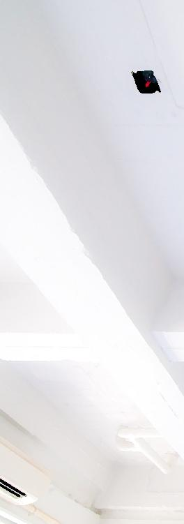
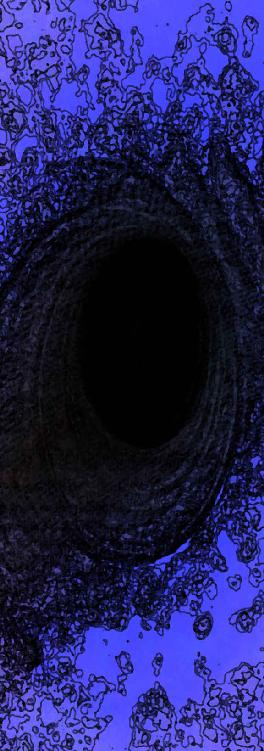
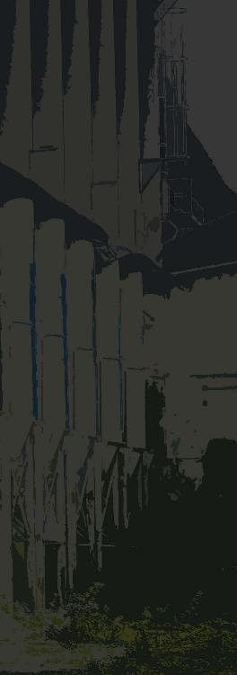

| キミはキメラ 白い檻 (StarGazer) | |
| hoshimi12（星見拾弐） | |
| stargazer (2016) | |
キミはキメラ 白い檻
hoshimi12（ほしみじゅうに）
痛みはなかった。
不思議だ。刺されてるのに。
「最近の注射針はね、痛くないんだよ」
そのお医者さんは笑顔で教えてくれた。
どんどん血が吸い上げられていく。
痛くない。痛くないけど、なんだか恐かった。
「あの......どうしてぼくだけ、病院で検査なんですか」
「大丈夫、心配しないで。べつに重い病気がみつかったとか、そういうわけじゃぜんぜんないんだ」
「なら、どうして」
「きみはね、選ばれたんだよ」
「選ばれた......？」
「これはとても名誉なことなんだ。きみはまだ子供だから、理解できないかもしれないけど......。大人になったら、きっと誇らしいことだと思うようになるよ」
「そう、なんですか」
「とにかく、私たちに任せてくれれば大丈夫だから。心配しないで」
血を抜かれる。
髪の毛もすこし切られた。
それに唾液や、皮膚の欠片もとられた。
「きみが協力してくれるおかげで、助かる子がいるんだ」
「薬の開発とか、そういうものですか」
「まあ、そんな感じかな。きみは頭がいいんだね。そんなことも知ってるんだ」
「あ、ありがとうございます」
それからお医者さんは、しばらくじっとパソコンのモニターを見つめていた。
少しこわい顔だった。
ぼくに聞こえないくらいの声で、仲間のお医者さんと何かを相談したりもしている。
やがて小さく頷き合っていた。
「ありがとう！ いい結果がでそうだ！」
お医者さんはパンと手を叩いて言った。
どうやらこれで検査は終わりらしい。
わざわざお医者さんは病院の入り口までぼくを送ってくれた。
「なにか飲みたいものはあるかい？」
途中、お医者さんは自販機の前で言った。
「えっと......じゃあこれ」
「ジンジャーエールか。なかなか大人なんだね」
適当に選んだだけだった。
コトンと紙コップが落ちてきて、ジャラジャラと氷が降り注ぎ、しゅわしゅわした色水で満たされていく。
「......おいしい」
「そうか、それはよかった」
ぼくは紙コップを両手でもちながら、自動ドアを通っていった。
振り返るとお医者さんが笑顔で手を振っている。
「健康には気をつけてね！ じゃあ大人になったら、また！」
ぼくは小さく頭をさげ、病院をあとにした。
病院の外にはぼくを送ってくれる車があった。
（大人になったら、か）
どうせ覚えてないだろう。
ジンジャーエールをちびちび飲みながら、子供ながらにそう思った。
そしてその通り、全くそんな出来事も忘れて、時は流れていった――
＃１ キメラ
教室が騒がしい。
何度言ってもダメだった。
「こらー、しずかにー」
チャイムも鳴ったし、僕も入ってきたというのに、生徒たちは友達同士でワイワイガヤガヤ話しつづけている。
「ねー、せんせー」
生徒のひとりが手をあげた。
「なんでオレたちって、ベンキョーしないといけないのー？」
友達同士の会話の延長か、単に授業を遅らせたいだけか。どのみちこちらを小バカにしたかのような質問だ。生徒はにこにこ笑っている。
「勉強しないと、立派な大人になれないからだよ」
「りっぱなオトナって？ どういう人のことー？」
「それは」
言葉に詰まる。
そんなこと、こっちが聞きたい。
「せんせーってなんでメガネかけてるの？ 勉強しすぎたの？」
またよくわからない質問が飛んできた。
......とりあっちゃダメだ。
「いいからっ、テキストひらいて」
パンパンと手を叩いて生徒たちの視線を集める。
早く仕事をしなければならない。
僕の仕事はただひとつ。少しでも彼らの成績をあげて、志望校に合格させることだ。
彼らの人生の悩みや疑問に答えることじゃない。ましてやオフザケなんてもっての外だ。
ここは塾の一室。
僕の仕事は塾講師なのだ。
（なにやってんだよ、僕は）
不意に虚しさを感じた。
こんなことがしたいわけじゃなかった。
僕は――本物の「先生」になりたかったはずなのに。
◆
「秋山先生のクラスは、まるで動物園ですな」
塾の仕事が終わったあと、僕はベテランの男性講師にたしなめられた。
「甘く見られとるんですよ。もっと毅然とした態度で臨まないと、今時の子たちは我々の弱みをすぐに見抜きますから。もちろん、キツい言い方や体罰なんかは問題になるのでダメですけどね」
「すいません......」
「説教しておいてなんですが、その弱気がいけないんですよ」
ぐうの音も出ない。
「先生というのは、教室の〝支配者〟でなければなりません」
「支配者......ですか」
「そうです。所詮、生徒というのは子供ですから。一度上下の関係をわからせれば、あとは素直に従いますよ」
僕は頷く他なかった。
これまで多くの生徒を難関校へ進学させてきたベテラン講師の言葉に間違いはない。
「我々は『学校の教師』じゃありません。生徒の人間性に擦り寄って、ご機嫌をうかがう必要なんてないんですよ。上手く手綱を握ることです。そして、クライアントである彼らのご両親のために、なんとしても成績を上げる。それがプロというものです」
僕は泣きそうになるのを堪えながら、ひたすら頷いて答えた。
その通りだった。
（僕は学校の教師じゃない）
当たり前の事実を確認する。
僕は、学校の教師になれなかったのだ。
学校の教師になりたかった。
理由は単純なもので、尊敬する人が教師だったから。
僕は盲目的に教師という職業に憧れ、教職課程に進み、勉強に励んだ。
そして挫折した。
教師になることを諦めたのは一年前だ。
三回目の教員採用試験に落ちて、諦めた。
試験に苦戦したというよりは、「教師になりたい」という意欲が年々失われていったのが原因だと思う。
たぶん、大学時代にやった教育実習が境目だろう。
いま思えば、なぜ実習先を情報が入りやすい地元の母校に選ばなかったのかと後悔している。
でも......わかってる。母校には感謝しているが、忘れたい過去があり、どうしても行く気になれなかった。
だから気持ちを一新して、地方の実習先を望んだ。
（甘かった）
教授のコネで行った地方の実習先は、荒れに荒れていた。
教員たちは見て見ぬふりを貫き、何もかもが荒んだ学校だった。
現場は想像以上に苛烈で、教員は腐敗していた。
僕はそんな現実を垣間見て、萎縮した。
教育実習に赴いた場所が悪かったのかもしれない。
しかしそんな風に割り切ることはできず、僕は自信と意欲を失った。
大学はとうに卒業。
地元に逃げ帰ってはきたが、いまは実家を離れ一人暮らし。
塾講師のバイトでなんとか食いつないでいた。
（惰性だった）
惰性で「教育者もどき」を続けていた。
しかしそんな僕に、転機が訪れた。
ある日の深夜。
バイト先の塾を出た時だった。
「君、ちょっとストップ」
振り返ると、黒のスーツを着た女が立っていた。
笑みをたたえ、口元の小じわが目立っている。
四十代といったところか。
「秋山義文くんね」
なぜ僕の名前を知っているのだろう。
「評判のいい優秀な講師さんのようね。少し調べさせてもらったわ」
「あの、なんの御用でしょうか」
「単刀直入に言うわ。あなたを家庭教師として、引き抜きたいの」
引き抜き？ 妙な話だ。
僕は今の塾でそれほど実績を上げているわけでもない。
「評判のいい優秀な講師」というのは、どこの情報だろう。
しかも家庭教師というのは、どういうことだ。
「誰かと勘違いしていませんか。僕はそこまで実績のある講師では――――」
「いえ、あなたで間違いないわ」
女は自信たっぷりに言う。
「時給は一万出す」
「え？」
「週五日、一日三時間の授業よ。どうかしら」
五日×三時間×一万円で......週十五万!?
×４で一ヶ月として......月給六十万!?
（バカな）
驚きすぎて声がでない。
同時に激しく警戒した。
（何かの詐欺じゃなかろうか）
先に契約金を払わされるとか。
もしくは超重労働な仕事で――いや、それにしたって月給六十万はヤバすぎる。
「日給、の間違いでは......？」
「いえ、時給で一万円よ」
「それは、短期間の仕事ですか......？」
「あなたさえよければ年単位でやってもらいたいわ」
女が微笑を絶やさないのが気になる。
どうも胡散臭い。
「あ、そうそう。名刺を渡すのを忘れてたわ」
女は内ポケットから名刺入れを取り出し、僕に一枚差し出す。
「ごめんなさいね。仕事柄、普段は名刺なんて使わないから。はじめに渡しておくべきだったわねぇ」
名刺には「冬城夕子」とある。
肩書きは「クジョウ生命科学総合研究センター技術顧問」。
なんだこれ。
「名刺、間違えていませんか」
「いえ、それで間違いないわ」
「家庭教師の引き抜きの話では......？」
「そうよ。家庭教師の、アルバイトとしてね」
「アルバイト？」
てっきりプロ家庭教師、社員家庭教師としての引き抜きの話かと思った。
......正規雇用じゃないのか。
しかし、何かの研究所の技術顧問さんが、なぜ家庭教師の募集なんてしているのだろうか。
「生徒はあなたのお子さんですか」
「まあ、ある意味そうかもしれないわねぇ」
冬城夕子は意味ありげに笑う。
「うちのセンターで預かっている子がいてね。その子を受け持ってもらいたいの」
預かっている？
「性別は女。すごく良い子よ」
「......」
「ただ、ちょっと問題があって」
ごくりとツバを飲み込む。
その「ちょっと問題」が、非常に気になった。
「今までね、一切の教育を受けてきてないの」
「えっ」
「学校ってものに通ったことがないのよ。特別な理由で、外部に出られない子なの。絵本とかは買い与えていたけど、それだけ。勉強らしい勉強は教えてこなかったわ」
「外に出られない理由って......」
「それに関しては教えられない」
「教えられない？」
「しいて言うなら、それが高時給の条件。彼女は特別な存在なの。多くのことは教えられないわ」
「聞いては、ならないと」
「こちらが秘しておきたいことはね」
「......」
「大丈夫。難関大学に合格させろとか、そういう要望があるわけじゃないから。彼女を『人並み』の学力にしてくれればそれでいい。難しい仕事ではないし、危険な仕事でもないと思うわ。まあ、怪しい仕事ではあるけどねぇ」
ふふ、と冬城夕子は笑う。
「連絡先は名刺に書いてあるから、決意が固まったら連絡して。なにはともあれ、とりあえず彼女に会ってみるのがいいと思うわ。決めるのはその後でもいい」
「......」
「お金に困っているんでしょう？」
「なっ」
僕はハッとして冬城夕子を見た。
冬城夕子は見透かしたようにニヤニヤ笑っている。
「それじゃあ連絡待ってるわ。アディオス」
冬城夕子は去っていった。
その後アパートへ帰った。
とりあえず寝支度を済ませる。
冬城夕子から受け取った名刺を手に、ノートＰＣの前に座った。
調べておきたいことがある。ブラウザを立ち上げ、検索ワードを打ち込んだ。
『クジョウ生命科学総合研究センター』
エンターを押すと、すぐに検索結果が出た。
ホームページはちゃんと存在していた。名前のとおり生命科学に特化した研究所であるらしい。
......とはいえ理系分野はさっぱりなので、具体的に何を研究しているのかはよくわからない。
所属はかの大企業「クジョウ」。
かなり大きな研究所で、資金も潤沢にあるようだ。
内部検索で「冬城夕子」の名前を探す。
（いるな......）
スタッフ紹介ページに、ちゃんとその名前があった。
顔写真もちゃんとある。
間違いない、さっき会った女だ。
（身元ははっきりしているみたいだな）
名刺の内容に偽りはない。
（時給一万も、本当なのだろうか）
現状、僕の心は揺れに揺れていた。
冬城夕子の言ったとおり、僕は金に困っている。
大学時代に借りた奨学金の返済が、まだまったく終わっていないのだ。
「奨学金」と言えば少しは聞こえがいいかもしれないが、要するに「借金」である。
いまの塾講師のバイトでは、完済するまで何年かかるかわからない。
（就活しようにも、金がいる）
そんな現状で舞い込んできたのが、時給一万円という高給アルバイトだ。
半年かからず奨学金を完済できる。
就活資金だってすぐに貯まるだろう。
（しかし、怪しすぎる）
水商売じゃあるまいし、時給一万のアルバイトなんてどうかしている。
いくら家庭教師の仕事は高時給のものが多いと言っても、僕は有名大出でもないし、プロでもない。
トップクラスに高いプロ家庭教師であっても、せいぜい時給五千円といったところだろう。
破格すぎるのだ。
どうしたって、いろいろ勘繰ってしまう。
（生徒の子、外に出られないって）
どういうことなのだろう。
病気か何かなのだろうか。
もしやその病気は、他人に感染するもので――いやいや、さすがにそれはないか。
（くそっ。どう考えても怪しい仕事なのに）
金に目が眩んでいる。
月給六十万。まさに夢のような高給だ。
切実に悩んでいたことが、一気に消し飛ぶことだろう。
惰性的で先の見えない生活も、終わる。
（腹を、決めるか）
僕の心は確実にお金のほうへ流れていた。
「夏川先生に、話しておかないとな......」
アポ取りのメールを入れておくことにした。
◆
数日後の休日。
いつものファミレスで夏川先生と待ち合わせをした。
五分早く到着すると、夏川先生はすでに奥の席でアイスコーヒーを飲んで待っていた。
「先生おはようございます」
「おはよう秋山くん」
「すいません......テスト期間の忙しい時期に」
「いえいえ、いいのよ。ちょうど一段落したところだったから」
優しい微笑みが返される。
メガネをかけた少しふくよかな中年女性。
僕の恩師、夏川清美先生だ。
中学時代からずっとお世話になっている。
色褪せていた僕を救ってくれた人だ。
僕の両親は共働きで、子供の頃から放っておかれてばかりだった。
僕はそんな両親のことが嫌いで、今も疎遠な関係が続いている。
同じ街に住んでいるが、別の家で暮らしている。
夏川先生は僕にとって、両親以上の人だ。
中学生以来、僕は夏川先生の言葉で育ったと言っても過言ではない。
そして僕は夏川先生と同じ「教師」の道を目指した。
だが、挫折した。
それでも夏川先生は、僕を見放さなかった。
「今日はいいお天気ね」
「そうですね」
「お布団とか洗濯物とかちゃんと干した？」
「はい。ここへくる直前に」
「絶好の洗濯日和だものね。きっとふかふかになるわ」
夏川先生はそう言いながら呼び出しボタンを押した。
まもなく店員がやってきた。
「ジンジャーエールひとつと、アイスコーヒーひとつ」
僕が言うより先に夏川先生が注文を入れる。
「ありがとうございます」
「いえいえ。ジンジャーでよかったわよね？」
「はい」
夏川先生は僕のことをよく知っている。
もう長い付き合いだ。
「今日はその、先生に話しておきたいことがありまして」
「うん」
「先生に紹介してもらった塾講師のアルバイト、辞めようと思ってるんです」
「それはまた、どうして？」
僕は塾講師の仕事自体にはまったく不満を持っていなかったことと、先日高時給の家庭教師のアルバイトを紹介されたことを説明した。
「時給一万」については伏せておいた。
「あら、いいじゃない」
「すいません、せっかく紹介してもらったのに」
「いいのよいいのよ。他に良い仕事が見つかったなら、ぜひそっちをやるべきだわ」
夏川先生が賛同してくれてほっとした。
夏川先生は僕の意見をいつだって尊重してくれる。
「私も大学生の頃に家庭教師やってたわ。あんまり緊張しないようにね。緊張って、相手に伝わっちゃうから。生徒の子に気を遣わせたらダメよ」
「はい」
「いつから？」
「今日の午後に面接と、授業方針の打ち合わせをする予定です」
「そう。生徒の子には会うの？」
「その予定です。まあ、今日は顔を合わせる程度だと思いますが」
「性別は？」
「女の子だそうです」
「かわいい子だといいわね」
「そういうのは関係ないですよ」
「ふふふ、真面目ね。昔から変わらないわ」
夏川先生は嬉しそうに微笑んでいた。

夏川先生と別れたあと、バスを経由して「クジョウ生命科学総合研究センター」へ向かった。
バス停から徒歩五分。
山を背に森に囲まれた大きな白い建物が見えた。
（この街にこんな施設があったなんて）
センターは木々と緑色のフェンスに囲まれ、入り口は正面に一つしかない。
車両専用の大きな鉄門と、個人専用の小さな門がある。
老齢な髪の薄い警備員が門番をしていた。
「秋山と申します。今日は冬城夕子さんの紹介で家庭教師のアルバイトに――」
「あー、話は聞いてますよ。はいこれ、通行証。今度ここを出入りする時は、それを私にチラッと見せてくれればオーケーだから。あとこれ、関係者用の名札ね。建物の中ではそれを服の見える位置に着けておいてね」
警備員さんは気さくな感じに言って僕を通してくれた。
通用口を抜け、正面から改めてセンターを見据える。
広い建物だ。山を削って建てたのだろう。
全体の「白」がなんとなしに「病院」を思わせる。
研究所だと聞かされなければきっと勘違いしたにちがいない。
「行くか」
少し緊張しながら足を進めた。

エントランスに入ると、正面受付の若い女性と目が合った。
「秋山様ですね。話は伺っております。ご案内いたしますので、こちらへどうぞ」
受付の女性に案内され、センターの中を歩いた。
僕は落ち着きなくキョロキョロと辺りを見回していた。
白をベースにした綺麗な内装だ。
無駄な装飾は一切置かれていない。綺麗だが、殺風景な建物とも言える。
「!?」
唐突に奇声が響き渡った。
いまのは、動物の鳴き声？
「あの、今のは」
尋ねると、受付の女性は足を止め、神妙な面持ちで振り返った。
「当センターでは動物を使った実験を行っております。今のは奥で飼育されている動物たちの鳴き声でしょう」
「動物実験、ですか。いったいどんな」
「......」
浮かない表情だ。
「申し訳ございません。私も、多くは存じておりません」
一介の受付嬢にすぎないため、センターの内情はそこまで把握していないのだという。
詳しい事はセンターの研究員に尋ねてほしいとのこと。
どことなくセンターへの不信感が見えた。
「こちらが応接室でございます」
部屋のドアを開き、受付の女性はペコリと頭を下げて去っていった。
部屋の中に入る。
「こちらへどうぞ、秋山先生」
冬城夕子が笑顔で出迎えた。
テーブルを挟み、冬城夕子の前に座る。
「よく仕事を引き受けてくれたわねぇ。嬉しい限りだわ」
「すいません、一つお聞きしたいんですが」
「なーに？」
「生徒さんのお名前をまだ伺っていませんでした」
「ハマルよ」
「ハマルさん、ですか」
珍しい名前だ。まさか外国人ではないよな。
「ハマルさんはどちらに？」
「自室で待ってるわ。今から案内する」
「あの、面接は」
「面接？ あー、別にいいわ。合格合格。先日郵送してもらった履歴書読んだし、問題ナッシングよ」
「今後の授業方針の打ち合わせなどは」
「それもパス。あなたに全て任せるわ。彼女に人並みの学力を与えてくれさえすればそれでいいから」
「はぁ」
「とりあえず、これだけ渡しておくわ」
数枚の書類を差し出される。
「給与関係の書類。一応それっぽいものを用意しておいたわ。そこに必要事項を記入して、後日受付の子にでも渡しておいて」
「わかりました」
「まあ、気楽にやってちょうだい。それじゃあハマルの部屋まで案内するわ」
冬城夕子との面談は呆気なく終了した。

その部屋はセンターのかなり奥に存在していた。
人通りの全くない廊下の向こうに、ひっそりと。
「道は覚えたかしら？」
「はい、おそらく」
「ふふ。まあわからなかったら受付の子にでも案内させればいいから」
冬城夕子が部屋をノックする。
『はい』
部屋の中から女の子の声がした。
「私よ。家庭教師の先生を連れてきたわ」
『どうぞ』
冬城夕子が僕のほうに振り返る。
「さて、私はここで失礼するわ。あとはよろしく」
「今日は顔合わせだけということでいいんですよね」
「ええ。授業は次回からやってくれればいいわ。今日はまあ、適当な時間に帰ってもらって構わないから」
「それでは今日は、簡単なアンケートだけ書いてもらうことにします」
「任せるわ。――――あ、そうそう。一つだけ注意」
「なんでしょうか」
「ハマルにあんまり質問しないこと」
「えっ」
「前に言ったでしょう。高時給の条件として、あんまりプライベートなことは詮索しないって」
「それじゃあ、アンケートは」
「まあ、口止めはしておいてあるから、問題ないと思うわ。彼女が答えなかったなら、その質問は聞いちゃいけないことだってこと。オーケー？」
「わかり、ました」
「それじゃあ、アディオス」
冬城夕子は手をあげて去っていった。

一度深呼吸をし、心を落ち着けてから部屋に入った。
「失礼します」
部屋の中をチラリと見回した。
棚、ベッド、机、椅子、クローゼット、どれも質素なデザインだった。
ベッドがあるあたり、この部屋で寝泊まりをしているようである。
ただ、娯楽につながるようなものは一切目に入らない。
テレビもゲームもパソコンも存在しない。
棚に数冊の絵本がささっているだけだった。
「初めましてハマルさん」
「......はじめ、まして」
ハマルは机の前でうつむいて座っていた。
なぜかネコミミの黒い帽子を被っている。
帽子の隙間から、大人しそうな少女の緊張した表情が見えた。
（髪が、真っ白だ）
帽子の隙間からのぞいている。
色素の抜け落ちた、真っ白な頭髪。
（病気なのだろうか）
だからこんな施設に預けられているのだろうか。
いろいろ思いを巡らせるが、さっきの冬城夕子の言葉が引っかかり、ハマルに尋ねることができない。
『詮索するな』
冬城夕子はそう言った。
それが高時給の条件だと。
仕方なく、疑問を喉奥に飲み込む。
「あれ......？」
不意にハマルが顔を上げ、椅子から立ち上がった。
「このニオイ......」
鼻をすんすんしている。
キョロキョロと辺りを見回し、僕に視線を止めた。
僕のほうに近づいてくる。
「え、えっと、どうかした？」
「......」
ハマルは僕の声に反応しなかった。
すんすん、すんすん、鼻を微かにひくつかせながら距離を縮めていく。
ハマルは僕の胸元あたりまで顔を近づけ、またすんすん。
ニオイを、嗅いでいるようだ。
一体なんだというのか。
「......」
やがてハマルの顔が離れた。
僕は慌てて自分の服のニオイを嗅いだ。
しかし、特に変なニオイがするわけでもない。
これといって体臭も感じないが。
「なにか、臭う......？」
恐る恐る尋ねた。
「ごめんなさい。なんでもないです」
ハマルは神妙な面持ちで椅子に戻った。
「......そんなこと、あるわけないし」
ぽつりと呟くのが聞こえた。
（不思議な子だなぁ）
僕は困惑しつつも平静を装う。
あまり奇異の目で見るのはよくない。
今まで教育を受けてこなかったようでもあるし、常識の通じない部分も覚悟しなければ。
「えっと、それじゃあ、改めまして」
すこし緊張しながら言った。
「秋山義文です。これからよろしく」
「よろしく、おねがいします」
ハマルも緊張しているようだ。
うつむいて身を縮ませている。
僕の目を見ようとしない。
「そこの椅子、座ってもいいかな」
「......どうぞ」
ハマルの机の隣に、キャスターのついた小さな机があった。僕用のサブデスクだろうか。
とりあえずそれを借りることにする。
「今日は簡単なアンケートに答えてもらいたいんだけど、いいかな」
「はい」
僕はカバンからプリントを取り出し、ハマルの机に置いた。
そのプリントにアンケート事項が印字されている。
好きな食べ物は何かとか、好きな芸能人は誰だとか、趣味は何かとか、そういうアンケートだ。
今後のコミュニケーションの糸口になればと思い、用意した。
「............」
ハマルはプリントを見つめ、沈黙していた。
悩んでいるのだろうか。
「あの、ごめんなさい」
「ん？」
「わかり、ません」
「え？」
僕は思わずプリントを覗き込んだ。
いったい何がわからないというのか。
そんなに難しい質問を書いた覚えはない。
「......よめないんです」
消え入るような小さな声でハマルは言った。
「字がぜんぜん、よめないんです」
数瞬、絶句してしまった。
「あ、あー。そうなんだ」
慌てて平然を装う。
（しまった。そうか）
冬城夕子が話していたことを思い出した。
ハマルはこれまで学校に通ったことがなく、教育というものを受けてこなかった。
（漢字が、読めないんだ）
僕は改めて気を引き締めた。
「じゃあ読み上げるから、口で答えてくれるかな」
「それなら、できると思います」
全十項目、口で質問していった。
好きな食べ物は？ ――――ないです。
好きな芸能人は？ ――――わかりません。
趣味は？ ――――ないです。
「............」
全て、そんな調子だった。
さすがに困り果てたが、表情には出さないようにした。
おそらくハマルは、正直に真剣に答えている。
ちゃんと答えて、これなのだ。
（いったいこの子は、どんな生活をしてきたんだ）
気になることがありすぎる。
しかし詮索はしてはならないという。
むずがゆくて仕方ない。
「うん。答えてくれてありがとう。参考にするよ」
やはりこれは、一筋縄ではいかない仕事のようだ。
「今日のところはここまでだけど、何か質問はある？」
ハマルは沈黙していた。
辛抱強く待っていると、やがて口を開いた。
「......ないです」
ため息をつきそうになるのをなんとか抑えた。
「そう、わかった。何か聞きたいことがあったらいつでも気軽に聞いてね」
「はい」
「それじゃあ僕はそろそろ行くよ」
僕は立ち上がった。
ハマルも立ち上がった。
見送りをしてくれるようだ。
「明日、字を書くものと消しゴムを用意しておいてね。あとノートも」
「わかりました」
「ハマルさん、またね」
「はい......また」
見送りは部屋の外までだった。
（変な子だった）
僕は長い廊下を歩きながら、思いを巡らせる。
これからうまくやっていけるだろうか。
不安を覚えながら帰路についた。

翌日の午後。
今度は冬城夕子の案内無しにハマルの部屋を訪れた。
今日もハマルはネコミミ帽子を被っていた。
「抜き打ちで悪いんだけど、今日はハマルさんの現時点での学力を知るために、テストをやらせてもらおうと思ってる。はじめは国語のテストだよ」
ハマルはだんまりだった。
でも一応、筆記用具は用意しているみたいだ。
テストの難易度は小一から小六まで。
満足な教育をこれまで受けてこなかったそうだから、せいぜいその中の学力だろうと踏んでいた。
「わからないところは飛ばしていいからね。わかるところを解いていって。何か質問があったら手を挙げるように。問題の内容は教えてあげられないけど、他の疑問になら答えるよ」
「......はい」
小さな返事。
「それじゃ、はじめ」
タイマーのスタートボタンを押す。
開始して数秒、早速手が挙がった。
「あの」
「なんだい？」
「この一番上のところって、なにか書くんですか」
「あっ、えっと、そこは名前を書くところなんだ。ハマルさんの名前を書いて」
「はい、わかりました」
震える手で「はまる」と書くハマル。
かなり緊張しているようだ。
それからしばらくは順調にシャーペンの走る音が聞こえていたが、三分後くらいからちょいちょい止まるようになった。
十分後、完全に沈黙。
ハマルはあたふたと、二枚の問題プリントを見比べていた。
解ける問題を探しているのだろうか。
チラリと解答用紙を見たが、ほとんど真っ白だった。
（思ったより重症かもしれない）
僕は少し気を重くした。
「あの、すいません......」
消え入るような小さい声だった。
「もう、わかるものがありません」
「そうか。それじゃあここまでにしよう」
なるべく気丈な態度で言った。
動揺したそぶりと見せたら余計落ち込むだろう。
「すぐに答え合わせするから、ちょっと待っててね。暇だったら問題用紙を見なおしてて」
ハマルの隣の席に座り、ささっと点数をつけていく。
うん、これはひどい。
字は丸くてかわいいんだけど、これはひどい。
（漢字がまったく書けないみたいだな）
これは、小三の前半レベルといったところか。
いや、それ以下か。
ハマルは顔を真っ赤にして押し黙っている。
自分でもひどい出来だと理解しているのだろう。
（今日は一教科だけのつもりだったけど）
時間がかなり余ってしまう。
「じゃあ、次は算数のテストだ」
「えっ」
という顔で見つめられた。
まだやるの、と言いたげな顔だ。
仕方ないのだ。
教える科目は国語、算数、理科、社会、四教科なんだから。
「もうわからないと思ったら、さっきみたいに途中で言ってくれて構わないからね」
算数のテストもほぼ同じ結果だった。
十分くらいで完全停止。
そこで採点。
足し引きが少しできる程度で、小一レベルと言ってよかった。
まったく勉強を教わったことがないというのは、どうやら本当のことらしい。
続く理科と社会に関しては、ほぼ０点。
おそらく漢字が読めないのがかなりのネックになっている。
（なにはともあれ、読み書きの練習からだな）
理科や社会といったものは、そのあとだろう。
「ごめんなさい......」
ハマルが言った。
「ひどいですよね」
確かにひどい。
なんて言えばいいか悩んだ。
「今まで勉強ってものをしてこなかったんだ。当然の結果だと思うよ」
少しきつい言葉だったかもしれないが、事実は伝えておこうと思った。
「だからこれから勉強して、わかるようになっていこう」
「わかるように、なりますか」
「なるとも。キミがわかりたいと思うのなら、必ず。でも、別にわからなくていいやって思うなら、わかるようにはならないかもしれない」
「......」
「ゆっくりやっていこう。わかるようになれば、きっと楽しいよ」
ハマルは答えない。
「ひらがなはわかる？」
「はい」
「カタカナは？」
「......ちょっとしかわかりません」
「なるほど。普段は本とか読んだりするの？」
「えほんを、よんでます」
なるほど。ひらがなは絵本を読んで覚えたのか。
時計を見ると、残り一時間弱。
「じゃあ残りの時間は、カタカナの勉強をしよう」
瞬く間に最初の授業は終わった。
落胆ばかりではなかった。
おそらくハマルは、真面目な性格だ。
僕が方眼紙にカタカナの例を書いているのを横から必死に見つめていたし、書き順の説明も熱心に聞いていた。
意欲さえあれば、なんとかなる。
即席のカタカナ練習プリントを宿題として手渡し、その日の授業を終わりにした。
◆
「わからないことがあれば、どんどん聞いてくれていいからね」
「はい......」
「それじゃあ、また明日」
小さく手を振り、部屋のドアへ向かう。
「あ、あのっ」
「ん？」
帰ろうとしたところでハマルに呼び止められた。
「どうかした？」
「えっとその......夕子さんが、センセイっていってて」
「うん」
「わたしもそういうふうに、いったほうがいいんでしょうか」
不思議な問いだった。
僕の呼び方をどうすればいいか、という意味だろうか。
勉強もそうだが、人との会話自体まだ不慣れなのかもしれない。
「べつになんでもいいよ。名前でも、先生って呼んでも」
「......」
ハマルは納得がいかない様子だった。
「あの......どうして名前があるのに、センセイっていうんですか？」
なるほど。やっと意味がわかった。
ハマルは「先生」の意味がわかっていないのだ。
だから疑問に思って質問した。
おそらく日常的な口語などは、周りが話しているのを聞いたり、与えられた絵本などで辛うじて学習したのだろう。
でもそれ以上の社会知識は、からっきし。質問に答えてくれる大人もいなかったと。
......どうにも信じられない生活環境だ。眠り姫かなにかだろうか。
「先生っていうのは、僕の役柄っていうか」
「やくがら？」
「僕は、勉強を教える人だよね。そういう人のことを、先生って呼ぶんだ」
「へぇ......」
相手を役柄で呼ぶのは、「真名」を重んじる文化の名残だと言われている。
ただ僕は、先生と呼ぶことを強要するつもりはなかった。
僕はそういう先生が嫌いだったし、生徒に偉ぶりたいわけでもない。
（文化がどーとか話しても、まだわからないよな）
僕はいったん詳しい説明を飲みこんだ。
勉強を教えるにも順序がたいせつだ。
ややこしい説明をするよりも、まずはその好奇心を見守りたい。
「センセイ......センセイ......」
ハマルは小さく呟いていた。
まるで言葉を咀嚼しているかのようだ。
「なんだかふしぎで、おもしろいです」
おもしろい、か。
なにかを学ぶことを少しでも楽しんでくれるようになれば、それこそ先生冥利に尽きる。
「あの、それじゃあ、これからそうよんでいいですか？」
「うんいいよ」
「ありがとうございます。センセイさん」
「い、いや、センセイにさん付けはいらないんだけど......」
「えっ？」

翌日。
ハマルは手渡した宿題をちゃんとやってきていた。
カタカナのテストをやってみると、満点だった。
「おお、全問正解だ」
素直に感心した。
この年齢なら普通できて当然だが、ハマルは普通の人生を送ってこなかった。
いままで誰にも勉強を教わってこなかったのだ。
感心したのは、その真面目さだ。
昨日僕が帰ったあと、ちゃんと勉強したのだ。
わからないことがあれば質問する意欲だってある。
これなら先は明るい。
「えらいなハマルさん。ちゃんと宿題もやってくれてるし。うれしいよ」
「......っ」
ハマルは顔を真っ赤にしてうつむいていた。
褒められて照れているのだろう。
そんな一面を垣間見て、僕は少しホッとした。
「じゃあ満点をとったハマルさんに特別に――ってわけでもないんだけど、プレゼントだよ」
「え、なんですか」
国語と算数の教材を渡す。
「あとは、これ」
「これは絵本......じゃないですね。文字ばっかり。『エルマーのぼうけん』？」
「僕が子供の頃に好きだった本。ぜひキミにもって思って、さっき買ってきた」
小学校低学年向けの児童書だ。
絵本を読むハマルにはぜひ、読書好きになって欲しい。
読書を好きになることは、国語の上達の近道になる。
『エルマーのぼうけん』は挿絵も多いし、絵本の延長としてはちょうどいいレベルだろう。
「暇な時に読んでみて。勉強になるし、きっと面白いよ」
ハマルはジーッと本を見つめている。
「もらって、いいんですか？」
「ああ、もちろん」
ハマルは『エルマーのぼうけん』をそっと抱き、微笑んだ。
「うれしいです。ありがとうセンセイ」
「どういたしまして」
はじめて笑ってくれた。感無量だ。
思わず僕も笑みがこぼれた。

最初は骨が折れると思った。
だけどハマルは素直で、真面目な子だった。
授業はとても捗り、予想以上のペースで進んでいった。
本当に......予想以上だった。
授業回数が十を満たない段階で、僕はハマルの凄まじい知識欲を知ることとなった。
「『エルマーのぼうけん』すごくおもしろかったです！」
本を手渡した翌日、目を輝かせながら本の面白かったところを説明してくれた。
一日で読破したことに少なからず驚く。
「『エルマーのぼうけん』はシリーズになってて、あと二冊あるんだ。もしよかったら今度持ってこようか？」
「え、ほんとうですか？ つづきがあるんですか？」
ハマルは大喜びだった。
翌日、エルマーシリーズの残り二巻を手渡した。
ハマルはその二冊を、またも一日で読み終えた。
別の授業の日。
僕は一気に十冊の児童書をハマルに手渡した。
ハマルの読書スピードはかなり速いと踏んで、多めに渡した。
ハマルはその十冊を、一日で全て読み終えた。
さすがに驚いた。
それだけじゃない。
自習用に手渡したドリルも、一日やそこらで全てやり終え、うれしそうに僕に見せてくれた。
スポンジのような吸収力だった。
「教育」をこれまで受けてこなかった。だからその遅れを取り戻そうと必死になっている――ようには見えなかった。
実に楽しげに、さもそれが当たり前かのように、凄まじい分量の勉強をこなしていく。
（この子は天才の類かもしれない）
授業を始めて二ヶ月で、ハマルは小学生の分野をほぼ完璧にマスターしていた。
会話をしているとその目まぐるしい変化に気がつく。
語彙が豊かになり、僕の言葉の意味もすんなり理解できるようになった。
貪欲に質問を繰り返し、新たな知識を身につけていく。
僕は塾講師をやめ、家庭教師に専念することにした。
とてもじゃないが両立などできる状況ではなかった。
それほどにハマルの勉強進度は早い。
（もしかしたら無理をしているのかもしれない）
そう思い、少しペースを落とした。
というよりも、ペースを落とさなければ僕が参ってしまうところだった。
ハマルの部屋は、僕がプレゼントした本で徐々にいっぱいになっていった。
ハマルは純粋に、学ぶことを楽しんでいる。
それはとても嬉しいことだったし、成績のためだけに勉強を教えてきた僕にはとても新鮮だった。
そして戸惑うことでもあった。
（なにを教えれば、いいんだろう）
ハマルは逸材だった。
冬城夕子から依頼された「人並みの学力」なんてあっという間に身につくだろう。
いや......もうすでに基礎はできてるかもしれない。
このペースでいけば、必ずいまの勉強では満足できなくなる。
「センセイ、きょうはなにを教えてくれるんですか？」
好奇心に満ちた瞳があった。
なにを教える。
因数分解か、モル計算か、５文型か、旧石器時代か、古文か。
（受験もしないのに）
（そんなものを漠然と教えて、なんの意味がある）
元教育者志望らしからぬことを思った。
だが大切なことだ。
「ハマルさんは、将来なにになりたいとかあるのかな？」
「将来、ですか」
「これまで渡した本にもさ、野球選手になりたい子とか、シェフになりたい子とかがでてきたと思う。そんなふうに、ハマルさんにもなりたいものが――夢があるのかなって」
「夢......」
ハマルはうつむく。
「考えたこともなかったです」
静かな返事があった。
「そういうのがないと、勉強しちゃいけないんでしょうか」
「そ、そんなことないよ。ただ僕としては、ハマルさんに将来の目標があるんだったら、これからの授業にすこしでも反映させたいと思ったんだ」
「......」
「ごめん。ムリして考えなくてもいい。まだ見つからないんだったら、これからゆっくり探していけばいいから」
「はい......」
ハマルはしっくりこないようだった。「答えのない問題」に直面して戸惑っているのかもしれない。
（なにを教えることが、この子の幸せになるんだろう）
おこがましい考えだ。
でも、考えずにはいられなかった。
楽しいから勉強する――それだってとても素晴らしいことなのに。
「キミと話してると、なんだか僕も勉強になるよ」
「センセイも？」
「ああ」
「センセイは勉強、すきですか？」
「好きな勉強もあれば、苦手な勉強もあるかな。ハマルさんは？」
「すきです。センセイと勉強してると、ぜんぶたのしいです」
ハマルはちょっと照れたように微笑んだ。
なんだか僕も照れてしまった。
ハマルがようやく自然に笑ってくれるようになった頃。
授業の終わり、ふとハマルが質問してきた。
「センセイって、なんで先生になろうとしたんですか？」
僕は筆記用具を片付ける手を、思わず止めた。
このまえの夢や目標といった話のつづきだろうか。
（なんで先生になろうとしたのか）
胸の中でその言葉を反芻する。
明確な理由はある。
恩師である夏川先生の、真似をしたかったんだ。
夏川先生に孤独から救ってもらった。だから憧れた。
「厳密に言うとさ、僕は、本物の先生じゃないんだよ」
「えっ？」
「本物の先生って、ちゃんとした学校の先生のことを言うと思うんだ。僕は偽物の先生かな。それに、先生にはなろうとしたけど、途中で諦めてしまったんだ。だから僕は、先生じゃない」
「え、えっと、あの......」
「あっ」
僕はハッと我に返った。
しまった。いったい何を口走っているのか。
自身が「教師」について悩んでいたもんだから、つい悩みがそのままこぼれてしまった。
「ご、ごめん。混乱させるようなこと言っちゃったね」
教え子に悩みを打ち明けるなんて、ダメだろ。
教育者たるもの、教え子の前では強くあるべきだ。
悩みなんか見せて、気を遣わせるべきじゃない。
「ごめんなさい......。わたし、変なこと聞きましたか」
「そ、そんなことないよ！ 僕が変なこと言っちゃっただけで」
「あの......先生って、『先に生きる』って書くじゃないですか」
「あ、うん」
「わたしの考えている先生って、先を生きているヒトが、後から生まれて来たヒトたちにいろいろ教えてあげる――そういうものなのかなって、思っているんです。もしかして、意味間違っていますか......？」
いや、間違えていない。
そういう意味だと思う。
「......間違ってない。ごめん――改めて質問に答えるよ」
悩みや弱みを教え子に見せるのは、よくないことだと教えられてきた。
でもハマルになら、話していいかなと思えた。
なんで先生になろうと思ったのか――
「子供の頃、いろいろなことですごく悩んでたんだ」
ハマルは僕を真っ直ぐに見つめ、静かに聞いていた。
冷えた家庭のこと。
クラスに馴染めなかったこと。
周りが言う将来のことなんて、どうでもよかったこと。
全てではないが、話した。
いま思えば、ありきたりな悩みだったかもしれない。
「そんな時に、ある先生と出会ったんだ」
夏川先生のことを話した。
とにかく優しくて、気にかけてくれて。
あの頃の僕は、それでどんなに救われたか。
「だから僕は、その先生みたいになりたいと思った。すごく先生っていう存在がかっこよく思えたんだ」
でも現実は甘くはなかった。
僕は教育現場の現実を見て、挫折した。
情けない。
僕は先生になれなかった。
いまの僕は、偽物だ。
「偽物なんかじゃないと思います」
真剣なハマルの表情があった。
「センセイは、先生です」
僕はしばらく言葉が出せなかった。
ハマルが言ったトートロジーな言葉が、妙に胸に突き刺さった。
じんわりと広がっていく。
「センセイは、わたしの先生ですよね？」
「えっ、あ、うん」
そうだ。
僕はハマルの先生だ。
「なら、センセイは先生だと思います」
そうかもしれない。
僕は思わず頷いてしまった。
「そうだね......僕は確かに、キミの先生だ」
自分の中で確かめていく。
胸がすこしスッとしたような気がした。
純粋で混じり気のないハマルの心だからこそ出てきた、「当たり前の言葉」なのかもしれない。
「ありがとう、ハマルさん」
ハマルはキョトンとし、それから微かに頬を染める。
また距離が縮まったような気がした。
「センセイのことが聞けて......うれしかったです」
ハマルが恥ずかしそうに言った。
僕はただ純粋に、嬉しかった。
その日、僕は勤めていた塾に改めて挨拶しにいった。
職場の同僚は皆いい人たちばかりだった。
クラスの生徒たちも最初は驚いていたが、笑顔で僕を送り出してくれた。
「いやはや、残念だよ」
帰り際、ベテランの男性講師に呼び止められた。
僕に塾講師とはなんたるかを一から教えてくれた人だ。
「しかし家庭教師とはね。待遇がよかったのかな？」
「は、はは......まあ」
図星である。
高給に目が眩んで家庭教師になった。
「とはいえ、きみには合ってるかもな」
「えっ？」
「きみは大勢のクラスに対応できてないようだったから。いつも余裕がなくて、生徒たちにも甘く見られていた。だから生徒が最初から一人なら、今までよりはしっかりやれるだろう」
厳しい言葉だったが、本当のことだ。
僕は深く頷いた。
「最後にひとつ、忠告させてほしい」
「なんでしょう」
「生徒に感情移入しすぎないことだ。深みにはまれば、容易には抜け出せなくなる。所詮他人であると、割り切るべきだよ」
僕は眉をひそめた。
これまた本当のことに違いない。
しかし僕は、それが悪いことだとは思わなかった。
「すいません。僕は生徒を、『ひとりの人間』として見たいんです」
僕がそう答えると、男性講師は目を瞑った。
「危うい考えだな」
「......」
「まさか生徒さん、女の子じゃないだろうな」
「えっ」
「やっぱりか......。私には家庭教師の知り合いもたくさんいるが、女子生徒に手を出した家庭教師も何人か見てきてね」
「ぼ、僕はそんなつもりありません！」
「ああ、きみはそんなことしないだろうな。きみは真面目だから。でもね、相手はそんなつもりがあるかもしれないよ」
「いや、さすがに......」
「可能性の話さ。きみの言うとおり、生徒を『ひとりの人間』として見るのなら、そういうことも起こりかねない。先生と教師である以前に、きみたちは人類、男と女。きみに耐性があっても、相手にはないかもしれない。気をつけておくに越したことはないだろう」
「......そうですね」
「すまんな、最後まで説教ばかりで」
「いえ。先生にはすごく感謝してます」
「そうか、そう言ってもらえると嬉しいよ。仕事柄こんな言い方しかできなくてね。正直いえば、きみの『理想』も理解できないわけじゃない。これはまあ、年寄りの嫉妬じみたエールだと思ってくれ」
男性講師は右手を差し出す。
「とにかく、がんばりたまえ。我々は学校の教師ではないが、〝教育者〟の端くれではある。誇りを持って、毅然とやりなさい」
「はい」
僕は男性講師と固く握手を交わし、世話になった塾を後にした。
◆
塾が見えなくなったあたりで、カバンに手を伸ばす。
さっき買ったそれを取り出す。
「だいじょうぶ......だよな」
ハマルへの「プレゼント」だ。
彼女が喜べばと、その学習に役立てばと思って用意した。
きっとハマルは喜ぶだろう。
男性講師の忠告が胸に残っていたが、それでも――
（ハマルはずっと独りで、こんなことさえ知らないんだ）
過去の自分が重なって見えた。
少しでも空白を埋めてあげたいと思った。
人並みの、誰もが知る温かさを知ってほしい。
それは......危うい考えなんだろうか。
「ん？」
不意に肌に感触があった。
空を見上げると、白い雪がふっている。
気温も低く、雪の結晶もなんだか大きい。
（積もるといいな）
なんとなくそう思いながら帰路についた。
翌日、ハマルの部屋にて。
僕はハマルの集中を削がないよう、授業の終わりを見計らって言った。
「メリークリスマス！」
十二月二十五日。
世間でいうところのクリスマスだ。
街の様相はクリスマス一色で、どこもかしこも賑わっている。
「くりすます？」
案の定ハマルは知らないようだった。
やっぱり普通の授業だけでは教えられない一般知識があるようだ。
（なんて説明したものかな）
クリスマスの本当の意味を伝えても混乱するかもしれない。
それに、世間のクリスマスに対するイメージなんて、せいぜい「サンタさん」とか「プレゼントがもらえる日」くらいなものだ。
ハマルには知識だけではなく、その雰囲気を知ってもらいたい。
「はい、クリスマスプレゼント」
ハマルにプレゼントを手渡す。
それは包装した本で、内容はサンタさんにまつわるものだった。
これを読めば、世間的なイメージくらいはわかるだろう。
「わぁっ」
ハマルはパッと顔を明るくしてそれを受けとった。
雪の降りつもる街、トナカイがひくソリに乗ったサンタさんが空を飛んでいる。ハマルは興味深げにまじまじと見つめている。
「センセイ、ありがとうございます！」
「どういたしまして。まあプレゼントっていっても、勉強に関わることだけどね」
「それでもわたし、すごくうれしいです」
ハマルは本をだきしめる。
「センセイのもってきてくれる本、ぜんぶおもしろくて。わたし何度も読みかえしちゃってます」
ただでさえたくさん渡した本を、何度も読みかえしている。
ハマルはやはりよほどの読書好きなのかもしれない。
「サンタさんと、トナカイさんですか」
さっそくハマルは本をぱらぱらめくって読んでいる。
（速いなおい......）
まさに速読。
ハマルは指で斜めにページをなぞり、すぐに次のページを開く。
その動作たるや一瞬のもので、これは一冊読むのに数分とかからないだろう。
「センセイ、これってなんですか？」
「ん？ これは――雪だよ」
「ゆき？」
まさかハマル、雪も知らないのか。
たしかにあまり雪のふる街ではないが......。
それにしたって気づかないとは、よほど日常の活動範囲が狭いのかもしれない。
部屋にひとつある窓も基本的にカーテンを閉め切っている。
「ハマル、中庭にいこっか」
「どうしてですか？ きょう寒いですけど」
「いいから、いこう」
僕はハマルをつれ、狭い部屋をでていった。

「なんですかこれーーー！」
中庭にでたハマルは叫んだ。
「白くて......ふわふわしてて......つめたくて......。なんですかこれ!!」
「いやだから、これが雪だよ」
「な、なんでこんなことになるんですか!?」
「雨はみたことあるよね」
「は、はい！」
「あれが、これになるんだよ」
「意味がわかりません!!」
授業はもう終わったが、ハマルの好奇心はとまらないようだった。
口でカンタンに雪のふる仕組みを説明していく。
ハマルは積もった雪を指でつんつん突きながら、うんうん頷いていた。
「なんだか、ふしぎですね」
冷たさは気にならないようだった。
ハマルは空をみあげ、雪を受けとめる。
真っ白な髪が雪の世界によく溶けこんでいる。
「わたし、外はこわい場所だってきいてました。でも、外からやってきたセンセイはすごく優しいし、雪もこんなにきれいだし......」
ハマルは神妙な顔をしていた。
自分の置かれた立場、センターの人間たちへの「疑問」が生じたのかもしれない。
僕は、なんと声をかければいいかわからなかった。
『ハマルに関して、詮索はしてはならない』
それが高時給の条件だった。
僕はまだ、ハマルがなぜセンターにいるのか、なぜセンターを出られないのか、まるで知らされていなかった。
「あのさ、ハマルさん」
「？」
きょとんとした顔があった。
『どうしてキミは、こんなところに閉じ込められてるの？』
喉まででかかっていた。
でも、聞けなかった。
聞けば、仕事を失うだけじゃない......なにか大切なものが崩れてしまうような、そんな予感がしたのだ。
「雪だるま、つくってみようよ」
「雪だるま？」
「こんなふうに雪をまるめて転がしてさ」
「うわっ」
「ふたつ組み合わせれば、ほら」
適当に石や小枝を身体のパーツにみたてていく。
「わ、わたしもやっていいですか？」
「ははっ。もちろん」
それからハマルと日が暮れるまで雪遊びをした。
ハマルを楽しませてあげたい一心......というわけでもなく、僕自身だいぶ楽しんでしまった。
雪遊びなんて子供のころ以来だ。
どうしてこんな楽しいことを、忘れてしまっていたのだろう。

その数日後だった。
センターの廊下で冬城夕子と出くわした。
「クリスマスについて教えてあげたそうねぇ」
開口一番ニヤリとした顔で言った。
「ええ、まあ......。ハマルから聞いたんですか？」
「そりゃそうでしょう。たまにヒヤリングしてるのよ」
「ヒヤリング、ですか」
「なに？ 授業内容が筒抜けだったことがショックなのかしら？」
「そういうことでは......」
「安心しなさい。ハマルは必要最低限のことしかいつも話さないわ」
ふふっ、と冬城夕子は笑う。
僕はいつも疑問だった。ハマルと冬城夕子は一体どういう関係なのか。
母親ではないにしろ、保護者という風にも見えない。
なんというか......「管理者」という言葉が合っている気がする。
「で、クリスマスのこと、なんて説明してあげたの？」
これもヒヤリングの一環なのだろうか。
それとも単なる世間話か。
「あっ、いえ。詳しく説明してもわからないと思ったので」
「じゃあなに。恋人同士がデートしたり、サンタに扮した親が子供にプレゼントあげる日だって、そういう薬にも毒にもならない世間一般のイメージを伝えたのかしら？」
「えっと、それは」
「クリスマスは、イエス・キリストの降誕祭よ。で、サンタクロースは聖ニコラウスの逸話からきてる。本来はそういう宗教的な、宣教のために持ち込まれたイベントなの」
「それは、知ってますが......」
「ふふっ」
「なにがおかしいんですか」
「いやぁね。よりにもよってハマルが、キリスト教の記念日を祝うだなんて。ふふっ――こんな皮肉はないと思ったのよ」
冬城夕子は声も抑えずケラケラ笑った。
（わけがわからない）
前からおかしい人だとは思っていたが。
意味不明なことを言い、人を振り回して遊んでいるのか。
「余計のことを言ったかしらね。授業方針はあなたに一存してるし、ハマルに『人並み』の学力をつけてほしいと依頼したのはこちらだし」
「......」
「これからも、ハマルをよろしくね」
冬城夕子は手を上げて去っていった。
肩を上下させ、まだくくくと笑っているのが見える。
（読めない人だ）
冬城夕子と話をするたび、どっと疲れがでる気がする。
相手の活力を吸いとるかのような――そんな禍々しさをあの女は纏っている。
クリスマスが終わったらすぐ、正月だった。
センター前には門松が置かれ、警備員や受付嬢と新年の挨拶を交わした。
「あけましておめでとう、ハマルさん」
「あけまして......？」
「新年を祝う言葉だよ。年が明けたら、日頃お世話になってる人たちに挨拶するんだ」
「それじゃあ――あけましておめでとうございますっ、センセイ」
「うん。今年もよろしく」
「はいっ、今年もよろしくおねがいします！」
今日の授業は正月にまつわるものにした。
正月の飾りや、遊び、それと食べもの。
それぞれにどんな想いがこめられているのか。
ハマルはじつに興味深げに耳をかたむけていた。
「じゃ、きょうは遊ぼうか」
「えっ？」
「言っておくけど、遊びも勉強だよ」
僕は実家からもってきたおもちゃを床にひろげた。
けん玉、福笑い、だるま落とし、独楽、お手玉、羽根突き。
どれも子供の成長に対する願いがこめられている。
「あははっ。なんですかこの顔」
ハマルが最初に興味を示したのは福笑いだった。
目隠しをし、バラバラの顔のパーツを組み合わせて遊ぶものだ。「笑う門には福来たる」という願掛けでもある。
「センセイ、これは？」
「それは羽根突きだよ」
羽根突きの羽根は、昔は無患子という植物の種を使っていた。
無患子――子供が患わないようにという、厄除けである。
あとは厄を「はねのける」という意味もあるようだ。
言葉に魂は宿るという「言霊信仰」の国ならではの文化かもしれない。
「外へもっていこうか。一応許可は得てるから」
「やった！」

センターの中庭へ移動する。
数日前まで雪が積もっていたが、もうすっかり除去されている。
中庭に到着するや、ハマルはててーっと隅に走っていった。
それから少しだけ肩を落とした。
「雪だるま......溶けちゃいましたね」
中庭の隅にはクリスマスに作った雪だるまの名残があった。
センターのクリーンスタッフも、溶けきるまでそっとしておいてくれたらしい。
「ずっと雪がふってればいいのに......」
「ははっ。それじゃあ街の人たち困っちゃうよ。季節は巡るものだからさ、またいつかふるって」
「またって、来年ですか？」
「今年またふるかもしれないし、来年かもしれない」
「まちどおしいなぁ......。またセンセイと雪だるまつくりたいです」
ハマルは何気なく言ったのだろう。
でも僕はすこし考えてしまった。
来年、僕はまだハマルの家庭教師をしているだろうか。
冬城夕子は年単位でと言っていたが、どう転ぶかなんてわからない。
こういう仕事は基本的に一期一会、雪だるまみたいなものだ。
「じゃあハマルさん、羽根突きやろっか」
「あ、はい！ やります！」
ハマルは最初覚束なかったが、すぐに慣れたらしい。
コンっ、コンっ、コンっ、と小気味良い音が中庭に響く。
無邪気に楽しむハマルを見ていると、僕は心があたたまるのを感じた。
そして季節は巡っていく。

家庭教師をはじめて数ヶ月が経った。
ハマルとすっかり打ち解けた、ように思える。
はじめの頃とは打って変わって笑顔が増え、うれしそうに先日読んだ本の感想を僕に話してくれた。
「いろいろわかるようになって、すごく楽しいです」
救いの言葉に違いなかった。
ハマルはとても真面目で、一生懸命で、良い子だった。
知りうる限りで最も「完璧な教え子」と言っていい。
正直なところ、教えるところはもう何もなかった。
教材を手渡せば、ハマルはそれを数日でこなしてくる。
自習が出来る子なのだ。
そういう子に家庭教師はいらない。
冬城夕子が言っていたノルマ、「人並みの学力」はとうに会得しているように思えた。
ハマルの学力はすでに、同世代の子供の比ではない。荒削り知識が埋まっていくのも時間の問題だ。
カタカナを教えていた頃が遠い過去のように思える。
授業が終わり、僕が帰ろうとすると、ハマルはすごく悲しそうな顔をした。
ハマルは表情を偽らない子だった。
いつしかハマルは僕をセンターのエントランスまで見送ってくれるようになった。
また時々、「ジュースが飲みたい」などと言って僕をよく足止めした。
エントランスの外のベンチに一緒に座り、話をした。
センセイは何歳なんですか。
センセイの好きな食べ物はなんですか。
センセイはどこに住んでるんですか。
センセイの趣味はなんですか。
センセイは恋人はいるんですか。
僕自身のことをたくさん質問された。
僕はなるべく真摯にその質問に答えた。
ハマルは熱心に聞き、しきりに深く頷いていた。
一方で僕は、ハマルに質問できなかった。
冬城夕子から禁じられている。
不要な詮索はするなと。
しかしある日、僕はつい気になって質問してしまった。
完全に打ち解けたものだと、勘違いしていた。

はじめて顔を合わせた時が嘘のようだ。
いまのハマルはよく笑い、よく話してくれた。
僕は「センセイ」として充足感を覚え、悦に入っていた。
おごっていた。
ずっと気になっていることがあった。
黒いネコミミ帽子だ。
ハマルは常に帽子を被って授業を受けていた。
帽子を外した姿を見たことがない。
初めのうちは、「お気に入りなのだろうから、変につっこんで気を悪くさせたくない」という思いが働き、質問を渋った。
でもいまは、割と打ち解けたし、何気なしに突っ込んでもいいのではないかと思った。
軽い気持ちで聞いたんだ。
センターのことや出生のことを聞くわけにもいかなかったし、それでも気になることを少しでも消化したいという欲求があった。
「その帽子、いつも被ってるね」
ハマルが固まった。
それまで笑顔だったのに、急に表情が凍り付いた。
やがて目を泳がせ始める。
（どうしたんだ？）
ハマルの反応が腑に落ちない。
まずいことを聞いてしまったのは間違いないようだ。
でも、なぜ？
「お気に入りなんだね」
「は、はい」
明らかに様子がおかしい。
ハマルは表情を偽れない子だ。
俄然、ネコミミ帽子の下が気になってしまった。
いろいろな想像を巡らせる。
これは、「見せたくない」反応だと思った。
帽子の下に、見せたくない何かがある。
怪我をしているとか？
それとも髪の毛が白いのを気にしているのか？
「よく、似合ってるよ」
話を納めることにした。
どうやら踏み込んではいけないところだったらしい。
迂闊だった。
「それじゃあ、次のページ開いて」
話を逸らし、ホワイトボードに向かう。
チラリと後ろを見たが、ハマルは思い詰めたように机に目を落とし、微動だにしていなかった。
僕は見ないフリをして、授業を続けた。
その日を境に、ハマルの様子がおかしくなった。

帽子のことを突っ込んで以来、ハマルの口数は少なくなり、表情も暗いものばかりになった。
授業もあまり耳に入っていないようで、ノートをとる手も止まっている。
思い詰めた表情だ。
それから数日経って、妙なことを聞いてきた。
「センセイは、変な子、キライですか」
授業終わりに突然だった。
「変な子？」
変と言われても、具体的な基準を言ってもらえないとどうとも答えられない。
「面白い子は好きだよ」
「そうじゃないんです。変、なんです。ふつうじゃないんです」
首を傾げるばかりだ。
「センセイは顔がキレイな人とそうじゃない人、どっちが好きですか」
「えっ」
それはちょっと、困った質問だ。
嘘偽りなく言ってしまえば、顔がキレイな人を選ぶに決まっている。
「中身によるかな。顔とかで好き嫌いは決めないよ」
話の路線を微妙にずらす。
我ながら都合の良いことを言っているなとは思った。
それきりハマルは黙り込んでしまった。
なんとなく気まずく思い、僕は適当に帰りの言葉をかけて部屋を出ていった。
その翌日だ。
授業中、突然ハマルがポロポロと泣き始めた。
「え、ちょっと、どうしたの」
僕はオロオロとするばかりだった。
ハマルは嗚咽を漏らしながら、言葉を紡いだ。
「もう、いやです」
「えっ」
「これいじょう、隠すのは、いやです」
なんのことだかわからない。
困り果て、かける言葉が見つからない。
「わたし、ふつうじゃ、ないんです」
ハマルは涙をぬぐい、ネコミミ帽子を両手で掴んだ。
「きっと帽子の下を見せたら、センセイに、きらわれちゃう」
「帽子......？」
帽子の下、やはり何かあるのか。
僕の不用意な質問は、ハマルを追い詰めてしまったらしい。
「別に帽子の下を見たって、キミを嫌ったりはしないよ」
そう言うと、ハマルは上目遣いに僕の目を覗き込んできた。
ジッと見つめてくる。
嘘かどうか見極めているのだ。
僕は目を逸らさなかった。
やがてハマルは、意を決したように帽子を脱いだ。
僕は思わず目を見開いた。
「これは」
現れたのは真っ白な髪。
だが、それだけじゃない。
（なんだ、これは）
頭の両サイドから、生えている。
ねじれた角と、ふさふさの垂れ耳。
（角？ 垂れ耳？）
馬鹿な。
「それは、ほんものなの......？」
「......はい」
「触ってみても、いい？」
「どうぞ」
恐る恐る角に触れた。
......硬い。
髪をかき分けて根本を見る。
角は、根本からしっかりと生えていた。
精巧な特殊メイク――などではない。
ふさふさの垂れ耳を触ると、ハマルは「ひゃぅ」と変な声を出して身体を強ばらせた。
くすぐったかったらしい......。
「ご、ごめん」
「......こちらこそ、ごめんなさい」
「これは、なにかの病気なの......？」
「ちがいます」
長い間があった。
ハマルが僕の目を見つめた。
見つめて、言った。
「わたし、キメラなんです」
「キメラ......？」
「人間では、ないんです」
「え」
「この施設は、キメラを作っているんです」
＃２ 仮初
バスのドアの閉まる音が聞こえた。
ハッと顔をあげた時には、すでにバスは走り出したあとだった。
しまった。乗れなかった。
（なんだったんだ、あれ）
ネコミミ帽子の下を見た後の記憶が曖昧だ。
気がついたらバス停の前に立っていた。
僕はなんて言ってハマルの部屋を出て行ったのだろう。
たぶん、逃げるように出て行ったのだと思う。
『わたし、キメラなんです』
帽子の下の光景が、脳裏に焼き付いて離れない。
『人間では、ないんです』
人間ではない？ キメラ？
キメラってなんだ。
聞いたことのない単語ではない。
頭がライオンで、胴が山羊で、尻尾が蛇。
ギリシャ神話に登場する怪物の名前だ。
あとは生物学において何らかの意味を持っていたと思うが、詳しくは知らない。
（角が、生えていた）
ねじれた角と、ふさふさの垂れ耳。
耳を触ったら、くすぐったそうだった。
作り物なんかじゃなかった。
（奇形児？）
角の生えた奇形児なんて聞いたことがない。
いや、しかし、それは僕に知識がないだけで、ありうるものなのか？
キメラ......そういう名前の病気なのだろうか。
いや、違うのか。
『この施設は、キメラを作っているんです』
作っている？
意図的にあの奇形を生み出しているというのか？
なぜ？ なんのために？
バケモノ。
そんな単語が頭に浮かび、慌てて振り払う。
（ハマルは大事な教え子だ）
そんなひどいことを思ってはならない。
でも――
（あの研究所は、やばい）
脳が危険信号を発している。
あの研究所はなにかおかしい。
おかしいことをしている。
廊下に響いていた動物たちの奇声を思い出した。
（もしや僕は、とんでもないところに足を踏み入れてしまったのではないか）
そもそも時給一万なんてことが、おかしいことだったんだ。
「そうだ」
ポケットからケイタイを取り出す。
アドレス帳から夏川先生のメールアドレスを選択した。
困った時、悩んだ時は夏川先生に相談する。
僕はいつもそうだった。
やがて次のバスがやってきた。
夏川先生とはその日の夜に会うことになった。
またいつものファミレスだ。
僕はお酒が飲めないから、夏川先生は気を遣っていつもファミレスで相談に乗ってくれる。
「すいません、突然呼び出したりして」
「気にしないで。ちょうど暇にしてたし」
やがて食事が運ばれてきたが、僕は箸が進まなかった。
どうにもハマルのことを思い出してしまい、食事に集中できない。
「家庭教師のアルバイトのこと？」
「......はい」
「うまくいってないの？」
「いえ......授業自体はうまくいっていたんですが」
言葉に詰まってしまう。その先を言えない。
「生徒の子、なにか問題があるの？」
夏川先生は見透かしたように聞いてきた。
僕は押し黙り、肯定した。
「態度がよくないとか？」
「いえ、ぜんぜんそんなことはないです。むしろ勉強熱心すぎて心配になるくらいで」
「もしかして、告白されたとか？」
「い、いや、そんなことは」
否定しようとして、あながちそれも間違っていないと思い直した。
「まさか、ほんとうに告白されたの？」
さすがの夏川先生も驚いている様子だった。
「告白といえば告白なんですが、たぶん先生が思ってる感じとは違います」
「ふむ」
「彼女、普通の子じゃないんです」
「......」
「病気、なのかなあれは。ちょっとよくわからないんですが。先天的に身体に異常がある子みたいで。今日それを告白されたんです」
夏川先生は黙っている。
僕は話を続けた。
「それと、家庭環境も複雑というか。彼女、いまは施設に預けられているんですけど。その施設が、妙な所で。怪しいというか」
まさか教え子に角が生えていたとは言えまい。
信じないだろう。
「身体に異常がある子には、勉強を教えたくないって？」
夏川先生はやや強い口調で言ってきた。
「そ、そういうわけじゃ。ただちょっと、今まで気がつかなかったので、驚いたというか」
「そう。それじゃあ『身体的異常』に関しては受容できると」
「......」
それはまだ、微妙なところだ。
答えられなかった。
「彼女、施設に預けられてるって言ってたわね。そこが秋山くんを雇ってるの？」
「そう、なりますかね......」
実際に施設の人間で面識があるのは冬城夕子くらいだ。
冬城夕子に直接雇われているというほうが適切かもしれない。
「養護施設みたいなところ？」
「いえ、なにかの研究施設です。クジョウ生命科学総合研究センターっていう」
「クジョウ？ あの大企業の？」
「そうらしいです」
「なんだか怪しいわねぇ」
「そうなんですよ。あの研究所、なにか変なんです。絶対やばいことしてます」
「クジョウっていろいろ黒い噂があるのよね。あそこ、軍需企業だって知ってる？」
「え？ 知らなかったです。電気機器メーカーじゃないんですか？ あとは医療関係とか」
「表立ってはね。光の当たらない部分では、紛争地域向けの兵器を販売してるそうよ」
「兵器って」
「さあ、詳しくは知らないけど」
軍需企業、か。
あのセンターへの疑念がさらに強まった。
「その子、連れ出してあげたら？」
「え？」
「そんな怪しげな場所に閉じ込められて、可哀想じゃない？」
「それは」
「まあ、冗談よ」
夏川先生は薄く微笑んだ。
なんでこんな冗談を言うのだろう。
「きっと彼女、そんなところに閉じ込められて、寂しい思いをしてきたんでしょうね」
「......」
「秋山くん、懐かれてるんでしょう？」
「......はい、たぶん」
「あなたがいなくなったら、彼女はどう思うかしらね」
僕はひたすら黙ってしまう。
「家庭教師の契約はどのくらいの期間なの？」
「とりあえず一年です。あちら側はそれ以上の年月で契約したいと言っていましたが」
「そう。一年間は、約束したのね」
「......はい」
ハマルが契約について知っているかはわからないが。
「それじゃあ率直に意見を言わせてもらうわ」
「......」
「自分で決めなさい」
当然の言葉すぎて、僕は眉をひそめた。
「先生なら、どうするんですか」
「私ならそんなバイトすぐにやめるわ」
「それは、嘘じゃないですか。先生は責任感が強いですから」
夏川先生は微笑んだ。
「さあ、どうかしらね」
自分で決めなさいと夏川先生は言ったが、本当の思いは違うと感じた。
『あなたはやめるべきじゃない』
その思いがひしひしと伝わってくる。
夏川先生は僕の性格を熟知しているから。
無責任な感じに言ったのは、僕の責任感を煽るためだろう。
こうして僕の決意は固まった。
他人の意見を参考にするという、最も消極的な決意。
そんな自分が、昔から大嫌いだった。
翌日、センターへ向かった。
センターの様子はいつもと変わらなかった。
当たり前だ。
変わったのは、僕の心の中だけだ。
ハマルの部屋のドアをノックする。
『えっ』
ドアの向こうから驚きの声が聞こえた。
まもなくドアが開かれ、口をあんぐりと開けたハマルが姿を現した。
ネコミミ帽子を深く被っている。
目元が赤かった。
「こんにちはハマルさん」
「――――」
ハマルは僕を見つめ、呆然としている。
「なんで」
「ん？」
「もう、来てくれないと、思ったのに」
「来ない理由はないよ。今日は授業の日じゃないか」
ハマルは信じられないといった顔をしている。
僕はあくまで平静を装った。
（自分が、自分じゃない）
いまここにいるのは、教育者の仮面を被った何かだ。
「でもわたし、キメラですよ。バケモノですよ」
「自分のことをバケモノなんて言うのはよすんだ」
「でも」
「キミはバケモノなんかじゃない。僕の生徒だ」
僕は部屋の中に入っていく。
ドアを閉め、言った。
「心配しないでいいから。キミを嫌いになったりはしない。だからもう、帽子は外していいんだ」
「......」
「隠すのはもう、辛いんだろう？」
やや沈黙したあと、ハマルはこくりと頷いた。
「それじゃあ、僕の前では帽子は禁止ね」
「で、でも」
「キミが嫌なら強制はしないけど」
「......っ」
ハマルは悩んでいるようだった。
僕はハマルが答えを出すまで、じっと待った。
ハマルの手がゆっくりと移動し、帽子を掴んだ。
うつむいたまま、帽子を脱いだ。
上目遣いに僕を見る。
僕の表情をうかがっているようだ。
僕は作り物の笑顔を浮かべた。
作り物の笑顔は、純真なハマルには本物の笑顔にうつったことだろう。
「センセイ、続けてくれるんですか？」
「あたりまえだろう。それとも僕が先生なんて、おこがましいかな」
「そ、そんなことないです！」
ハマルは首を激しく振って言った。
「センセイはすごくいい先生です！」
「そっか。ありがとう」
ハマルは僕を見つめている。
見る見るうちにその瞳が潤んでいく。
「な、なんで泣くのさ」
「ホッとしたら、なんか」
ハマルは一生懸命涙をぬぐうが、次から次へと涙はこぼれ、収拾がつかない。
「センセイが、いてくれると思ったら、なんか」
「......」
「センセイ」を続けることを決意したのは、間違っていなかったかもしれない。
ハマルの泣きじゃくった笑顔を見ていたらそう思った。
その日以来、ハマルはネコミミ帽子を部屋の中で被らなくなった。
僕はハマルの「センセイ」を続けることになった。
仮初めの日常は再開された。
翌日、ハマルは言われたとおり帽子を外して待っていた。
机の前でやたら背筋を伸ばしている。カチンコチンだ。
「約束、守ってくれたんだね」
「は、はい！」
「ありがとう。じゃ、授業はじめようか」
「わかりましたです！」
ぎこちない返事。ともあれいつも通りの授業をはじめる。
ハマルは最初緊張しっぱなしだったが、徐々に慣れていったようで、持ち前の集中力で授業に没頭していった。
「それじゃ、小テストしよっか」
「はい」
「制限時間は十分。これ終わったら休憩ね。――はじめっ」
タイマーのボタンを押す。
そこから十分間、僕はヒマだった。
ハマルはよく集中しているようである。
しかし、一方で僕は――
（耳が......うごいてる）
平静を装いながら、ハマルの耳が気になって仕方なかった。
なにか気になる項目や、答えを考えてるときにピクピク動くらしい。
（あんまり見るな）
せっかく勇気をだしてフードを外してくれたのだ。
あんまり気にしたら、ショックを受けるかもしれない。
（平常心平常心）
自分に言い聞かせる。
でも......ダメだった。
どうしても気になってしまう。
というか、一日やそこらで慣れろというほうがムリな話だろう。
「セ、センセイっ」
やがて視線に気がついたのか、ハマルは両手で頭を隠すようにしてしまった。
申し訳ないことをした。
ただ幸いなことに、回答はすべて終わった後らしい。
これにて小休憩だ。
「じっと見られると恥ずかしいです！」
「ご、ごめん。さすがに気になっちゃって」
「もぅ」
ハマルは口を尖らせる。
「......耳、クセでうごいちゃうんです」
「そう、みたいだね。フードのときは気づかなかったよ。ぜんぜん見えなかったし」
「フードのときは、ちゃんと押さえてましたから。あと、ゴムで角に留めてるんで」
ハマルは種明かししながらフードを被ってみせてくれた。
なるほど、これなら外からは見えないし、まず外れることもないだろう。
「へぇ、こうなってたんだ」
僕はまじまじと観察した。
気づかないフリをしているほうが、逆にヘンな空気になってしまうかもしれない。そう開き直ることにした。
結局ハマルも、そっちのほうがよかったらしい。
「きになるなら、きになるって言ってください」
「申し訳ない......」
「センセイがよく見たいなら、すきなだけ見てくれていいです。さわってみたいなら、すきなだけさわってくれていいです。わたし、ぜんぜんイヤじゃないですから」
「ハマルさん......」
「だから代わりに、センセイのも、さわらせてください」
「うん。............うん？」
なにを言い出すんだこの子は。
「だ、だってセンセイっ、このまえわたしの耳さわったじゃないですか！ わたしもセンセイのさわってみたいです！」
よくわからない理屈だった。
ただ、ハマルにしてみれば、自分以外の耳なんて触ったことがないのかもしれない。ハマルは好奇心の強い子だ。
「べつに......いいけどさ」
「えっ、いいんですか！」
ハマルは顔を輝かせた。
なにがそんなにうれしいのか。
「そ、それじゃあ、さわりますね......。センセイは、わたしのさわっていいですからね」
すさまじく奇妙な状況だった。
お互いがお互いの耳を触りはじめる。
ハマルはくすぐったそうに身をよじるが、興味深げに僕の耳のカタチを観察していた。
そして僕も、改めてハマルの垂れ耳をよく観察した。気になっていたのは確かだった。
（やっぱり、本物だ）
人間のそれとは違う垂れ耳。
根元はちゃんと頭部と一体になっている。
フェイクなんかじゃ決してない。
それにしても、すごくふさふさしてて、なんともまあ......。
「なにこれ!?」
ハマルが急に耳元で叫んだ。
「なんだか――ぷにぷにしてるっ」
耳たぶのことだ。
ハマルは僕の耳たぶをプニプニプニプニ摘まみまくっている。
「ず、ずるいですよセンセイ。こんなにプニプニしてるのあって」
「ずるいって言われても」
「わたしなんてモジャモジャしてて......」
「あの、ハマルさん、そろそろ」
「ダメです。ずるいです」
そうして僕は耳たぶをこれでもかと触られまくった。
ハマルは「モジャモジャ......プニプニ......」と呪詛のように呟いていた。
◆
その日の授業の終わりのことだった。
「もう一回......さわっていいですか？」
またハマルに耳たぶを触られることになった。
頭部もじろじろ観察される。
それからハマルは少し神妙な顔になった。
「やっぱりわたしの身体って、ふつうとは違うんですね」
寂しそうに呟く。
「センターの人たちにも、こんな耳や角なんて生えてないし。やっぱり、ヘンなんですよね」
僕にはハマルの苦悩が想像できなかった。
自分は普通ではない――そう思うことが、僕の人生ではあまりなかった。
一方ハマルは、明確に、普通ではないのだ。
でも、
「キミの個性を、素敵って思うヒトもいるよ」
「......」
ハマルはうつむき、悩んでいるようだった。
個性。あまり実感がないのかもしれない。
「僕はハマルさんの耳と角、すごく素敵だと思う」
「えっ？」
「角は立派でカッコイイし、耳はふさふさで気持ちい――カワイイし」
顔を上げたハマルは、赤面してまたうつむいてしまった。
あまり気の利いた言葉じゃなかっただろうか。
心配になったが、
「あ、ありがとう、ございます」
ハマルはもじもじとし、なんだか嬉しそうに見えた。
それから別れの挨拶をし、僕はハマルの部屋をあとにした。
静かな白い廊下を歩いていく。
（個性か）
自分でそう言ったが、煮え切らない部分もあった。
ハマルのあれは、人工的な個性だ。
ヒトのアイデンティティに根ざすモノを、他人が技術をもって操作する――そんなことが、果たして許されるのか。
答えはでなかった。
ただ、やりきれない静かな怒りがある。
脳裏にはあの女の顔がチラついていた。

その三日後だった。
雇い主である冬城夕子に呼び出された。
（きたか）
僕はハマルの秘密を知ってしまった。
ハマルから直接話を聞いたか、それとも様子の変化に気がついたのか。
ともあれ何らかのアプローチがあるはずだとは思った。
授業のあと、応接室へ向かった。
「久しぶりね秋山先生」
冬城夕子は椅子から立ち上がって僕を出迎えた。
いつにも増して笑顔なのが気になった。
「さあ、座って」
お茶が用意されている。
僕は警戒してそれに口をつけることはなかった。
「大丈夫よ。毒なんか入っちゃいないわ」
心を読まれ、やや動揺する。
「なんの用でしょうか」
「うふふふふ」
「あの」
「よく働いてくれてるみたいねぇ」
「え？」
「そんなエライ先生に、時給アップのお知らせよぉ」
「は？」
なんで。
なんでそういう話に。
「ハマルのことで呼び出したのでは」
「どうやら見てしまったみたいねぇ」
やはり知っていた。
ではなぜ。
「口止め料、ですか」
「いえいえ。『成功報酬』ってやつよぉ。あなたが素晴らしい働きをしてくれたから」
素晴らしい働きってなんだ。
なぜ冬城夕子はこんなにも嬉しそうなんだ。
「とはいえ、口外は厳禁よ」
「やっぱり口止めじゃないですか」
「物事を公にするにはね、タイミングってものが重要なのよ。いまはそのタイミングじゃない。だから口外を控えてもらいたいわけ。まあ、口止めかしらねぇ。ふふっ」
「質問があります」
詮索はするな――それが高時給の条件だった。
しかし今さらそんなこと構ってられるか。
「その質問は一個人の興味による質問かしら？ それとも、先生としての質問かしら？」
「両方です」
「知らないほうがいいと思うけれど」
「あなた方は、違法な研究をしているんじゃないですか」
冬城夕子の口元が歪につり上がった。
「彼女から聞いたの？」
「キメラってなんなんですか」
「そう、聞いたの」
冬城夕子は楽しげだ。
「人体実験をしていますね。しかも、法に触れるような」
「ええ」
あっさり認めた。
「動物とヒトのキメラを作るなんて、許されると思ってるんですか」
「あらあら、少しは調べてきたみたいね」
生物学における「キメラ」の意味を、ネットで簡単に調べてきた。
『異なる遺伝情報を持つ細胞が混じっている個体』
それがキメラだそうだ。
意味も調べたが、理系分野は苦手なため、よくわからなかった。
ともかく、「掛け合わせ」のような意味らしい。
「雑種」とはまた違うものらしいが。
「世間的には許されていないかしらねぇ。キメラ生物の研究に関する規制ガイドラインも用意されてるし」
冬城夕子は演技っぽくため息をつく。
「生命倫理ってやつねぇ。クソみたいなもんよ」
吐き捨てるように言った。
表情が変わり、ジロリと僕を見た。
「あなた、人を殺してはいけない理由、わかる？」
「は？」
「だから、人を殺してはいけない理由」
よくわからない質問だった。
しかし冬城夕子の強い視線に押され、僕は答えた。
「人の尊厳を奪うことになるからです」
「あははははっ」
笑われた。
「カントの義務の倫理ってやつね。ははははっ。教師を志していた人間らしい答えだわ。高校の倫理の授業そのままっていうか」
馬鹿にされている感がある。
「私ねぇ、カントってダイッキライなの。『純粋理性』ってやつ？ あれってかなりご都合主義な言葉だと思うのよねぇ。性善説ありきっていうか。それにね、『尊厳を奪うから人を殺してはいけない』っていうのは、突っ込みどころがあるのよね。じゃあなに？ なんで尊厳を奪ってはいけないの？ 純粋理性に反するから？ いやいや、それは答えになってないわ」
冬城夕子は次々に言葉を紡いだ。
「何か反論ある？」
「......っ」
「そんなもんなのよ。『人を殺してはいけない理由』なんて、存在しないの。あるのはいつも感情論。具体的じゃないのよねぇ」
「つまりあなたは、それと同じ意味で、キメラを作ってはいけない理由はないと、言いたいわけですか」
「ご明察!! やっぱりあなた頭いいわぁ。ハマルの家庭教師にして大正解」
ほめられたが、気持ちの良いものではなかった。
「まあ表向きの話だけれど、このセンターでは人間用の臓器を生み出す研究をしているのよ」
「人間用の、臓器......？」
「ヒトの臓器を持った動物――キメラを作って、移植用に臓器を摘出するわけ。クジョウってほら、医療関係やってるでしょ？ その一環よ。結構いろんな国でやられている研究だけど？」
「ちょっと待ってください。それは動物をベースにしたキメラの話ですよね」
「ええ」
「ハマルは明らかに人間ベースのキメラじゃないですか。まさか、ハマルからも臓器をとるっていうんですか」
「違う違う。彼女はね、特別なの。動物ベースのキメラの研究を進めるためには、その逆――人間ベースのキメラもデータとして必要なのよ」
「データって......。あなたたちは人の命をなんだと」
「親の許可は得ているわ」
「ハマルの意志はどうなるんですか！」
思わず声を荒げた。
「卵子と精子の段階でどうやって意思確認すればいいわけ？」
冬城夕子はニヤニヤしながら答えた。
「くっ......！」
僕は唇を噛んだ。
（この女、異常だ）
だんだん化けの皮が剥がれてきた。
冬城夕子。
この女は、普通じゃない。
「彼女、これからどうなるんですか」
「大事に大事に保護していくつもりよぉ」
「ずっとセンターに閉じ込めておくんですか」
「世間に公表しろっていうの？ それはセンターの立場から言って不可能ね。人権団体やらキリスト教会やらにここを潰されちゃうわ」
「自分たちを守るために、彼女を死ぬまでこんな狭いところに閉じ込めておくんですか」
「死ぬまで面倒見るかはわからないけれどね」
「それは、どういう」
「実験で使ったマウスって、最後どうなるか知ってる？」
「!!」
僕は椅子から跳ね上がった。
殴ってやろうかと思った。
だが思い止まる。
（なんで、余裕たっぷりなんだ）
冬城夕子は僕の反応を見て満足げに微笑んでいる。
どこまでも不気味で、底が見えない。
マッドサイエンティストという言葉が、とても似合うような気がした。
「教え子に情が移りすぎじゃない？」
「僕が警察に通報したらどうしますか」
「そうなったらハマルはどうなるかしらぁ？」
ドキリとした。
公になれば、ハマルはどうなるか。
彼女が檻に入れられ、テレビのワイドショーで見せ物にされている映像が浮かんだ。
大衆の目に晒され、怯える彼女の姿を想像した。
「ハマルを守るためなのよぉ」
「っ！」
僕はテーブルを叩きつけた。
「失礼します！」
応接室の出口へ向かう。
（どうしたらいい）
（僕ごときに、なにができる）
怒りと不安で頭がおかしくなりそうだった。
冬城夕子の言うことに、何一つ反論できなかった。
狂気じみた笑い声を背に、応接室を出ていった。

「なっ」
応接室を出ると、そこにハマルがいた。
（まさか）
「聞いてたのか」
「......すこしだけ」
「――――」
「ケンカ、してましたね」
僕は辺りをキョロキョロと見回した。
他に人はいない。
このままここに留まっていれば、冬城夕子と鉢合わせて気まずいことになるだろう。
「ハマル、さん。一旦部屋に戻らないか」
「......はい」
ハマルはこくりと頷いた。
足早にハマルの部屋へ戻る。
椅子に座り、向かい合った。
「少し質問してもいいかな」
「......はい」
「キミのご両親はどこにいるんだ」
ハマルは首を横に振った。
「おとうさんとおかあさんのことは、わからないんです。誰も教えてくれません」
想像通りの答えではあった。
「あの冬城夕子という人は、何者なんだ」
「センターの偉い人です。それくらいしか、知りません。......ごめんなさい」
ハマルはとことん何も知らされていないらしい。
それとも口止めをされているか。
「辛いかい？」
「いまは、辛くないです。センセイがいるから」
いまは。
昔はそうではなかったのだろうか。
（この子を助けたい）
心の奥底でそんな感情が生まれた。
しかし僕になにができる。
部外者にすぎず、センターの内情を何も知らない。
（警察に通報するか）
しかしハマルはどうなる。
世間の目にさらされて、ハマルは静かに過ごせるのだろうか。
果たしてそれは、今より幸せな状況なのだろうか。
どうすればいいか、わからない。
「ごめん」
思わず謝っていた。
「力になれなくて、ごめん」
頭を下げた。
ハマルは首を横に激しく振った。
「センセイが謝る必要なんてないんです。わたし、センセイがいてくれてるだけで、どんなに救われてるか」
励ましてくれているのはわかったが、僕は己の無力さに絶望するばかりだった。
「なにか僕に、できることはないか」
うつむいたまま尋ねた。
返答が来るまで少し時間がかかった。
「センセイは、先生でいてくれるだけでいいです」
「......」
「でも」
ハマルが僕の手を掴む。
「少しの間、ギュッとしててもいいですか」
手を通してハマルの微かな震えが伝わってくる。
（一番不安なのは、この子なんだ）
胸に熱いものが込み上げた。
僕はハマルの腕を引き、柔らかい身体を抱き寄せた。
「え、あ、あのっ」
「ごめん。嫌なら、はなすよ」
ハマルは首を横に振った。
「嫌じゃ、ないです。あの......」
「なに？」
「ギュッとしてもいいですか......？」
「いいよ」
ハマルもまた両腕を回し、僕の身体を抱きしめる。
「震えがとまるまで、待つから」
「たぶん、時間かかると思います」
「いいよ」
「センセイのニオイ......」
「ごめん、少し汗臭いかな」
「いえ、そういうわけじゃなくて。センセイのニオイ、すごく好きです」
体臭をほめられたのは初めてだ。
妙な気分だ。
というか、ニオイなんてするだろうか？
「初めて会った時も感じたんですが、どこか、懐かしいニオイがするんです。でも、懐かしいニオイももちろん好きなんですけど、センセイのニオイも大好きなんです」
ニオイが好きっていうのは、どうなんだろう。
フェチなのかな。
「えへへ」
「ん？」
「わたし、しあわせです」
「......」
この時からかもしれない。
僕がハマルに、教え子以上の感情を抱き始めたのは。
そして僕は、ハマルの感情にも気がついていた。
しかしそれらは、許されざることだろう。
数日後。
授業中だった。
「それじゃあハマルさん、この問題解いてみて」
「さん、はやめてください」
「え？」
「『ハマルさん』はやめてください。『ハマル』って呼んでください」
ハマルはジッと僕を見ている。
「えっと、僕さ、生徒には『さん』付けする主義でさ」
ハマルが眉をひそめた。ぶーたれた顔だ。
「呼び捨てにしてくれないと、問題答えません」
「えぇ......」
ちょっと悩んで、仕方なしに言った。
「......それじゃあハマル、この問題解いてみて」
ハマルの顔がパッと明るくなった。
「えへへー」
にやにやしている。
「もう一回『ハマル』って言ってください」
「なんで」
「言ってください」
「ハマル」
「えへへー」
そんな調子であと五回言わされた。
「ヨシフミ、って呼んでもいいですか？」
「それはダメ」
「えぇー」
「ちゃんと『先生』って呼ぶこと」
「もぉー」
「ほら、授業やるよ」
ハマルが以前にも増して心を開いてくれたのがよくわかる。
きっとネコミミ帽子が、ハマルの心を塞いでいた。
僕はもう、角も垂れ耳も見慣れていた。
物事は時間が解決してくれると言うが、本当らしい。
しかし根本的な問題は、何も解決していない。
（ハマルを救いたい）
その想いが心の奥底に根付いていた。
その日、僕はバドミントン一式を持参していた。
授業の終わりに誘うと、ハマルは戸惑いながらもとても嬉しそうだった。
前もって冬城夕子の許可はとってある。
センターの中庭でバドミントンをすることにした。
ハマルはバドミントンを知らなかった。
そもそも「スポーツ」というものをよくわかっていなかった。
まずそこから説明しなければならなかった。
「このまえの羽根突きみたいなものだよ」
「あっ、なるほど」
ハマルの飲み込みは早い。
身振り手振りでやり方を教えると、あっという間にコツを掴んだようで、小気味よくシャトルを飛ばせるようになった。
頭だけでなく、運動神経も良いらしい。
「いーち、にーい、さーん、しーい、ごーお」
何回ラリーが続くかハマルが数えていく。
八十近くまでは危なげなく――しかしそのあたりから緊張感が途切れ、ラリーが不安定になった。
僕のミスだった。力加減を誤り、シャトルがハマルのはるか後方に流れてしまった。
「ひゃ、ひゃ」
ハマルはそれをとらえようとバックしていくが、
「ひゃ、ひゃ――――くぁ!?」
木の根に足をとられ、盛大にすっ転んだ。
「だ、だいじょうぶか」
尻餅をついているハマルのもとへ慌てて駆け寄る。
ハマルは顔をしかめ、右の足首をさすっていた。
「ひねった？」
「......すこし」
「ごめん」
「いえ、センセイのせいじゃないです」
ハマルは立ち上がろうとするが、足が痛むようで少しよろけた。
「部屋に戻ろう」
「......はい」
ハマルはどこか残念そうだった。
僕はハマルの前でしゃがみ、背中を向ける。
「えっと、あの」
「部屋まで運ぶよ。乗って」
「い、いえ、だいじょうぶです。歩けますっ」
「いいから。捻挫かもしれないし」
「で、でも」
ハマルはおろおろとしていたが、やがて観念したように僕の背中に身体を預けた。
『むにゅ』
柔らかいものが背中に当たっている。
（これは、でかい）
いやいや。
僕は首を振り、冷静につとめた。
「しっかり掴まって」
「はい」
バドミントン一式を拾い上げ、ハマルの部屋に向かって歩き始める。
「たのしかったです」
耳元でハマルが言った。
「またバドミントンしましょうね」
「ああ。もしよかったら別の遊びもしよう」
「はいっ」
ハマルの身体は軽かった。
子供か、と改めて実感する。
（僕がハマルくらいの歳の時は、どうしてたっけな）
一緒に遊ぶような友達はいなかった。
いつも一人でゲームセンターで遊んでいた。
「また、遊ぼう」
「え？ あ、はいっ。もちろんです」
友達のいないハマルのために――と思ってバドミントンに誘ったつもりだったが、どうやらそれだけじゃなかったらしい。
思えば正月遊びも、クリスマスの日の雪遊びも、僕自身すごく楽しんでいた。
「センセイの背中、ひろい」
「そう、かな」
「すごく、温かいです」
ぎゅーっとされる。
耳元で鼻をすんすんする音が聞こえた。
またニオイを嗅いでいるみたいだ。
......そんなに良いニオイがするのだろうか。
それとも、変なニオイでもするのか。
「このまましばらく散歩しませんか」
「ダメ。戻って足冷やさないと」
「ぶー」
「ぶーたれない」
「にゃー」
「にゃーたれない」

センターの職員に声をかけ、休憩室を使わせてもらった。
バケツに氷をたっぷり入れて、水を流し込む。
「ハマル、足いれて」
「えっ!? つめたいですよ！」
「捻挫の応急措置はこうやって冷やすものなんだよ」
「だ、だいじょうぶですよこれくらい」
「ハマル」
「う、うぅー......」
ハマルは嫌そうにしながら靴を脱ぎ、右足をバケツに突っ込んだ。
「ひゃああぁぁ」
なんだかヘンな声をあげている。
それからハマルに応急措置の意味を教えていく。
捻挫は放っておくと悪化するし、何よりクセになってしまう時もある。
「なんだかセンセイ、くわしいですね」
「ああ。僕も昔、足ひねったことがあって。先生に応急措置してもらったことがあるんだ」
「先生って、センセイの先生ですか？」
「うん。僕の恩師だよ。その先生がいたから、僕も先生になりたいと思ったんだ」
体育の授業だった。
後ろに転がっていた野球ボールに気づかず、踏んづけてグキり。
担任の夏川先生が診てくれて、応急措置をしてくれた。
足を氷水バケツに突っ込めと言われたときは、僕も少なからず驚いたものだ。
「その先生って、女のヒトですか」
「えっ？ そうだけど。なんで？」
「いや、その」
ハマルは不安げな顔でもじもじしている。
「センセイってもしかして、その先生のこと、好きなんですか......？」
僕は思わずキョトンとしてしまった。
急になにを言い出すと思ったら。
「大切なヒトだけど、たぶんハマルが思ってるのとは違うよ」
「そ、そうですか。そうですよね」
なぜかハマルは嬉しそうに微笑んだ。
「帰りも、おんぶしてもらっていいですか？」
「うん、いいけど」
「やった！」
さっきは少しためらってたくせに......。
ハマルははしゃぎ、僕の背中に乗った。
むにゅ、と再びそれが当たる。
（うん、でかい）
いやいや。
「はぁ～」
背中ではまた、ハマルが鼻をすんすんさせていた。
幸せそうな溜め息が聞こえている。

三日後。
週明け最初の授業。
休日を挟んで会う時のハマルの表情は、待ってましたと言わんばかりに嬉々としている。
今日も、休日に読んだ本の感想をたくさん聞かせてくれた。
「足の調子は？」
「はい、もうすっかり大丈夫です」
ハマルはその場で足踏みをして快調を教えてくれた。
ずいぶん治りが早い。軽傷でよかった。
「授業おわったらまたやりませんか？」
「うん、いいよ」
「やった！」
ともあれ授業を開始する。
社会の授業中、国民の祝日についての説明をした。
建国記念日や天皇誕生日なんかを説明していると、ふと気になったことがあった。
「ハマルの誕生日って、いつ？」
「わたしですか？ えっと......たしか」
自分の誕生日くらいなんですぐに言えないのかと思ったが、ハマルの境遇を思えば納得できた。
これまでのハマルの人生、「誕生日」などを意識する必要性がまったくなかったのだ。
「四月の、五日です」
「先週、か」
なんというバッドタイミング。
もっと早くに聞いておけばよかった。
やがて授業と授業の合間の十分休憩に入る。
僕はハマルに誕生日の話をふった。
「プレゼント？」
「そう。親しい人の誕生日には、プレゼントをあげるっていう風習があるんだ」
「あ、それ知ってます。本で読みました」
話を聞いている限り、今まで誕生日プレゼントというものをもらったことはないらしい。
世の中の風習を教える意味でも、ハマルに何かあげられないかと思った。
欲しいものがあるかどうか聞いてみる。
「なんでも言ってみて」
授業用の予算はうんとあるし、よほどのリクエスト以外ならＯＫだ。
本はいつも渡してるから、それ以外で。
「なんでも、ですか？」
「可能な範囲でだけどさ」
「ひとつ、ですか？」
「うん」
「......」
ハマルは眉をひそめ、首をひねる。
かなり悩んでいるようだ。
やがてハマルは――――僕を指差した。
「え」
「それ......」
「え」
（まさか、僕......？）
僕をハマルにプレゼントって？
いやいや、そんなアホな話があるか。
「あの、その上着を」
「え、これっ？」
どういうことだ。
「服が欲しいってこと？」
「は、はい」
「なるほど。それじゃあ今度、カタログか何か持ってくるよ」
「いえ、そういうことじゃなくて......」
「え？」
「その上着が、欲しいんです」
「これ？ ほんきで？」
「......はい」
「男ものだけど、いいの？」
ハマルはこくりと頷いた。
（変わったセンスだなぁ）
とはいえハマルの意志を尊重するべきだろう。
「わかった。今度同じの買ってくるよ」
「あ、ちがうんです。そうじゃなくて......」
「え？」
わけがわからない。
ハマルはもじもじとしている。
「センセイがいま着ているやつを......ください」
「は？」
理解不能で思考停止した。
「もしかして、今現在、着てるやつ？」
「............はい」
おいおい。
「いやいや、使い古しのなんて悪いよ。新しいやつ買ってくるから」
「いいんです！ それでいいんです！」
そんな必死に言われても。
というか、本気で言ってるのか。
「ほんとに、いま着てるやつでいいの？」
こくこくこくっ！
激しく頷いている。
「それじゃあ......」
僕は上着を脱いだ。
（いいのか、こんなんで）
帰りがすこし寒くなるが、まあいいか。
「あ、ありがとうございます！」
ハマルは上着を手に表情を輝かせている。
鼻息が荒いのは気のせいだろうか。
ハマルは上着を大事そうに抱えながら部屋のすみに向かい、引き出しの中にしまった。
机の前に戻ってきたハマルはさも嬉しそうに顔をほころばせていた。
「ほんとにあれでよかったの？」
「はいっ！」
「そ、そう。ならいいけど......。それじゃあ授業始めるけど、いい？」
「はいっ！」
授業中もハマルはずっとニヤニヤ嬉しそうだった。
変わった子だと改めて思った。
とはいえ喜んでくれたようなので、それはそれでよかったが。
◆
誕生日プレゼント（？）を渡した翌日。
授業の終わりだった。
「センセイは、なにかほしいものってありますか？」
「ほしいもの？」
急にどうしたのだろう。
「わたし、もらってばっかりなので。わたしもセンセイに、なにかあげたいんです」
「なにかって」
気持ちは分からないでもなかった。
でも、
（ほしいもの......）
そんなものは決まっている。
哀しいくらい当たり前に。
（お金がほしい）
そのためにこの仕事を引き受けた。
お金さえあれば――
「センセイ？」
純真な目が僕を見る。
本当のことなど言えるはずもなかった。
「ははっ、ありがとう。その気持ちだけでも十分うれしいよ」
どこからか拾ってきたような言葉がでた。
実際そのとおりなのだが、自分でも空々しいと思う。
案の定ハマルも不満そうな顔をしていた。
「わたしだって......センセイになにかあげたいんですけど」
ハマルはうつむき、すねたように繰り返した。
その様子に僕は困り果てるばかりだった。
だが、
「気持ち――」
ハマルはぽつりと呟いた。
なにか引っかかるものがあったのだろうか。
「ゼッタイ、あげますからね」
顔を上げ、固い意志の目があった。
なんというかもう、目的がひっくり返ってるような気もするけど。
数日後の週明けだった。
「はいっ、プレゼントのお返しです！」
授業の終わり、ハマルはリボンのついた袋を僕に手渡してきた。
プレゼントだ。
（ハマル、考えてくれたのか）
その気持ちがすでにうれしかった。
「ふくろ開けてみてください」
「これは、チョコか」
「はい。遅くなりましたけど、バレンタインデーのチョコです」
バレンタインデー。
まったく脳みそから抜け落ちていた。
とっくに過ぎているが、そんな日がたしかに世の中にはあった。
「わたし、なにかあげられるものがないかなって、センセイからもらった本を読み返してたんです。そうしたらバレンタインデーの話をみつけて。あの......めいわくだったでしょうか？」
「いやいやぜんぜん。も、もらっていいの？」
「あはは。そのためにつくったんですよ」
「バレンタインデーって、なんの日か知ってるの？」
「はいっ。好きなヒトにチョコをあげる日だそうです」
ハマルは平然と答えた。
好きなヒト。
お世話になってるヒト――的な意味、だよな。
「本にそういうふうに書いてあったんですけど......ちがうんですか？」
「い、いや、合ってるよ。だいたい」
バレンタインデー。
キリスト教の司祭ウァレンティヌスが殉教した日がもとらしい。
戦時中で禁止されていた若者同士の結婚を助けていたために処刑され、以降その日は「恋人の日」として後世に伝えられたとかなんとか。
ちなみにチョコうんぬんは、デパートやチョコレート業界がキャンペーンで定着させた近年発祥の文化だそうだ。
「休憩室を借りて、電子レンジでつくったんです。本にレシピがのってて。まぜるだけでカンタンなやつなんですけど......」
「食べてみていい？」
「どうぞ」
それは小さなガトーショコラだった。
ぱくりと頬張る。一口サイズでたべやすい。
「うん、すっごくおいしいよ」
「ほんとですか」
ハマルは手を叩いて喜んだ。
その笑顔がなによりのプレゼントだった。
「ハマルも食べてみたの？」
「はい。自分でつくっておいてなんですけど、すごくおいしかったです」
「うん、これは確かにおいしい」
「えへへ......」
ハマルは照れながらも嬉しそうだった。
「なんだか見てたらわたしも食べたくなってきました」
ハマルは振り返って机の引き出しをひらき、箱を取りだした。
中にはたくさんのガトーショコラが詰まっている。
「あれ？ ハマルのほうが大きくない？」
「そ、そんなことないですよ」
幸せな時間だった。
こんな日がいつまでも続けばいいなと、僕は願った。
しかし時間は、残酷なまでに移ろうものだった。

時間が流れていく。
ハマルとの穏やかな日々が続いていた。
桜も完全に散り、五月に入ろうという頃だった。
ある日、突然だ。
ハマルの様子が、おかしくなった。
なんと言ったらいいか。
暗く、なった。
授業中、うつむいているばかりで僕の話をあまり聞いていない。
具合が悪いのかと聞くと、「ちょっと」と答えた。
あまりに突然の変化だったので、僕はかなり心配した。
帰りにセンターの廊下を歩いていると、冬城夕子と出会った。
「あの、ちょっといいですか」
「なーにぃ？」
相変わらずニヤニヤと、嫌な感じである。
「最近ハマルの様子が、すこし変なんです」
「変？ どんな風に？」
「元気がないというか、落ち込んでいるというか」
「生理じゃないかしら」
「真面目に聞いてるんですが」
「真面目に答えているんだけど」
僕は冬城夕子を睨んだ。
すると冬城夕子はふっと微笑み、視線を外した。
「まあ、もうしばらくしたらわかるわよ」
「えっ」
「アディオス」
その四日後だった。
僕は決断を迫られた。
＃３ 迫炎

その日のハマルは落ち着きがなかった。
僕の授業など一切耳に入っていない様子だ。
しきりに壁の時計を気にしている。
しかも何故かネコミミ帽子を被っている。
「ハマル、話聞いてる？」
注意しようと声をかけるが、ハマルはそれすら聞かず、もう時計しか見ていない。
と、まもなくだった。
「な、なんだ」
けたたましく警報ベルが響き渡った。
僕の動揺を余所に、ハマルはにわかに立ち上がると部屋のドアに向かった。
そしてドアの鍵を、閉めた。
「なにをしてるんだハマル」
火災発生、火災発生。
やかましく電子音声が響く。
火災と聞いて、居ても立ってもいられなくなった。
（ともかく、廊下に出て状況を確かめなければ）
そう思って部屋のドアに向かうが、ハマルが道をふさいでいる。
鍵なんか閉めて、一体どういうつもりなのだろうか。
「なにやってるんだ！ そこをどいてくれ！」
ハマルは退かない。
うつむき、動かない。
動物たち――キメラたちの狂騒が聞こえはじめる。
ドアの隙間から白煙が入り込んでくる。
センター職員たちの悲鳴のようなものも聞こえる。
「火事だ！ 逃げないと!!」
ようやくハマルが顔を上げた。
その表情は険しく――しかしどこか、落ち着いている。
僕の目を強く見つめている。
「お願いが、あるんです」
「あとにしてくれ！」
「わたしをここから、連れ出してくれませんか」
「なに言ってるんだ！ だからいまこうして――」
「ちがうんです!!」
ハマルは僕の手を取り、強く握った。
「いま、センターの人たちは火災のことで手一杯になっているはずです。火の手はここに届きます。わたしの部屋は、燃えてなくなります」
「なにを言って」
「わたしは今、死にました」
「え」
ハマルは改めて、具体的に言った。
「わたしをセンターから、連れ出してくれませんか」
時が止まったような気がした。
ようやくハマルの言いたいことがわかった。
（とんでもないことを言っている）
この火災でハマルの部屋が燃えると仮定する。
ハマルは死んだことにする。
「ばかな」
本気で言っているのか？
（こんな状況で、冗談を言う子ではない）
センターからハマルを連れ出す。
考えなかったわけじゃない。
こんな場所に一生閉じ込められるなんて、狂った事だと思っていた。
絶対にどうにかしなければならない事だと思っていた。
だが、
（あまりに唐突だ）
（それに大胆すぎる）
僕はハマルの強い視線に足がすくんでしまった。
本気で言っているのだ。
「今しかチャンスがないんです」
ハマルはセンターを出たがっている。
その意志は、これでハッキリした。
ハマルの意志は尊重されるべきだ。
こんな場所、すぐにでも出て行くほうがいい。
「ムリだ」
半ば呆然としながら言った。
「バレる」
火災の混乱に乗じてセンターから逃げ出す――ここまでは可能だとしよう。
「死体が見つからなければ、いずれバレる」
そういうことだ。どうせバレる。
「バレるにしろ、時間がかかります。ここは不法な研究をしてますから、警察と消防をあまり介入させないはずです。自力で火災現場を分析する分、結果が出るまで時間がかかります。それまでは大丈夫です」
「その先は、どうするんだ」
「......」
ハマルは答えない。
徐々に部屋の中に煙が充満していく。
時間がない。
（どうする）
僕はハマルをここから助け出したいと思っていた。
これは、チャンスなのではないか。
しかしその逃避行の先に、平穏などあるのだろうか。
（どうする）
ハマルが上目遣いに僕を見た。
「センセイにしか、たのめないんです」
潤んだ瞳が、僕を責め立てた。
震えた声が、僕から冷静さを失わせた。
満ちる煙が、僕の判断を早まらせた。
状況の何もかもがおかしかったのに、この時の僕には、状況を冷静に分析する心の余裕も、時間もなかった。
全てが仕組まれていたことに気がつくのは、もう少しあとだ。

「くそおおおおおおッ!!」
僕は頭を掻きむしった。
ハマルがビクッと反応した。
「ハマル！ 逃げるぞ!!」
ハマルは答えない。
次の言葉を待っているようだった。
「こんな場所、キミのいるべき場所じゃない!!」
ハマルはパッと顔を輝かせた。
涙を拭い「はいっ！」と答える。
（こうなれば、やけだ）
僕はハマルの笑顔に心を侵されていた。
あとあと激しく後悔するのはわかりきっていたのに。
ある意味、気が狂っていたのかもしれない。
「これだけ持っていかせてください」
ハマルは机に駆け寄り、引き出しの中から一冊の本を取り出した。
『エルマーのぼうけん』だった。
「急ごう」
ハマルの手を引き、部屋を出ようとする。
「センセイ、こっちからのほうがいいです」
ハマルは部屋の窓を指差した。
「廊下に出るとセンターの人たちの目につきます。そこの窓からなら見つかりません。林の奥を進むと道路があるので、そこから逃げましょう」
「わ、わかった」
僕らは窓からセンターの外へ脱出した。

ハマルの手を握り、林の中を駆ける。
一度ハマルが立ち止まり、互いの手が離れた。
ハマルは轟々と燃えるセンターを振り返っている
キメラたちの狂騒が林の中まで響いていた。
僕はハマルの手を掴み、引っ張るようにして再び走り始める。
走っている間、僕らは沈黙していた。
僕らの荒い息遣いと、枯れ葉を踏む音だけが林の中にあった。
僕は一度だけハマルを振り返った。
ハマルはうつむき、哀しげな顔をしていた。
（郷愁でもあるのだろうか）
そんなことではなかった。
あとあと冷静になってから、ハマルの表情の裏にある思いを知った。
ハマルはただ、後ろめたかったのだ。

林をようやく抜けたころ、日は沈みかけていた。
いやに優しい夕日が僕らを照らす。
僕らはまだ手を繋いだままだった。
立ち止まり、車の行き交う幹線道路を眺めていると、不意にハマルの手が離れた。
腰砕けになり、地面に尻餅をついていた。
「ごめんなさい......。ちょっと、立てないです」
緊張の糸が切れたのかもしれない。
一方で僕はまだ緊張しっぱなしだった。
僕はしゃがみ、ハマルに背を向けた。
「ほら、乗って」
「......センセイごめんなさい」
ハマルをおんぶする。
ケイタイのＧＰＳ機能で現在地を確認し、近くのバス停を目指すことにした。
消防車のサイレンが近づいてきた。
たぶんセンターの火事を消火しにいくんだろう。
「ごめんなさい」
耳元でハマルが囁く。
僕は答えなかった。
（やってしまった）
いくつもの車が僕たちを追い越し、遠くへ走り去っていく。
（まだ戻れる）
林を戻れば、センターへ辿り着く。
そこでハマルを引き渡せばいい。
（しかしそうなれば、ハマルはまた鳥籠の中だ）
歩いた。
とにかく歩くことをやめなかった。
疲労からだろうか。思考が鈍っている。
（引き返せないところまで、早く行ってしまおう）
そうすれば楽になる――――はずもないのに。

会話はなかった。
いつの間にかアパートの前に立っていた。
すっかり夜になっている。
隣にはハマルがいる。
もう歩けるようになっていた。
（ここまで、来てしまった）
車道とアパートの敷地の境目。
そこをまたげば、もう後には引けないような気がした。
境目を、またいだ。
（終わった。僕の人生）
長時間ハマルをおぶっていたせいもあってか、疲労がピークを迎えようとしている。
早く寝てしまいたい。

「そこで待ってて。部屋の中、かるく掃除するから」
掃除は時間がかかった。
ハマルを部屋にまねこうとドアを開ける。
もしかしたらそこにハマルはいないかも――と淡い期待をしたが、ハマルは大人しくそこで待っていた。
（最低だ）
ハマルがそこにいたことに、落胆していた。
家の中。
ローテーブルを挟んで、僕らはうつむいていた。
僕は僕で、余裕がなかった。
助け出したといえば聞こえはいい。
しかし言い方を変えれば「誘拐」とも取れる。
いまはまだセンターが混乱しているから呼び出しはないだろうが、時間が経てばわからない。
ハマルが姿を消したとなれば僕が疑われるのは必至だ。
「お腹へった？」
ハマルはこくりと頷いた。
僕は立ち上がり、キッチンへ向かう。
棚からカップラーメンを取り出し、準備をした。
数分後できあがって、居間へ持っていった。
「ごめん、今日はこれで勘弁して」
料理を作る気力はなかった。
「おいしいです」
ウソかホントか、ハマルはけっこうな勢いでカップラーメンを平らげた。
「もう、寝ようか」
「はい」
服を着替えるのも億劫だった。
ハマルには何か寝間着を貸そうかと思ったが......どうにも言い出しづらくてできなかった。
歯を磨き、寝ることにした。
「そこのベッド使って」
「でもこれ、センセイのじゃ」
「僕は床で寝るから」
「わたしが床で――」
「寝袋あるから大丈夫。それに、お客さんを床で寝かせるわけにはいかないから」
「......ごめんなさい」
「いいって」
まもなく僕らはそれぞれの寝床についた。
「電気消すよ」
「はい」
部屋が真っ暗になる。
それから十分後くらいだろうか。
ハマルのすぅすぅという寝息が聞こえてきた。
意外と寝るのが早い。
よほど疲れたんだろう。
一方で僕は、まったく眠れなかった。
確かに疲れてはいたが、緊張感が勝っていた。
不安で眠れないというのはこういうことなのだろう。
天井を見つめ、ずっと悩んでいた。
（これから、どうする）
天井を見つめながら何時間も悩んだ。
だが答えはでない。
堂々巡りな脳内議論が続く。
一生で一番長い夜だったかもしれない。
そのまま朝を迎えた。
カーテンからこぼれる日を浴びて疲労が表面化し、身体をどっと重くさせた。
やがて窓の外から新聞配達のバイクの音が聞こえた。
（すこし身体を動かしてくるか）
ハマルを起こさないようにゆっくりと立ち上がり、そろりそろりと家の外へ出ていった。

早朝。
外気はひんやりと涼しかった。
一階にある集合ポストへ向かう。
案の定、朝刊が差し込まれていた。
ポストを開いて朝刊を抜き取ると、何かがはらりと落ちた。
「ん？」
白い封筒だ。
表と裏を見るが、宛先も差出人も書かれていない。
その場で封を切って中身を確かめた。
封筒の中には一枚の紙が折りたたまれて入っている。
手紙、のようだ。
短い文章だった。
『センターにはもう来ないこと。ハマルの角と耳を人目に晒さぬこと。その二点を守れば問題はない。追っ手はない。金銭面はこちらで負担する。安心していい。いずれまた連絡する』
僕は文面を凝視し、動けなかった。
心臓が一気に跳ね上がり、発汗した。
（なんだ、この手紙）
センターの人間からの手紙に間違いなかった。
そして手紙の主は、火災に乗じて僕らが逃げ出したことを知っている。その上、潜伏先までも把握している。
もう、バレている。
（誰だ）
真っ先に冬城夕子の顔が浮かんだ。
『金銭面はこちらで負担する』
その一文を見てまさかと思った。
僕は近くのコンビニのＡＴＭまで走った。

口座に三百万振り込まれていた。
「給与」とあった。
冬城夕子からの入金に間違いない。
（あの女）
少なくとも冬城夕子は、僕らがあの火災の状況でどう動いたかを知っている。
というより、予想していたのか。
「そんな、まさか」
意図的に、僕らを逃がした？
（あの火災も、事故ではないのか？）
そんな想像を巡らせてしまう。
火災の時と、その先日までのハマルの様子を思い出す。
明らかにおかしかった。
もしかしたらハマルは、火災が起きることを知っていたのではないか。
（馬鹿な）
馬鹿な想像だと思いつつも、頭から振り払うことができない。
ハマルは火災の時、あまりに冷静だった。
今後のセンターの動きも、脱出ルートも把握していた。
先日の冬城夕子との会話を思い出す。
意味ありげなことを言っていた。
（冬城夕子の、入れ知恵か）
ハマルだけでこんな大胆なことをできるとは思えない。
あの気の狂った女は、ハマルに入れ知恵をした。
数日後に火災が起きるのをあらかじめ知らせておいた。
だからハマルの様子がおかしかった。
当日、ハマルは時計ばかりを気にしていた。
火災が起きる時間を気にしていたのだ。
そして火災は起き、ハマルは僕に懇願した。
『わたしをセンターから、連れ出してくれませんか』
一種の吊り橋効果だ。
火災という状況に焦っていた。
ハマルのことを救い出したいと前々から思っていた。
答えをすぐに出さなければならなかった。
切迫した状況で懇願され、僕は拒絶できなかった。
（はめられた）
だがわからない。
なぜ冬城夕子は、ハマルをセンターから逃がしたのか。
なぜ僕を利用したのか。
ただハッキリしていることは、
「ハマルは......知っていたのか」
怒りよりも、哀しみが強かった。

コンビニからアパートへ戻った。
「おはようハマル」
ハマルはすでに起きていて、ベッドに腰掛けていた。
うつむいて、深刻そうな顔をしている。
今にも泣き出しそうな感じだ。
「......センターに、戻ります。やっぱりセンセイに迷惑かけるのは――――」
一眠りして冷静さを取り戻したのか、ハマルが重い口調で言った。
その言葉に甘えることだってできた。
きっと僕は、冷静ではなかったのだろう。
一睡もできず、頭がボーッとしていた。
あとあと後悔するのだろう。
「キミはここにいていい。あそこに帰るのはもう嫌なんだろう？」
「でも......」
「僕のことは気にしないでいい。それよりも、キミの意志のほうが重要だ。僕はそれを尊重する」
自分の言葉じゃない。
仮面を被っている。
「教育者」という仮面を被り、かっこつけたことを言っている。
本当の僕は、もっと弱い。
『教育者たるもの、気丈であれ』
僕の信念だ。
いま揺らぎまくっている。いや、昔からそうか......。
ハマルは泣きじゃくりながら言った。
「センセイと一緒に、いたいです」
真実の言葉だろう。
......そう信じたい。
「わかった。じゃあ、ここで一緒に暮らそう」
僕はどうかしている。
「センターの人から連絡があった。ハマルを連れ戻すようなことはしないそうだ。だから、安心していいよ」
「......」
ハマルはうつむいたままだった。
「これからどう生きたいのか、それだけを考えなさい。僕もできるかぎり協力するから」
不安を見せてはならない。
気丈でなければならない。
一番不安なのはハマルなんだから。
「センセイ、ごめんなさい」
「いいんだ」
「ちがうんです。わたし、知ってたんです」
「......」
「火事が起きること、知ってたんです」
僕はため息をぐっとこらえた。
（やはり、そうだったのか）
別段驚きはなかった。
ただ気になるのは、冬城夕子の意図することだ。
「冬城さんに、言われたのか」
「......はい」
「そうか。ありがとう、本当のことを言ってくれて」
教育者たる者、気丈であれ。
無理矢理自分自身に言い聞かせる。
「キミは悪いことをしたわけじゃない。いいんだ。あんな場所に閉じ込められていたことがおかしいことなんだ」
ハマルを責める気にはなれない。
「黙ってたこと、怒らないよ」
ハマルは泣き止まない。
むしろ余計声をあげて泣き始めた。
「あそこは嫌なんだろう？」
ハマルは頷いた。
「それならここにいればいい。大丈夫。迷惑だとか思わないから」
それは嘘だろう。
（僕の「これから」はどうなる）
（ハマルのために全てを捧げられるとでもいうのか）
「いいんだ、ここにいて」
僕はもう、自分がどこにいるのかわからない。
自分に嘘をつくしかない。
（これは僕に与えられた「使命」なんだ）
そう自分に言い聞かせる。
何度も何度も。
運命なのだと、やるしかないのだと。
それは自己催眠に近かった。
気丈で誠実な教育者たれ。
かつて僕が失望した彼らとは違う道をゆくのだ。
（学校の教師になるのは諦めたくせに）
（未だに戯れ言を）
......教師と教育者はイコールではない。
僕は新たな指標を見つけたのだ。
（そう思い込まなければ、やっていけない）

泣き続けるハマルが落ちつくのを待つ。
と――
『クゥゥ～～～』
何やら変な音が聞こえた。
見るとハマルがお腹を押さえ、うつむき顔を赤らめていた。
哀しくても腹は減るのだ。
「ハマル、ごはん食べよう。そういえば駅前でお弁当買ってきたんだ」
ビニール袋からごそごそと取りだす。
定番のシューマイ弁当だ。
「こんなもので申し訳ないけど......お腹がいっぱいになったら、気持ちも落ちつくと思うよ」
テーブルに弁当をひろげていく。
割り箸をセットし、ハマルをうながす。
ハマルはぐずぐず泣きながらも、テーブルの前にちょこんと座った。
「いただきます」
「......いただきます」
静かに食事がはじまる。
割り箸はまだ使い慣れないのか、ハマルはすこし手間どっていた。
白飯を箸で割き、口に運んでいく。
「あっ、おいしい！」
ハマルは思いのほか大きな声をあげた。
僕が面食らっていると、ハマルは恥ずかしそうにまたうつむく。
ハマルが口にしたのは、ただの白飯。
確かにこのシューマイ弁当の白飯は美味いが、
「おおげさだなぁ」
思わず笑ってしまった。
ハマルは顔を真っ赤にしていたが、場の空気が和むのを感じた。
「......冷めてるのに、すごくおいしいです」
「ああ。この弁当それが売りらしくてさ」
「これって、なんですか」
「タケノコだよ」
「たけのこ......。あまくて、おいしいです」
ハマルはぱくぱく弁当の具をつまんでいった。
（よかった）
人間とキメラ、特に食べものの違いはないらしい。
肉も野菜も、ハマルはおいしそうに平らげていく。
だが、その時だった。
「う、うぅ......」
ハマルが急に苦しそうに声をあげた。
「ど、どうしたハマル!?」
「あっ、いえ」
目元にはたっぷり涙が溜まっている。
「これ、すごく、おいしくて。うぅ......」
僕は苦笑いした。
まさか美味しすぎて泣くとは。
あんなことがあって精神が不安定なのかもしれない。
落ちつくまでまだ時間はかかりそうだ。
とはいえ、食欲があるのは何よりだった。

こうしてハマルとの共同生活が始まった。
まずはハマル用の日用品を近所のショッピングモールへ買い出しに行くことにした。
隣を歩くハマルは、被っている帽子を手で押さえながらキョロキョロと辺りを見回している。
人目が気になるのだろう。
行き交うたくさんの人々に少なからず驚いている様子だった。
「あれはなんですか？」
ハマルはしきりに辺りを指差しては僕に尋ねた。
目新しいものだらけなのだ。
知識欲旺盛なハマルは何度も僕に質問した。
その都度ハマルは感心したように頷く。
人目を気にして緊張しているようだが、どことなく楽しそうでもあった。
（とりあえず必要なのは着替えくらいか）
服屋で着替えを何着か購入する。
あとはスーパーで食料を買い込み、家路につくことにした――のだが。
「......あの、センセイ」
「ん？ なに？」
「あの......買いたいものが」
「なに？」
「えっと」
ハマルはもじもじとしている。
「............キン」
「えっ？ なに？」
「その......」
「もっと大きな声で言ってくれないか？」
「ナ、ナプキンをっ」
言い切って、ハマルは顔を真っ赤にしてうつむいた。
「あ、あー」
ナプキンてあれか......生理用品か。
しまった、思い至らなかった。
ハマルの歳なら初潮はとっくに迎えているはずだ。
（やっぱ恥ずかしいものなのか）
なんとなくしみじみ頷いてしまった。
その後ドラッグストアでナプキンを購入し、今度こそ家路についた。

アパートに戻り、荷物を床に下ろした。
改めて部屋の中を見回す。
（もう少し片付けないとダメだな）
先日軽く掃除をしたが、物量自体は変わっていないので、二人で住むにはかなり狭い。
物を捨てなければダメだ。
ハマルには見られたくないもの――教育上よくないものが多々あるし。
（仕方ない。この際、不純なものは全て捨ててしまおう）
さすがにパソコンは残しておくが。
「部屋のもの片付けるから、ハマルはそこらへんでのんびりしてて」
「あの、わたしも手伝います」
「いや、だいじょうぶ」
というか、見られたくないものがあるのだ。
「でも......」
「それじゃあ、ゴミを下に運ぶとき手伝ってもらうよ。それまで待ってて。そこらへんにあるものは勝手に見てていいから」
「......はい、わかりました」
掃除開始。
ハマルの視線が外れている隙にいかがわしい系をすべてゴミ袋の中に突っ込み、分別は外でやる。
掃除中、ハマルは書棚から文庫小説を手に取り、熱心に読んでいた。
ものすごい勢いでページをめくっている。
（ハマルが退屈する前に掃除を終わらせないとな）
掃除を急いだ。
どっと疲れた。
そう言えば、昨日から一睡もしていない。
◆
「おわった......」
掃除完了。
だいぶ部屋が広くなった。
「ごめんハマル。ちょっと、寝る」
睡魔が一気に襲ってきた。
布団も敷かずに床に倒れる。
「セ、センセイ？」
心配したのかハマルが近づいてきたが、お構いなしで寝ることにした。
もう限界だった。
「ベッドで寝たほうが......」
返事をする元気もない。
緊張の糸がとうとう切れた。
眠りの沼に沈んでいく。

悪夢を見た。
僕はいま、逃げている。
必死に走っている。
時折背後を振り返り、その「魔物」を見た。
四足歩行の巨大な白い化け物。
全身毛むくじゃらで、剥き出しの牙が恐ろしかった。
よだれをだらだらと流している。
空腹なのだ。
僕を食おうとしている。
僕は必死に逃げている。
だんだん距離が詰まっていく。
ねじれた角の先が、徐々に、徐々に、迫ってくる。
走り方がわからない。
手足がちぐはぐに動いているような気がする。
もっと早く走れるはずなのに。
このままでは追いつかれてしまう。
おぞましい奇声が聞こえた。
驚いて振り返る。
そして目の前に――
ひぃ、という声を漏らし、僕は目を覚ました。
目の前には――ハマルの顔があった。
（なんで）
ハマルは目を閉じ、すぅすぅと寝息を立て眠っている。
僕は半身を起こした。
布団がかけられている。
ハマルがかけてくれたのだろう。
すぐ隣で、ハマルが寝ている。
ベッドがあるのに、なぜ隣で。
「はぁ、はぁ」
動悸が激しい。
汗がだくだくだ。
ひどい夢を見た。
ハマルを起こさないようそっと立ち上がり、キッチンの流し台へ向かった。
喉が渇いていた。
蛇口をひねり、満ちたガラスコップを一気に呷った。
深呼吸をし、心を落ち着かせる。
窓の外を見ると、すでに夜に移っていた。
腹が減っている。
もう一度深呼吸をし、頭を軽く振る。
（眠気はそこそことれた）
夢は、夢だ。
現実じゃない。
「夕飯、作るか......」
気持ちを切り替えてもう一度頭を左右に振った。
僕は簡単な料理しか作れない。
今日は焼きそばにするつもりだった。
具材を切って、フライパンで炒める。
ジュージューと音が鳴る。
きっとそれで目が覚めたのだろう。
「あれ、センセイ......？」
振り返ると、上半身を起こしてキョロキョロと部屋を見回しているハマルがいた。
「あ、センセイ。おはようございます」
「おはよう」
「なにやってるんですか？」
「夕飯つくってるんだ。今日は焼きそばだよ」
「やきそば？」
興味を示したのかハマルが近づいてくる。
具材の入ったフライパンを凝視している。
僕の動きを観察しているようだ。
視線を気にしながらフライパンに麺を投入し、ごま油をさらに加えた。
最後に粉末ソースをかけ、混ぜていく。
「これ、お料理ってやつですよね」
「うん」
「わたしもこういう風に、お料理できるようになるでしょうか」
料理を覚えるつもりらしい。
バレンタインのお菓子だって作れたくらいだから、資料さえあればハマルはすぐ覚えるだろう。
「じゃあ今度、本屋で料理の本を買ってこようか」
「本屋さん、ですか」
ハマルが目を輝かせた。
「本屋さんて、本がたくさんあるところですよね」
「うん、本屋だからね。近所にすっごい大きな本屋あるよ。明日いく？」
「は、はいっ」
まもなく焼きそば完成。
皿に盛りつけ、居間へ運ぶ。
「ハマル、布団たたんでテーブル出してもらっていい？」
「はい、わかりました」
テーブルの上に皿とコップと牛乳を置き、準備完了。
「この牛乳、温めてもいいですか？」
「いいよ。ホットミルク好きなの？」
「はい」
「砂糖は棚の下に入ってるから。ラベルが貼ってあるからたぶんわかると思う。よかったら使って。あと、電子レンジの使い方わかる？」
「たぶん、わかると思います」
数十秒後、『チンッ』と聞こえた。
「焼きそばにホットミルクって合わない気もするけどね」
「そうなんですか？ わたしいっつも食事の時はホットミルクで」
「へぇ」
「焼きそば、すごく美味しそうなニオイします」
唾を飲み込む音が聞こえた。
「冷めないうちにどうぞ」
「それじゃあ、いただきます」
ぱくり。
ハマルはパッと笑顔を見せる。
「おいしいです～」
とてもうれしそうだった。
「センターでの食事って、どんなんだったの？」
「美味しくないのが多かったです。オートミールっていうんですか？ あれがすごくキライで......。あとは、生の野菜とか」
「なんだそれ......」
ろくなものを食べさせてもらっていなかったようだ。
オートミールなんて、刑務所なんかで食べるイメージしかない。
「毎日ほとんど同じ料理でした。でもホットミルクだけはすごい好きで」
改めてセンターに怒りが湧いた。
やはりハマルは、あんなところに閉じ込められているべきじゃなかった。
（僕のやったことは、正しい）
自己正当化も許されるレベルのような気がした。
「今後いっしょに暮らしていくわけだけどさ」
「......はい」
ハマルが微かに頬を赤く染めた。
「ハマルにも、家事を手伝ってもらう」
「はい、それはもちろん」
「明日からちょいちょい教えていくから、そのつもりで。『授業』の一環だと思うこと」
「えっ、これからも授業あるんですか？」
「もちろん。僕はまだキミの家庭教師をやめたつもりはないよ」
冬城夕子から「給与」だってもらっている。
それに授業をやっていたほうが気がまぎれる。
時間つぶしにもなるし、ハマルのためにもなる。
「すごく、うれしいです」
ハマルは本当に勉強が好きみたいだ。
「場所は変わっちゃったけど、これまでどおり教えていくから。まあ『家庭科』の授業が少し増えるかな」
「はいっ」
返事がよく、僕はいくらか癒された。
いまは、ハマルの健気さだけが心の拠り所だ。

アパートでじっとしていても気が滅入る。
僕らは毎日のように散歩へ出かけた。
幸いハマルは街へ出るたび興味津々だった。
そして質問攻め。
「センセイ、あれはなんですか？」
散歩の途中、ハマルが指さす。
「あれはバス停だよ」
「ばすてい？」
「バスっていう乗り物が停車する場所のことだよ。決まった時間にやってきて、たくさん人を乗せて別のバス停まで走るんだ」
バスはオムニバスの略で、もともとは「乗り合い」「全ての人のために」などという意味がある。
「あれ!? あの車、運転手さんいなくないですか!?」
「あれは無人運転のトラックだよ」
人工知能が人間の代わりに運転し、目的地へ向かう。
......よくみればクジョウ社製の貨物無人車だ。
このあたりにはセンターのほかに、クジョウの工業地帯もある。そこを行き来している車かもしれない。
「無人運転って、だいじょうぶなんですか......？」
「たぶん、人間が運転するよりよっぽど安全だと思うよ」
「へぇー」
ハマルは興味深げに無人車を目で追っていた。
僕はというと、無意識にハマルの姿を隠し、周辺の視線を気にしていた。
この街はクジョウのテリトリー内といっていい。無人車の車載カメラにしろ、道行く人々の目にしろ、用心するに越したことはないだろう。
ただ、あまり神経質になりすぎても――
「センセイ、あれはなんですか？」
ハマルはまた指をさし、僕のそでを引っぱる。
散歩するたびこんな調子だ。
見るものすべてが物珍しいのだろう。
見知らぬ何かを視界にとらえるたび、僕に熱心に質問してきた。
「うわぁ～。この建物、お城みたいですね」
「ん？」
ハマルが指差した先を見る。
「センセイ、あの建物って一体なんなんですか？」
「あー、あれは」
僕は言い淀んだ。
「......ホテル、だよ。人が泊まるためのところ」
「へー、そうなんですか」
「ハマル、はやく行こっか」
「えっ、なんでですか？ もうすこしよく――」
「お腹すいちゃってさ」
手をひいて足早に歩いていく。
ハマルが指差したお城風な建物は、いわゆるラブホテルだった。
一人暮らしのときは気にもかけなかったが......散歩コースも考えものかもしれない。
ハマルはなんとも惜しそうにラブホテルを目で追い続けていた。
（そういえばこういう知識って、どう教えればいいんだよ）
僕は内心で頭を抱えた。
教育上よろしくない知識――なんてよく言うが、世を生きるうえで知るべきこともたくさんある。
恥ずかしがらず、真摯に教えてあげるべきなんだろうか。
（いや、ハマルはまだ子供だ）
固定観念が囁いた。
邪な大人の世界など知らず、子供は純粋に学んでいればいい。
......そうだろ。
「センセイ、どうかしましたか？」
ハマルに綺麗な瞳でみつめられる。
薄汚れた大人にはあまりに眩しい。
「なんでもないよ。ありがとう」
歩みを進める。
無邪気な笑顔を曇らせない――それが大人の勤めだと信じた。

その日。
朝食はハマルお手製のハムエッグトーストだった。
先日料理を教えてくれと言われて以来、まずは簡単な卵料理からレクチャーしている。
食事は当番制。朝食はハマル、昼食は外で買い、夕食は僕。
ただハマルとしては、いずれ夕食も自分の当番にしたいらしい。
居候のお礼もそうだが、簡単な朝食だけでは満足できず、もっと豪勢な食事を夕食で作ってみたいとか。
エプロン姿も日に日にさまになっている。
「あー、また」
朝食の時間、ハマルが突然声をあげた。
なんだなんだと目を向けると、テレビ番組へのリアクションらしい。
（特撮ヒーローものか）
僕はほほえましく思った。
そんなものに釘付けになるとは、やっぱりハマルはまだまだ子供――
「どうして怪人さんばっかりいつもやられるんですか......？」
「は？」
どうやら思っていたのと目の付け所が違ったらしい。
見れば、角の生えた怪人がヒーローに倒されたあとだった。
「たぶん、怪人が悪いことしたんじゃないかな」
「ヒーローさんたちだって、暴力ふるったり建物こわしたりしてますよね」
「いや、それは」
真面目に見てなかったから内容が頭に入っていない。
たしかありがちな内容だったと思うが。
「そういうお約束なんだよ」
「おやくそく？」
「勧善懲悪っていうか、なんていうか」
悪は滅び、正義が栄える。多くのストーリーのお約束。
僕は説明に困った。
ハマル相手に詳しく説明していいものなのか。
「やっぱりふつうと違うのって、悪いことなんでしょうか」
怯えた視線と鋭い指摘があった。
ふつうと違う。
そこは人間たちの世界で、人間でない怪人は悪でしかない。見てくれはおぞましく設定され、振る舞いも粗暴に演出される。
「そんなことないよ」
僕は笑って答えた。
でも内心では疑問符が浮かんでいる。
ハマルも見透かしたのか、哀しげにうつむいている。
「トースト、冷めちゃうよ」
話を逸らした。
善と悪なんて話、僕は学校で習わなかった。
（説明できないことだらけだな）
無力さを改めて思った。
そして正直にいえば、ハマルの無邪気で真に迫った質問に、少なからず「苛立たしさ」を感じた。
当たり前の価値観が揺らぐ。それはストレスに違いない。
毎日の質問攻めに疲れてきたのもある。
ハマルの凄まじい知識欲に、常人の僕がついていけなくなってきている。
だが......ハマルはやっぱり、賢い子だった。
この日以来、なんというか、変わった。
「空気を読む」とでも言うべきか。
僕が困るような質問攻めをしなくなった。
それこそ、大人の顔色をうかがう優等生然とした子供のような――
僕はその変化を、「成長」として純粋に喜んだ。
彼女が胸に秘めたモノなど、想像しようとしなかった。
数日後。
お正月からずいぶん経ったが、初詣へいくことにした。
センターに閉じ込められていたハマルにとっては、文字通り初詣である。
バスでしばらくいった隣街に大きな神社がある。
「ほえー」
鳥居の前でハマルは唸った。
「なんだか、すごいです。すべてが整ってるというか。心がおちつきます」
そこは千年の歴史がある由緒正しい神社だった。
ハマルはその風情にいたく感動したらしい。
僕はというと、子供のころから身近にあって、特に心動くこともなかった。......風情なんか気にしたこともない。
「ちょっとまってハマル。先に手水舎で手と口を洗うんだ」
「ちょーずや？」
「神様に挨拶するまえに身を清めるんだよ。まあ、儀式というか――」
「おやくそくですか」
「そうそう」
手水舎でハマルと身を清める。
左手を洗い、右手を洗い、口をすすぎ、最後に柄杓を清める。
「な、なんだか緊張します」
「だいじょうぶ。間違ってもだれも怒らないよ。こういうのは心の問題だから」
ハマルと長い石段を登っていく。
さすがに季節外れで人気はほとんどなかった。
「おさいせんって、いくらくらい入れるんですか？」
「てきとうに小銭でいいよ」
財布に指をつっこんで、数枚の小銭をつまみ上げる。
「そんなにすくないと神様怒らないですか......？」
「だいじょうぶだいじょうぶ。心の問題だから」
「ええー......」
中央をさけつつ神前に立ち、小さく一礼する。
お賽銭をそっと投げ入れる。
鈴を静かにじゃらりと鳴らし、穢れを祓う。
二礼二拍手一礼。二回おじぎをし、二回拍手を打って願掛け、最後にもう一度おじぎをする。
「ふぅ、緊張しました」
「ははっ。で、なにお願いしたの？」
「ナイショです。センセイは？」
「じゃあナイショかな」
もったいぶったものの、僕の願いは単純だった。
平穏無事。
それ以外、なにがあるというのだろうか。
初詣のあと、本屋へ向かった。
本屋でのハマルのはしゃぎようはなかなかだった。
「すごい！ すごい！」
ビルの一階から六階まで全部本屋。
この辺りでもトップクラスの書籍量を有している。
「なんなんですかここ！」
「本屋だけど」
「ここは天国ですか！」
「本屋だけど」
ハマルはあっちこっちに行ったり来たりした。
「好きな本好きなだけ選んでいいよ」
「センセイは神様ですか！」
金なら山ほどあるのだ。
金に釣られ、ハマルの家庭教師になった。
その金をハマルのために使うのなら、少しくらいは自分の愚かさも許されるような――――そんなことはないが。
気休めくらいにはなる。
ハマルは本当に本が大好きなようで、まったく遠慮する様子なく山ほど本をカゴの中に放り込んでいく。
カゴを両手にスイスイと書店の中を徘徊していく。
「カゴ重くない？ 片方もつよ」
「いえ、まだぜんぜん余裕です」
意外と力持ちで驚いた。
三時間くらいは粘っただろうか。
本を山のようにレジに積まれ、店員さんが困っていた。

本屋近くの喫茶店で昼食をとって、アパートに戻った。
アパートの前で掃き掃除をしている大家のおばさんと出くわした。
「あらぁ秋山さん、かわいい子連れてるわねぇ」
ハマルは驚いたのか照れたのか、僕の後ろに隠れてしまう。
「恥ずかしがり屋さんなのねぇ」
大家さんはニコニコ笑顔だった。
「妹さんかしら？」
「従妹です。最近ちょっと家に遊びにきてまして」
すらすらとまあ、嘘がでるものだ。
大家さんは納得してくれたようである。
深くまで詮索してこないのがこの大家さんのいいところだ。
とはいえハマルが気になるようで、ジロジロと見ていた。
真っ白な髪が気になっているのかもしれない。
「それはそうと秋山さん。最近ここいらで不審者が出たらしいのよ」
「不審者？」
「夜中にねぇ、この辺りをうろついてたんですって。警官さんが声をかけようとしたら、走って逃げたらしいわよ。野球帽を被った怪しい男ですって。秋山さんも、夜出歩く時は気をつけるのよ？」
「恐いですね。気をつけます」
大家さんと別れ、二階の部屋へ向かった。
＃４ 怪眷

夜。
本屋で買った料理本を頼りに、ハマルとペペロンチーノを作った。
「このニンニクって野菜、すごくいいニオイがします」
ハマルはニンニクを鼻にあて、くんくんニオイを嗅いでいた。
（僕からもいいニオイがするっていってたけど......）
ニンニクに近いニオイがするってことか？
勘弁してほしい......毎日風呂には入っている。
まさか、自分が気がついていないだけで、ニンニクのような体臭が。
「センセイ、なんで茹で汁をフライパンに入れるんですか？」
「乳化させて美味しくするためだよ」
「にゅーか？」
「水と油って本来は混ざらないんだけどさ、パスタの小麦粉を媒体にすると――――」
家庭科の授業のつもりが化学の授業になってしまった。
まあ、ハマルが興味津々だったので良しとしよう。
ちなみにペペロンチーノとはイタリア語で「唐辛子」という意味だ。
日本で言う「ペペロンチーノ」という料理は、イタリアでは「スパゲッティ・アーリオ・オーリオ・エ・ペペロンチーノ」という。
「アーリオ」がニンニクで、「オーリオ」がオリーブオイルを主にした油のことだ。
「へぇ～～～」
ついでに語学の授業になった。
ペペロンチーノ完成。
居間のテーブルを囲んでテレビを見ながら食べることにした。

夜の六時すぎ。
この時間はアニメかニュースくらいしかやっていない。
ハマルが見たいアニメは今日はないらしく、ひとまずニュースを見ることにした。
ニュース番組ではエチゼンクラゲの大量発生を、この世の終わりかという勢いで報道していた。
『エチゼンクラゲ大量発生。地球温暖化の影響か』
年に数回は見る見出しだ。
最近では地球温暖化懐疑論が一般的になってきたというのに、ご苦労なことだ。
問題はその後のニュースだった。
『地球外生命体 現る!?』
そんな見出しだった。
さすがに呆れてチャンネルを変えようとしたのだが、リモコンを持つ手が思わず止まった。
テロップに「○○県△△市」と出た。
ここだ、と驚いた。
どうやら頻繁に謎の生物が目撃されているらしい。
市役所の人間は「山から下りてきた獣の類ではないか」とコメントするが、目撃した人は「そんなものじゃなかった」と反論する。
『気持ちの悪いバケモノだった。今まで見たことがない』
目撃者の書いたイラストが画面に出る。
前衛的すぎてよくわからなかった。
唯一わかるのは、四足歩行の獣だということくらいだ。
チラリとハマルを見た。
フォークの手が止まっていた。
ハマルはテレビを凝視している。
「......キメラ」
ポツリとハマルが呟いた。
僕は驚いてテレビに視線を戻した。
目撃者の書いた下手くそな「バケモノ」のイラストが映っていて、やがて別の画面に変わった。
「他のキメラが、逃げ出したんじゃないでしょうか」
「まさか」
まさかと思いたかった。
しかしその可能性は否めないのでは。
火災の混乱に乗じて逃げ出したキメラが、ハマルだけではないとしたら。
「ほら、ペペロンチーノ冷めちゃうよ」
話を逸らし、番組をバラエティに変えた。
ハマルは浮かない表情のままだった。
夜、きらした牛乳を買いにコンビニへ向かった。
ハマルもついてきた。
どうやら一人になるのがこわいらしい。
「どうした、ハマル」
「あっ、いえ......」
なにやらハマルは鼻をすんすんさせ、辺りをきょろきょろ見回していた。
やがてハマルは僕の手の握り、小さくうつむいた。
変なニュースがあって不安なのかもしれない。
「帰ったらホットミルクでも飲もう。ついでにハチミツも買ってさ」
「ハチミチですか！」
ハマルは機嫌をとりもどしたようだった。
「ほかに買いたいものがあったらてきとうに取っていいよ」
「はい！」
ハマルは買い物カゴを手にとり、慣れた様子で商品をぽいぽい突っ込んでいく。
甘い物が大好きらしい。
チョコチップクッキー、ドーナツ、きのこたけのこ、白くまアイス、麩菓子、キャラメル、ミルクケーキ。
ちょっと食べ過ぎじゃないかと思うくらいの量だった。
（センターじゃ、オートミールばっかりだったっていうしな）
食を制限されていた反動かもしれない。
思えばすこし、頬がぷくっとしてきたような。
普通の食事も、ハマルはずいぶんたくさん食べる。
「は～、コンビニも天国ですね～」
幸せそうなハマルを見てると止める気が失せてしまった。
（ま、多少はいいかな）
ずっと不自由だったんだ。
少しくらい、甘やかしてもバチは当たらないだろう。......たぶん。
「ちゃんと寝る前は歯磨くんだよ」
「はい、もちろんです！」
返事だけはすこぶるよかった。
やがてコンビニをあとにし、帰り道を二人歩いていく。
「あのセンセイ、手」
「うん」
もはや当たり前のように手を握る。
お菓子をたくさん買うのも、不安を紛らわせるためなのかもしれない。
ひょんなことから同棲がはじまって、少しくらいはハマル一人の時間を作ってあげるべきかと思ったが......いっこうにハマルは一人きりになりたがらなかった。
道中、ふと僕は気になって背後を振り返った。
そこには街の闇がどこまでも続いている。

アパートに戻ったあと。
僕はパソコンにかじりつき、ネットで調べものをしていた。
例のＵＭＡ目撃事件......。
ハマルにはああ言ったが、どうも気になっていた。
「センセイ、お風呂入らないんですか？」
ずっとパソコンの前にいるとハマルから声をかけられた。
「さきに入っていいよ」
「いえ。わたしはあとでいいです」
いつものやりとりがあった。
一緒に暮らすようになって以来、なぜかハマルはお風呂を後に入りたがった。
お年頃的な理由なのかと思いきや、どうも違うらしい。
「じゃあ、そろそろ入るかな」
「お湯は抜かないでいいですからね」
「う、うん」
お風呂を後に入りたがり、お湯を交換すると怒る。
よくわからないこだわりだ。
（他人と暮らすって、こういうものなのかなぁ）
シャワーを浴びはじめ、ふと考える。
自分では当たり前だと思っていたことが、他人にとっては全然ちがう。
実際、ハマル側にもヘンだと思う僕の常識があるらしい。
この前、朝食の目玉焼きにソースをかけたらめちゃくちゃ驚かれた。
一体どういう味覚をしてるんですかと、心配までされたもんだ。
家族もみんなソースをかけるし、余所の目玉焼き事情なんて知らなかったから、それが当たり前だと思ってたけど。
『目玉焼きにはマヨネーズですよ！』
そうなのだろうか。
（あれ）
やがて気がついた。
シャワーを浴びながら、随分ぼーっとしていたらしい。
時計をみると、風呂に入ってからもう二十分以上経っている。
疲れが溜まっているのだろうか。思考が鈍重だ。
（あまりハマルを待たせちゃ悪いな）
ただでさえ調べもののせいで風呂に入るのが遅くなった。
僕は湯船には浸からず、シャワーだけで済ませることにした。
居間へもどり、入れ替わりでハマルが風呂に入る。
だが、
「あれ!? 湯船につからなかったんですか!?」
ハマルが血相をかえて風呂から戻ってきた。
一体なんだというのか。
驚愕と非難の目を僕にむけている。
「湯船に、つからないなんて」
「ま、まずかったかな」
「......」
短くため息が聞こえた。
ひどく失望したかのような。
とぼとぼと再び風呂へ戻っていく。
「............もぅ。これじゃニオイが」
なにやらぶつぶつ呟いていたが、よく聞こえなかった。
風呂場からシャワーの音が響きはじめる。
とりあえず収まったのだろうか。
（やれやれ）
ハマルには振り回されっぱなしだ。
まあこの賑やかさが楽しいといえば楽しいのだが。
耳を澄ませるとハマルの鼻歌が聞こえる。
朝にやってる特撮モノのオープニングテーマ。勧善懲悪のご都合主義に不満をもらしつつ、なんだかんだハマっているらしい。
◆
「ふぅ、さっぱりしました～」
風呂からハマルがもどってきた。
手で胸元をパタパタやりつつ近づいてくる。
それからちょこんと隣に座って、テレビを見ながら髪を乾かしはじめる。
（うーむ）
ハマルはさも当たり前の様子だったが、僕はまだ慣れなかった。
シャツ一枚の薄着。しっとりと肌に張りつき、なんともまあ、目のやり場がない。
おまけに甘くて優しいニオイが漂っている。
「センセイはいいですよね、耳乾かさなくてよくて」
ハマルは冗談めかして言いながら、耳を丹念にタオルドライしていく。
タオルで挟んでぽんぽん叩くような感じだ。
ドライヤーは熱いのが苦手であまり使いたくないらしい。
（そういえば、耳と角以外で変わったところはあるんだろうか）
ついハマルをチラ見してしまう。
目に見える範囲には、角と耳くらいしか人間との差異はない。
目に見える範囲には――
（いかんいかん）
ぶんぶん頭を横に振る。
このままいけばよからぬ想像をしてしまいそうだった。
ただでさえ今のハマルは、薄い布をまとっているだけで、その下には――
（いかんいかん）
僕はがりがり頭をかきむしった。
それから深く溜め息をつく。
黙ってはいるが、一緒に暮らしはじめてからというものの、何度煩悩に苦しめられたかわからない。
疲れが溜まれば溜まるほど尚更だった。
辛うじて非日常の緊張感がそれを抑え込んでくれている。
「センセイ」
静かな呼びかけがあった。
僕はハッと振りかえる。
瑞々しい肌をさらしたハマルが、傍で僕をじっと見つめている。
高い知性を感じる瞳だ。
「あしたのお夕飯、わたしもいっしょに作っていいですか？」
「えっ」
「料理の本も買ってもらいましたし、試してみたいレシピがあって。センセイに教わりながらやれば、なんとか作れるとおもうんです」
「あ、ああ。それじゃあ、そうしようか」
「えへへー、たのしみです」
なんてことのない会話なのに、妙に緊張してしまった。
ハマルは、そんな僕の動揺を見透かしているのだろうか。
（気を、つかわれてるよな）
急に夕食を手伝うと言いはじめた。
僕の負担を減らすのもそうだが、気を紛らわせるためもあるのだろう。
風呂の鏡でみた僕の顔は、あきらかにドンヨリとしていた。
センターの動向、ＵＭＡ報道――脳内でぐるぐる巡って、答えは出ず、負の感情ばかりが溜まっていく。
（僕が冷静でいないでどうする）
一番不安なのはハマルだというのに。
「センセイ」
「ん......？」
「このアイス、はんぶんこしませんか？」
さっきコンビニで買った白くまアイスだった。
「これすごく美味しいんで、たべすぎちゃうんです」
「はは、じゃあ半分もらおっかな」
「はい！」
ハマルは微笑み、小皿に半分盛りつけてくれた。
外では怯えてみえるハマルだが、家のなかではどうも敵う気がしない。

夏川先生から電話があったのはその翌日だった。
〈この前のことが心配でね、いまどうしてるのかなぁと思って〉
僕はケイタイを耳に当てながら、居間のテーブル前で料理本を熟読しているハマルをチラリと見た。
夏川先生にハマルのことを相談するべきか。
「これから、会えますか」
自然と言葉がでていた。
心が弱っている。
気の許せる相手に話を聞いてもらいたかった。
〈わかったわ。そうしましょう〉
夏川先生は優しく返事をしてくれた。
そうしていつものファミレスで会うことになった。
「センセイ......？」
家を出るとき、ハマルに不安そうな顔で見つめられた。
「だいじょうぶ、夕方までには戻るよ」
僕に気を遣ったのか、何かを察したのか、ハマルはそれ以上呼び止めてはこなかった。
僕はアパートを後にし、ファミレスへ向かった。
ファミレスに到着。
一番奥の席に夏川先生の姿を見つけた。
「ジンジャーエールでいい？」
僕が頷くと夏川先生はウエイトレスを呼び、ジンジャーエールとアイスコーヒーを頼んだ。
「で、なにがあったの？」
ここへ来るまでに腹は決めていた。
「この前いっていた家庭教師の教え子なんですけど、いろいろあって、うちで預かることになったんです」
夏川先生は目を瞑り、微かに頷いた。
もっと驚くかと思ったが。
火事に乗じて逃げ出したこともそれとなく語ったが、反応は同じだった。
「あのセンターは異常です。彼女はあそこにいるべきではなかった。僕はそう思っています」
すこし興奮しながら言った。
主張というより、自身への言い聞かせもあったかもしれない。
「あなたが、そう決めたのね」
「......」
「まだ悩んでいるの？」
夏川先生は見透かしているようだった。
昔からそうだ。僕が顔に出やすいのか、夏川先生の鋭さか、よく悩んでいることを言い当てられる。
「......悩んでいないといえば、嘘になります。不安で仕方ないです。彼女と二人で、これからやっていけるのだろうかって。前にも言いましたが、彼女はちょっと、人目にはあまり晒せないんです」
夏川先生は静かに頷いている。
「お金はあるの？」
「はい、なんとか」
冬城夕子からの「給与」がある。
あの三百万にはまだ手をつけていないが。
「大家さんには？」
「従妹が遊びにきてることにしています」
「その言い訳は、長くは続かないわね。ずっと二人で住んでいたら、きっと怪しまれる」
「そうかも、しれません」
「いずれ別の方法を考えないとだめよ」
夏川先生は僕を咎めるようなことはしなかった。
むしろ僕の行動を後押ししているような感じがあった。
親身になって相談に乗ってくれていると言えば聞こえはいいが、それにしたって――――
「彼女を守り通せる自信はあるの？」
真顔でそんなことを尋ねられた。
重い問いだ。
「......わかりません」
答えを濁すことしかできない。
夏川先生は少し失望したようにため息をついた。
「しっかりなさい。あなたはもう、後には引けないのよ」
僕はもう何も答えられない。
はっきりしたことは、客観的に見ても、僕はもう後には引けないところにいるらしい、ということだった。
夏川先生の言うとおり、これまで以上の覚悟を持って過さなければならないのかもしれない。
（しっかり、しないと）
沈黙の中、僕は自分に言い聞かせる。
「......ごめんなさい」
「えっ？」
夏川先生が唐突に僕に謝った。
「なにがです？」
「あ、いや......。ごめんなさいね、偉そうなことばかり言って。あなたが一番大変なのに」
「そんな。こうして相談できるのは夏川先生だけですし、とてもありがたいんです。謝ったりしないでください」
僕はそう言ったが、夏川先生は視線を逸らし、もう一度「ごめんなさい」と小さく呟いた。
「いま住んでいるところにもういられないと思ったら、私に連絡してちょうだい。なんとかするわ」
「悪いですよ。これ以上先生に迷惑をかけるわけには」
「いいの。あなたはそんなこと気にしないでいいから。とにかく、なにか困ったことがあったら私に相談するのよ。できるだけのことはするから」
夏川先生の目は、いつになく強い光を宿していた。

夕方、ファミレスからの帰り。
駅前で買い物をしてからアパートに戻った。
そしてアパートの一階。
集合ポストの前だった。
（あれは）
オレンジの野球帽を被った細身の男が、僕の部屋番号のポストに何かを投函していた。
チラシ配りのバイトだろうか。
服装は灰色パーカーのラフなものだった。
目が合う。
（えっ）
目が合うや野球帽の男は視線を外し、小走りに去っていってしまった。
野球帽の下の表情が、一瞬だけ垣間見えた。
常人らしからぬ、鋭利な目。
嫌な予感がして、僕は急いで自分の部屋番号のポストを開いた。
そこには白い封筒、中には一通の手紙があった。
それ以外は何も入っていない。
野球帽の男が入れたに間違いない。
差出人の名前は――――無し。
『明日の午後三時、喫茶店「シュプール」で』
一行短文、そう書かれていた。

アパートの自室に戻る。
「ただいま」
「おかえりなさい！」
ハマルが出迎えてくれた。
右手に料理本を持っている。
そういえば、一緒に夕食をつくる約束をしていた。
「ん？」
不意にハマルが顔をしかめた。
鼻をすんすんしながら僕に近づいてくる。
「え、なに？」
「............」
ハマルは僕の腕、胸元、首筋をすんすんと。
ニオイを嗅いでいるのか？
センターで初めて会ったときを思い出した。
あの時もこんなふうにぼーっと惚けた顔でニオイを嗅いできた。
ただ当時と違い、ネコミミ帽子は被っていないが。
「もしかしてなんか臭う？ くさい？」
「いえ......」
ハマルの顔が遠ざかる。
「ごめんなさい、なんでもないです」
なんでもない反応ではなかった。
「少し、懐かしいニオイがしたような気がしたんです」
「懐かしいニオイ？」
「それよりセンセイ」
打って変わったようにハマルはパッと顔を明るくする。
「今日はコレ、作りたいです！」
「ん～？」
ハマルが料理本を開いて僕に見せる。
「チキンオムライスか。材料は......」
「あります！」
「そうなのか？ じゃあ、今日はそれ作ろうか」
「はいっ」
差出人不明の手紙――それは僕を不安にさせたが、ハマルの笑顔を見たらいくらか癒された。
「おいしいプリン買ってきたよ。夕食のあと一緒に食べよう」
プリンと聞いてハマルは顔を輝かせた。
それを見て僕も顔がほころんでしまう。
「プリンって、デザートで有名なプリンですよね」
どうやら今まで食べたことがなかったらしい。
この前スイーツの本も買ったので、名前と概要だけは知っていたのだろう。
「コンビニで買わなかったっけ？」
「すっかり見落としてました......」
「ははっ。ちなみにこれ、コンビニで売ってるような安いやつじゃなくて、駅前の有名店で売ってる手作りのチョー美味しいやつだよ」
ハマルの目が微かに見開かれた。
ごく、と喉がうごいている。
「ハマル、よだれ出てるぞ」
「え、うそっ――――って、出てないじゃないですかー」
「はははは」
そんなやりとりに幸せを感じる。
ハマルのおかげで、冷たくて寂しい部屋が、暖かく賑やかになったような気がする。
これは一時のことなのだろうか。
明日なんか来なければいいのに。
脳裏には差出人不明の手紙がちらついている。
しかしおそらくは、彼女だろう。

翌日の午後。
出かける準備をしていると、不安げな顔でハマルが近づいてきた。
「また、どこかへいくんですか......？」
「ああ。ちょっと人に会ってくる」
ハマルはうつむいた。
一人になるのが嫌なのだろう。
昨日の留守番でもひどく寂しそうにしていた。
「いつごろ帰ってきます？」
「うーん。ちょっとわからないかな」
そんな、と言いたげな表情が返ってきた。
無意識の動作か、服のそでを掴まれる。
「だいじょうだよ。少なくとも今日中には帰ってくるさ」
「ほんとう、ですか」
「ははっ。当たり前じゃないか」
センターで長く隔離されて育った。
それがようやくヒトとの繋がりを知り、孤独の恐怖に気がついた。
後ろ髪をひかれる想いはある。
でも、四六時中ずっと傍にいるわけにもいかない。
ハマルにも、少しずつ慣れてもらわないと。
「あの、それじゃあ、センセイのパジャマ借りていいですか」
「へ？」
「それを、センセイの代わりだと思うことにするので」
ハマルは顔を微かに赤らめながら早口に言う。
そういえば以前も、誕生日プレゼントに「いま着てる服」を所望された。
（なにかの、おまじないとか？）
よくわからない。
よくわからないけど、
「まあ、そんなものでいいなら」
僕は脱衣所で着替え、カゴに入れたそれをハマルに手渡した。
「汗くさかったらごめん」
「だいじょうぶです！ むしろそっ――」
「んっ？」
「な、なんでもないです」
ハマルは恥ずかしそうにカゴを抱える。
しかし微かに口元をゆるめ、うれしそうだった。

その後、手紙にあった「喫茶店シュプール」に向かった。
知らない場所ではなかった。
前にハマルと行ったショッピングモールの中にある小さな喫茶店だ。
店のカウンター席を見ると、湯気立つコーヒーカップを傍らに読書中の冬城夕子の姿があった。
「あら、よくきたわね」
白々しい。
「どうぞ、座って」
僕は挨拶抜きに隣に座った。
「なに飲む？ おすすめコーヒーでいいかしら？」
僕は冬城夕子を無視し、店員に注文を入れた。
「ジンジャーエールひとつお願いします」
店員の女性はかしこまりましたと去っていく。
「お子様なのねぇ」
「うるさいですね」
まもなくジンジャーエールが運ばれてきた。
口をつける前に、冬城夕子に問いただした。
「意図的にハマルを逃がして、どういうつもりですか」
「ん～、なんのことかしらねぇ」
冬城夕子はカップを置き、頬杖をついて僕を見つめてきた。
ニヤついている。
「ハマルから聞きました。あなたがそそのかしたことはもう知っています」
「そう。あの子ったら、ナイショにするよう言っておいたのに」
「どういうつもりなんですか」
「怒った顔も男前ねぇ」
「ふざけないでください」
僕は視線を外し、ジンジャーエールを一口含んだ。
「ハマルとはもうセックスした？」
「ぶっ!?」
ジンジャーエールを派手に吹きだした。
それを見た店員が慌ててタオルを持ってきて渡してくれた。
「い、いきなりなに言ってるんですか！」
「してないの？」
「するわけないでしょう!!」
「なるほど。まだなわけね」
冬城夕子は真面目な顔で頷いている。
（まだもなにもない！）
言い返そうとしたが、馬鹿馬鹿しく思えてやめた。
きっと僕をからかっているのだろう。
「安心しなさい。彼女は処女よ。心も体も」
「だからなにを言ってるんですか!!」
「こらこら、いちいち声を荒げない。他の客に迷惑でしょう？」
公衆の面前でセックスだの処女だの言っているオバサンにだけには言われたくない。
「ハマルの様子はどう？」
「どうって......」
「健康状態は？」
「特に、問題ないと思います。食事もちゃんと取ってますし」
「精神状態は？」
「わかりかねます。僕の前では元気な風に振る舞ってくれていますが、内心はどうだか。きっとすごく不安がってると思います」
あなた達のせいですよ、という言葉が喉まで出かかる。
「なるほどねぇ。じゃあ、けっこう元気なのね」
なにをどう解釈したのか、冬城夕子は満足そうに頷いている。
「好きな人と一緒にいるんだから、多少の不安は解消されるでしょ」
「好きな人って......」
「ハマルの好意に気がついていないとは言わせないわよ」
「......っ」
「ハマルはあなたのことが好き。『センセイ』としてではなく、異性として。異論はないわね？」
「そんなこと、あるわけないじゃないですか」
「現実逃避は見苦しいわよ～」
ニヤニヤと、腹が立つ。
「ここへ来たのは、こんなくだらない話をするためじゃありません」
睨みつけて言った。
「この先どうするつもりなんですか。僕にハマルを押しつけて――こんなこと、いつまでも続きませんよ。いずれ周りの人に不審がられます。ハマルの存在が、外に漏れます。それでもいいんですか？ センターがやっていたことが明るみになりますよ」
「ふふふ、いいじゃない。明るみに出ちゃえば。センターのやっていたこと全部、公になっちゃえばいいのよ」
この人、正気か。
「センターがどうなろうと僕の知ったことじゃない。でもハマルは」
「でもハマルは、守られるべきだと。あなたはそう言いたいわけね？」
「そうです」
「そのセリフ、センターに第二第三のハマルがいたとしても、言えるセリフかしら？」
「なっ」
身の毛がよだった。
「人型のキメラは、ハマルだけだと」
そうだ。
センターで話をした時に言っていたではないか。
「人型のキメラはハマルだけよ。人型は、ね」
なにが言いたい。
「人型でなければ、いいわけ？」
「は？」
「人間よりも知性の低い動物型のキメラなら、どうなってもいいって？」
僕は言葉に詰まってしまった。
冬城夕子の目付きが、これまでになく鋭いものだったから。
「私のキメラたちはねぇ、実に頭がいいの。言葉はしゃべれないけれど、とても知性的。チンパンジーやクジラなんか目じゃないわ。もっとね、高次のイキモノなの。優良種なのよ」
語る冬城夕子は生き生きとしている。
「あなたは以前、キメラ研究について否定的だったわね？ カントの理論持ち出して。いま、その意見を改めて否定させてもらうわ。――――進化を早めてなにが悪いの？」
「進化......？」
「生命は長い年月をかけて進化し続けてきた。そしてこれからも進化し続けるわ。でもねぇ、ちょっと時間がかかりすぎだと思わない？ 『自然』にまかせて進化を待っていたら、それこそ何千何億年と時間がかかってしまうわ。私はねぇ、それを短縮させたいの。それが私のキメラ研究」
「あなたのしていることは、『進化』なんかじゃない」
「ん～？？」
「狂った技術を使って、生命を歪めているだけです」
「ん～!!」
冬城夕子は目を見開き、僕に顔を近づけてきた。
「狂った技術であることは認めましょう。でもねぇ、『生命を歪めている』っていうのは、聞き捨てならないわぁ。私のキメラは、歪んでなんかいない。この世でもっとも美しい種よ。あなたもきっと、彼らのＤＮＡ配列を見たらそのすばらしさに気がつくわぁ。四つの塩基が作り出した生命の奇蹟......外見で判断されては困るわねぇ」
冬城夕子はハッと我に返ったような顔をした。
「あら、少し興奮しすぎちゃったわね。話を戻しましょ」
冬城夕子は店員にコーヒーとジンジャーエールのおかわりを注文してから、バッグの中からケイタイを取り出した。
「とりあえずアドレス交換しましょ。ここへあなたを呼んだ理由の一つはそれ」
「アドレスはこの前交換したじゃないですか」
「よく見なさい。あの時とは違うケイタイでしょ。あれはビジネス用。こっちはプライベート用」
僕は渋々ケイタイを取り出し、冬城夕子とアドレス交換をした。
「なにかあったら気軽に連絡して。電話はあまり出られないかもだけど、留守電かメールくれたら折り返し連絡するわ」
「......あの、まだ肝心な質問に答えてもらっていないんですが」
「なに？」
「ハマルの今後についてです」
「しばらく預かって」
「しばらくって......いつまでですか」
「家庭教師の契約は一年間でしょう？ だから、少なくとも一年間」
「そんな。というか、こんなの家庭教師の仕事じゃない」
「じゃあなに？ ハマルをセンターに戻す？ それともマッドサイエンティストの私が預かる？」
「......っ」
「よろしくねー。でもさぁ、案外まんざらでもないんじゃないのぉ？ かわいい女の子と一つ屋根の下――男なら誰でも憧れるんじゃないの？」
「ハマルは生徒です。本来なら、あってはならないことです」
「先生と生徒が同棲......。いやぁ、いかがわしいわねぇ。逮捕よ逮捕」
「もう一つ質問があります」
「なに？」
「あなたの目的はなんですか」
「キメラの王国をつくること」
「真面目に答えてください」
「真面目に答えてるんだけど？ 私の全てはキメラなの。私はキメラのために生きている。高次の優良種を生み出すのが私の使命。言っておくけど、センターの連中なんかと一緒にしないで。やつらはキメラを人間のために開発しているけど、私は違う。いずれセンターなんて辞めてやるわよ。だいたい、あそこの連中はどいつもこいつも陰気くさくてキライなのよね。理系男の腐ったのしかいない。あなたを見てると目の保養になるわぁ」
僕は目を逸らした。
と、逸らした先に、見覚えのある男が立っていた。
野球帽をかぶった灰色パーカーの男。
手紙をポストに投函していた男だ。
「夕子様、そろそろお時間です」
夕子様？
冬城夕子のことか？
一体どんな関係だ。
「もう？ 時間は相対性なのねぇ」
冬城夕子は財布から抜き出した一万円札をカウンターに置き、席を立った。
「楽しかったわ。また今度お話しましょ」
「ちょ、ちょっと待ってください。まだ聞きたいことが」
「あー、ごめんね。また今度。これから仕事なのよ」
冬城夕子は野球帽の男を指で差した。
「ちなみに紹介しておくと、こいつは春原。私の下僕よ。一応こいつもセンターの人間」

「春原理科雄だ。よろしく」
野球帽の下の顔は三十半ばといったところか。
「なにかあったら春原をパシらせるから。それじゃあ、アディオス」
冬城夕子は手を振り、足早に喫茶店を出ていった。
しんと静かになる。
「すまない、君のような人間を巻き込んでしまって」
残った春原理科雄が低い声で言った。
「だがこうなってしまった以上、協力してほしい。被検体の身の確保を頼む。金銭面、その他諸々はサポートさせてもらう」
そう言って春原理科雄も踵を返す。
「待ってください」
「なんだ」
「『被検体』って、ハマルのことですか」
「そうだが」
「訂正してください。ハマルはハマルであって、『被検体』などという名前ではありません」
少し黙り、春原理科雄は深く頷いた。
「そうだな、すまない。ハマルのことをよろしく頼む」
「あなたたちは揃いも揃って、ハマルをなんだと思っているんですか」
「悪いが、我々に一般的な『倫理感』を求められても困る。我々は狂人だ。君のようにまともではいられない」
「狂気の沙汰だという自覚があるなら、どうして」
「おれはおれの狂気しかわからない。おれの全ては夕子様だ。夕子様の行く道をついていくだけだ。夕子様の狂気は、おれの理解の及ぶところではない」
こうして会話をして思った。
春原理科雄と冬城夕子は似ている。
狂気的な意志の強さを垣間見たような気がした。
「個人的に一つ、忠告させてもらいたい」
「なんですか」
「ハマルを甘くみないことだ。油断しているとやられるぞ」
「えっ」
「異常があったらすぐに連絡することだ。夕子様ならなんとかしてくれる」
「一体なにを言って」
「ともあれ、それが夕子様の狙いなのかもしれないがな」
僕の制止に聞く耳持たず、春原理科雄は喫茶店を出ていった。

空が赤く焼けている。
右手にはプリンの入った箱。
喫茶店シュプールからの帰り道。
これからハマルの待つアパートへ戻る。
（冬城夕子と、春原理科雄）
二人と話して、疑問に思ったことがある。
いや、前々からの疑問だった。
（なぜ、僕が選ばれた）
仮にだ。
ハマルの家庭教師になった人間が僕ではなく、別の人間だったとしたら。
その別の人間は果たして、ハマルをあのセンターから連れ出しただろうか。
自分の将来を投げ出してまで、一人の少女――しかも人外の子供を、あの狂気の場所から救い出そうと考えるだろうか。
（僕でさえ葛藤があった）
自分を誉めるつもりはないが、責任感は人一倍あると思っている。
それでも悩んだ。
果たして他の人間が、僕のようにハマルを助け出しただろうか。
（なぜ冬城夕子は、僕の性格を知っていた）
塾講師をしていた頃、帰りがけに冬城夕子にスカウトされた。
家庭教師をお願いできないかと。
（どこで僕の情報を手に入れた）
一体、どこから。
気がつくと、アパートの前に到着していた。
二階の自分の部屋を見る。
窓の外から光が漏れている。
ハマル僕の帰りを待っている。
（偶然じゃない？ 仕組まれた罠なのか？）
いくつもの疑念が、胸の奥でモゾモゾと蠢いていた。
「もしや」
全身に電流が走ったような気がした。

「おかえりなさーい」
部屋の奥からトタトタとハマルが駆け寄ってくる。
「あー、このニオイ、プリンですね！」
僕はプリンの入った箱を背中に隠していた。
それなのにハマルは、ニオイを感知した。
「ハマルは、鼻がいいのか」
「はいっ、すっごくいいですよ」
ハマルはキメラだ。人間とは違う。
冬城夕子は言っていた......キメラは「優良種」であると。
優れた能力を持っているのだ。
尋常ではない学習能力。そしてこの嗅覚もまた、ハマルの優れた能力の一つなのだろう。
「僕とハマルが初めて会った時、ニオイを嗅いだよね」
正確に言えば、僕の身体についていた別のニオイ。
「はい、嗅ぎました」
おそらくハマルは記憶力もいい。
人間より遥かに。
「それがどうかしましたか？」
「なんで、首を傾げてたんだ」
「あ、えっと、それは」
ハマルは言い淀んだ。
なにかある。
「懐かしいニオイが、したような気がしたんです」
そうだ。
この前もそう言っていた。
僕の周りで鼻をすんすんさせて、首を傾げていた。
「教えてくれないか。何の――いや、『誰の』ニオイがしたような気がしたんだ」
ハマルはしばらく思い悩むようにうつむいたあと、か細い声で言った。
「............おかあさんのニオイです」
「!!」
再び全身に電流が走った。
繋がってしまった。
しかしまさか。
母親だとは。
（いや待て。まだ憶測にすぎない）
「でも......あんまり自信がないんです。おかあさんとは、生まれてすぐに『隔離』されましたし。それに、ニオイの記憶だって、赤ちゃんの時のものなんです。だから、勘違いかもしれないし」
確かにハマルの勘違いかもしれない。
普通に考えて、赤ん坊の頃のニオイの記憶が、今も鮮明に残っているはずがない。
普通に、考えたら。
（だがハマルはキメラだ）
記憶力も、集中力も、嗅覚も、尋常ではない。
「今日は、おかあさんのニオイはするかい？」
「今日ですか？ いえ......。でも、冬城さんと春原さんニオイがします。......会ってきたんですね？」
僕の頭の中で、一つの答えが固まった。
「ごめんハマル、夕ご飯は一人で食べてくれ。ちょっと用事ができた」
「え、え？」
戸惑うハマルを置いて、僕は部屋を飛び出した。
ケイタイを取り出し、電話帳からその人物のアドレスを選択した。
（もし僕の考えが本当なら）
「許せない!!」
怒りで全身が燃えるようだった。

とある公園まで走ってやって来た。
月が出ており、辺りはすでに暗い。
公園で遊ぶ子供たちの姿はない。
荒い呼吸を整えたあと、通話ボタンをプッシュした。
すぐに彼女は出た。
〈もしもし秋山君？ ごめん、まだ仕事があって学校に残ってて――――〉
「あなたがハマルの母親ですか」
沈黙があった。
長い。
絶句しているのだ。
それが答えだった。
「ふざけやがってこのやろう!!」
思わず怒鳴り散らした。
「いますぐ出てきてください!! 学校の近くの公園で待ってます!!」
その十分後、死人のように顔面を蒼白させた夏川清美が公園に現れた。
◆
夏川清美は地面に目を落とし、沈黙している。
僕の言葉を待っているのだ。
「あなたがハマルの母親ですか」
「............」
「答えろ!!」
ビクッと夏川清美は身体を震わす。
そのあとコクリと、頷いた。
「どうして、わかったの.........？ もしかして夕子が」
「夕子、夕子ですか。名前で呼び合う仲ですか、冬城夕子とは」
今ので、確信した。
僕の恩師である夏川清美と、センターのマッドサイエンティストである冬城夕子は、繋がっている。
それも親しい間柄。
「冬城夕子とは、どういう関係ですか」
「............」
「あなたは答えるべきだ」
「............従姉妹よ」
親類か。
くそったれ！
「あなたが僕の情報を、冬城夕子に教えたんですね」
「............」
「あなたは僕の性格を熟知している。だから、ハマルの先生役にしようと思った。僕なら都合通りになると思ったんですか？ 最低ですよあなたは!!」
僕は利用された。
ハマルの「センセイ」になったのは、偶然でもなんでもなかった。
二人の性根の腐った中年女が演出したことだったのだ。
「人の人生を、いったい、なんだと」
拳をぎりぎりと握りしめる。
相手が恩師でなければ、殴っている。
「なんであんな惨い研究に荷担したんですか！ あなたのような人が、なんで!!」
夏川清美は僕の目を見ようとしない。
やがて呟いた。
「............お金に、困ってたの」
「金!?」
「若い頃、うちの夫がパチンコで借金を作って、困ってたの。それで、夕子に相談した。そしたら............『いいアルバイトがある』って」
怒りにメーターがあるとしたら、振り切れた。
振り切れて、萎んだ。
頭が半ば真っ白になった。
「それでハマルを、産んだんですか」
信じたくなかった。
金のため。
まさか、そんな。
僕の抱いていた「恩師」の像は、完全に崩れて消え去った。
ぼうっとする頭から、なんとか言葉を絞り出す。
「ハマルの父親は、あなたの夫ですか」
「............」
「まさか、違うんですか!? あなたは見ず知らずの人間の子供を産んだっていうんですか!?」
「ちがう......ちがうの」
「なにが違うっていうんですか!!」
「言えないの！ 父親の名前は言えない！ 『実験』のこと自体、誰にも話してはいけないの！ そういう契約なの!!」
違う。
この人は「契約」なんてもののために、真実を告げないんじゃない。
逃避したいがために、語らないのだ。
この人は、最低の人間だ。
（人間は、最低だ）
哀しくなった。
（信じていたのに）
夏川清美という人間を、信じて生きてきた。
時に「母」のように思うこともあった。
色褪せていた僕を救ってくれた、恩師だったのに。
（思い出が、褪せていく）
端から利用するつもりだったのだ。
だから僕に優しくしたのだ。
そうに決まっている。
僕を洗脳して、娘の教育者に仕立て上げたのだ。
（僕が教師を目指した意味は、なんだったのだろう）
泣きたくなるのを、こらえた。
「なぜハマルを、センターから逃がしたんですか」
「......っ」
「答えろ!!」
「知らないわ！ それは夕子しか知らない！ ほんとうよ！ 私はただ、ハマルのことが心配で――――」
頭をがつんと横殴りにされたようだった。
『ハマルのことが心配で』
その言葉は、偽りではないように思えた。
（だから僕を選んだのか）
怒りの行き場を見失う。
（ハマルが心配だから、僕を後押ししたのか）
腐っても母親なのか。
救いがあるとするならば、それだけが救いだった。
しかし、
「あなたは母親失格だ。教育者としても、人間としても、失格だ」
夏川清美は唇を噛みしめ、黙している。
言い返せるはずがない。
昔の教え子にこんなことを言われてどんな気分だろう。
僕の気分は、最低だ。
「ハマルに会ってください」
夏川清美がハッと顔を上げた。
「会うべきです」
「むり、むりよ」
「それはあなたが決める事じゃない」
でも、待てよ。
（ハマルの気持ちはどうだろう）
（こんな母親に、会いたいと思うだろうか）
（金のために産み、保身のために捨てた母親なんかに）
僕だったら、会いたくない。
「会えない......会えないわ」
夏川清美は末恐ろしいと言わんばかりに身体を抱いて震えている。
ハマルと会うことを想像しているのだろう。
「わかりました。会わなくていいです」
夏川清美の動きがピタリと止まった。
「ハマルは、僕が面倒を見ます」
もう、引けない。
「さよなら、先生」
もう二度と「先生」と呼ぶことはないだろう。
地面にうな垂れる夏川清美から視線を外し、僕はハマルの待つアパートへと歩き出した。
夏川清美が追ってくることはなかった。

「ちくしょう......ちくしょう......」
夏川清美と別れてからしばらく歩くと、急に涙が溢れてきた。
ハマルへの同情だけじゃない。
単純に、「恩師に利用されていた」という事実が辛かった。
夏川清美を信用していた。
時に両親以上の存在として、心を許してきた。
その結果がこれだ。バカみたいじゃないか。
「先生って、なんなんだよ」
学生時代の感情が蘇ってくる。
すねた子供のような反抗心と、大人への不信感。
やがてアパートの前までやってきた。
（しっかりしろ）
涙を拭う。
ハマルの前では、気丈に振る舞いたい。
これ以上ハマルを不安にさせたくない。
（僕は、夏川清美とは違う）
そう自分に言い聞かせる。
だが、虚しかった。
長年理想としてきた「先生像」を見失い、僕はもう何者でもなかった。
◆
ドアを開けると、カレーのニオイがした。
「おかえりなさい、センセイ」
部屋の奥のテーブルには、ラップのかかった二人分のカレーライス。
僕が帰ってくるまで待っていたのだ。
「あっ」
ハマルは気がついたようだ。
いまの僕には、「おかあさん」のニオイが微かに染みついていることだろう。
「もしかして、おかあさんに会ってきたんですか」
非情なほどに、ハマルは聡い子だった。
「おかあさんは、元気でしたか？」
「............ああ」
「おかあさんは、どんな人でしたか？」
「............」
どう答えればいい。
ハマルの透きとおった瞳が、僕をとらえて離さない。
なんてキレイな眼をしているんだろう。
「キミのおかあさんは、すごく、やさしい人だったよ」
ハマルは嬉しそうに微笑んだ。
「そうなんですか、よかった」
おかあさんに会わせてくださいとか、言われるかと思っていた。
少なくとも、もっと聞かれると思った。
しかしハマルはそれ以上、母親のことを尋ねてこなかった。
「センセイ、カレーつくったんです。ひとりでつくったんですよ？ いっしょに食べましょう。いま、チンしますから」
僕は、何も言えなかった。
恩師に裏切られ、うちひしがれた。絶望した。
しかしハマルは、なんて気丈なんだろう。
「ごめんハマル、許してくれ」
夏川清美に代わって呟いた。
ハマルには聞こえない。
◆
夕食のあと。
僕はつけっぱなしのテレビの前で、ぼーっとうつむいていた。
ただただ虚しかった。
気丈に振る舞いたいと思ったが、夏川清美のことでこたえていた。
「センセイ」
不意に背後に感触があった。
温かく柔らかい。
「あんまりムリは、しないでください」
「え？」
「目、腫れてましたから。かなしいことがあったんですよね」
背中越しに抱きしめられる。
あまりにやさしい温もりだった。
せっかく繕った心の氷が溶けてしまう。
「ごめん、ハマル」
情けない。涙が止まらない。
本当は、僕がハマルを支えなくちゃいけないのに。
どうしてこんなに、弱いんだ。
「だいじょうぶ。だいじょうぶですから。泣かないで」
やさしい声で慰められる。
僕はハマルを横目に見た。
ハマルも同じだった。
哀しげで、不安げな目をしていた。
胸が締めつけられる。
温もりといっしょに、震えが伝わってくる。
（僕らは、弱い生き物だ）
（独りでは、生きていけない）
ハマルの手を握ると、強く握り返される。
痛いくらいに、僕らは互いを必要としている。
静かな時間だった。
僕らは肌を寄せ合い、しばらくそうしていた。
＃５ 這影
じゅ～～～～～、という音で目が覚めた。
気だるい身体を起こし、辺りを見回す。
ベッドの方を見ると、すでに布団は綺麗に折り畳まれていた。
ハマルの姿は............廊下側のキッチンにあった。
エプロン姿でフライパンを持って立っている。
いま、フライパンのフタを開け、目玉焼きをとなりの皿に乗せた。
もう手慣れたものである。
ハマルと同棲を始めて数週間が経つ。
「おはようハマル」
「あっ、センセイっ。おはようございます」
いつからだろうか。
ハマルの方が僕より先に起きて、朝食の準備をするようになった。
昼食は外で買うとして、最近は夕食もハマルが作ってくれている。
「よっと」
僕は立ち上がり、壁の鏡を見て寝癖頭を確認し、ハマルのもとへ近づいていった。
朝食の確認である。
スクランブルエッグ、ベーコンレタスサラダ、トースト、牛乳。
うむ、無難ながら色鮮やかな朝食だ。
僕は洗面所に移動し、寝巻のジャージを脱いで洗濯機に放り込んだ。
ハマルの用意してくれた家着を着て洗面所を出る。
あとはハマルがやってくれる。
というか、ぜんぶハマルがやってくれる。
先日、僕が泣いて帰ってきてからだろうか......。前にも増してしっかりしたように思える。
炊事、洗濯、掃除。あっという間に家事全般を身につけていった。
（まるでヒモのようだ）
現在、無職。
やるせない気持ちでいっぱいになる。
「センセー、ご飯できましたー」
居間を見ると、僕の寝ていた布団を畳み終え、テーブルやら朝食やらの準備を終えたハマルが座っていた。
（完璧すぎる）
このままでは僕は、ダメダメ人間になってしまう。
「ハマル、僕は決めたぞ」
「なんですか？」
「今日から授業を再開する」
「え、ほんとですか？ やったぁ！」
喜ぶハマル。
（ふつう嫌がるかと思うんだけどなぁ）
若干首を傾げるところだった。
ハマルは完璧な教え子だ。
完璧すぎて、劣等感を覚えるくらいだ。
性格だって良いし。
先日の母親の件だって、もっと取り乱すかと思った。
なのにハマルは、とても落ち着いていて......。
そろそろ学力だけではなく、精神的にも追い抜かれそうな気がする。
いや......もうすでに怪しいか。
（この子は聡く、強い）
でもまだ子供だ。
僕がちゃんと面倒を見なければ。
まだ教えるべきことはたくさんある、はずだ。

朝食を食べたあと、ハマルと一緒にショッピングモールへ出かけた。
授業で使うホワイトボードをホームセンターに買いに行くのだ。
平日ということでいくらか人は少ない。
それでもハマルは、キョロキョロと落ち着かなかった。
人目を気にしている。
今のハマルは帽子を被り、角と耳を隠している。
隠していても、気になるのだろう。
もう何度か散歩へはでかけているが、まだまだ慣れないらしい。
慣れるものでもないかもしれないが......。
（そうだ）
ふと閃いた。
「ハマル、こっち」
「ホームセンターにいくんじゃないんですか？」
「ちょっとパソコン見たいんだ」
「ほえ～」
ハマルは間抜けな声を出してパソコン売り場を見回していた。
そんなハマルは置いておいて、僕は各メーカーのノートパソコンを見て回る。
スペックとサイズを見て、一番良さそうなのを探した。
「すいませーん」
近くを歩いていた店員を呼び止め、目当てのノートパソコンを指差して購入する旨を伝えた。
店員は在庫を確認して参りますと言い去っていく。
「センセイ、パソコン持ってますよね？」
「うん。今日買うのは、ハマルの」
「わたしのですかっ？」
「今日の午後は、パソコンの使い方についての授業をするよ。『情報』の授業だ」
まもなく店員が戻ってきて、レジに移ってノートパソコンを購入した。
キャッシュで一括。金ならまだまだあった。
その後ホームセンターへ行ってホワイトボードを買い、アパートへ戻った。

ハマルが昼食の準備をしている間、ちゃちゃっと初期設定を行い、インターネットに接続できるようにした。
小型軽量のノートパソコン。
ハマルにはちょうどいいサイズだろう。スペックも悪くない。
「ちいさくてかわいいですね。ピンクなのもかわいい」
食事の準備をおおかた終えたハマルが、いつの間にかとなりに座っていた。
今日の昼食はざる蕎麦のようだ。
「食べ終わったら使い方教えるから」
「はいっ」
ハマルの食べるスピードは早かった。
ささっとテーブルの上から食器を片付け、ハマル専用ノートパソコンを置く。
さて、「情報」の授業である。
この授業における最終目標は、「インターネット通販でお買い物」だ。
外へ出ることなく好きなものを選んで買えたら便利だろうし、外にあまり出られないハマルには必須なことのように思えた。
それに知りたいことは自分で調べられるようになる。
「そこの部分がキーボード。ひらがなとローマ字が書いてあるでしょ？ そこを指で押して、パソコン上に文字や文章を入力するんだ」
初歩的なことを教えていく。
マウスの使い方とかパソコンのオンとオフの仕方とか。
ハマルは目を輝かせて僕の説明を聞いていた。
今までにないほどの反応だ。
ハマルの勘が、パソコンとインターネットの無限の可能性を感じ取っているのかもしれない。
しかしその点で、少し懸念があった。
ハマルの尋常ならざる好奇心についてだ。
インターネットは確かに便利だが、そこには様々なトラップがあり、悪意を持つ人間が待ち構えている時もある。
（精神衛生上、インターネットを教えるのは、大丈夫だろうか）
という思いがあった。
とはいえ、今の世の中インターネットは必須だ。
「ハマルにいくつかお願いがあるんだ」
「なんですか？」
「インターネットってやつはすごい便利なんだけど、同時にすごく危険なものでもあるんだ」
「はい」
「たくさんの人がインターネットを使ってるからね。そこには当然、悪い人間もいる」
「......はい」
「そういう人たちとは、関わらないようにしてほしい。具体的に言うと、インターネットを『見る』のはいいけど、『書く』ことはしないこと。そこにいる人たちと会話をしてはダメだ。それは、ハマルにはまだ早い」
「......」
少し不服のようだった。
でもこれは、ハマルを守るためだ。
僕は心を鬼にして、ハマルに言い聞かせた。
「......わかりました」
ハマルは約束してくれた。
僕はホッと胸を撫で下ろした。
しかしこの時の僕は、ハマルの知的好奇心を甘く見ていた。
「それじゃあちょっと休憩しよう」
「あのセンセイ、説明書ってありますか」
「あるよ。そうだね、渡しておくよ」
「はいっ、ありがとうございます」
しかしまさか、二週間も経たないうちに僕よりパソコンに詳しくなるとは思わなかった。
ハマルの尋常ならざる学習能力と知的好奇心、それに加えてインターネットの大海の如き情報量。
ハマルは水を得た魚のように知識を身につけていく。
僕の授業など、もう必要なかった。
春原理科雄の言葉を思い出す。
僕はハマルを甘く見ていた。
でも僕は、まだ本当の意味で、あの時の春原理科雄の忠告を理解していなかった。
『ハマルを甘くみないことだ。油断しているとやられるぞ』

夜のことだった。
風呂あがりのハマルが顔面蒼白で近づいてきた。
「あの......センセイ」
「な、なに？」
「あとひとつだけ、おかあさんのこと、聞いてもいいですか」
おかあさん。夏川清美のことか。
（なんだろう）
僕は思わず身構えた。
ハマルはあまりに深刻そうな顔だった。
「ああ。ひとつと言わず、いくらでも聞いてくれていいよ」
ハマルにはその権利がある。
僕は静かにハマルの言葉を待った。
やがてハマルは伏し目がちに聞いてきた。
「おかあさんって、痩せてる人ですか」
「は？」
予想していたのと何かが違った。
「えっと、だから......」
ハマルはもじもじしている。
「おかあさんの、体型のことを聞きたくて」
「体型か。んー、けっこう太っ――ふくよかな人だよ」
僕は言いかえつつ答えた。
ハマルの目が大きく見開かれる。
「ふく、よか」
なにやら絶望の色が浮かんでいる。
どうしたというのだろうか。
「あ、あのっ、センセイ」
「ん？」
「洗面所の体重計、壊れてたりしますか」
「体重計？ いやべつに、壊れてないけど」
なるほど。なんとなく意味がわかった。
ハマルはしきりに腹部を見やり、ぷにぷにと横腹をつまんでいる。
（太ったか）
センターで食事制限してた反動に違いないだろうけども......。
最近のハマルは、明らかに食べすぎだった。
コンビニでバカスカとお菓子を買い、寝る前だろうがパクパク口に放りこんでいた。
キメラでも不摂生をすれば太るのだ。
「そういえばキミのおかあさんも、甘いものが大好きだったな」
「えっ」
「寝る前についついお菓子を食べちゃうって、よく言ってたな」
「あぅっ」
「おまけにあんまり運動もしないから、どんどんどんどんどんどんお腹のお肉か......」
「――――」
ハマルは震え上がっていた。
それから自嘲したように顔を赤くしていた。
（ハマルにもだらしないところはあるんだなぁ）
なんとなく安心してしまった。
完璧超人みたいなハマルだが、僕みたいな人間と同じように、気の緩んでいる部分はふつうにあるのだ。
とにかく、これで多少は食べすぎにも注意するようになるだろう。
（反面教師か）
夏川清美に対する皮肉を思う。
かつて描いた理想の先生像が崩れていく。
そこに残ったのは、僕らと同じ、ただの弱いヒトのカタチだった。
「センセイは、ふくよな人、きらいですか」
「えっ？」
ハマルがなおも深刻そうに尋ねてきて驚いた。
僕は咄嗟に否定した。
「いやいや。ぽっちゃりしててもステキな人はいると思うよ」
「そ、そうですよね！」
しまった。
自己正当化に協力してしまった。
ハマルはホッとした顔で冷蔵庫へ向かい、風呂上がりの白くまアイスを堪能しはじめた。切り替えがはやい。
「はー、おいしぃ～」
ハマルは頬に手をそえて笑みをこぼす。
（まったく）
幸せそうな顔を見てると怒る気が失せた。
ただ一応、ハマルも反省はしたらしい。
その日以来、ハマルが運動している姿をよく見かけるようになった。
ラジオ体操とか、ももあげとか、腹筋背筋とか。
摂取カロリー分運動すればいい――という結論に至ったようだ。
ガマンはストレスになるし、ある意味合理的な判断かもしれない。
運動後に『いい汗かきましたー』と言いながらアイスを頬張るハマルもよく見かけるようになったが......まあ、きっと大丈夫だろう。

ある日の午後。
居間でカタカタと音が響き続けていた。
ハマルがキーボードをせわしなく叩いている。
やがてターーンッ！とエンターキーを弾き、ドヤ顔で振り返ってきた。
「センセイ！ ベストスリーにはいれました！」
「えっ、ベストスリー？」
驚いて僕はパソコン画面を覗き込んだ。
それは僕がおすすめしたタイピングゲームだった。
回転寿司として流れてくる「お題」をつぎつぎにタイピングしていき、そのスピードと正確性を競う。タイピング練習にはもってこいのものだ。
「でもすごいですね。上には上がいるというか、この二人には敵う気がしません」
ハマルは笑いながら言った。
ランキング。ハマルの上に一位と二位がいる。
（これ、一位と二位はどう見てもチーターだよな）
チーター。ゲームでチート行為（不正行為やデータ改竄）をするユーザーのことだ。それこそ人間離れした結果を出せる。
以前僕もプレイしたことがあるが、人間業では絶対にこんな数字は出せないと断言できる。
となると、実質一位はハマルなのでは。
「す、すごいね」
「えへへー」
ハマルは得意気にしている。
器用だとは思っていたが、これほどとは。
やっぱりハマルのすごいところは学力だけじゃない。
「そういえばセンセイ、この動画しってます？ すごくかわいいんですよ」
ブラウザが動画サイトに変わった。
それはネコの動画だった。
狭いところに入りたがる習性をもつネコたちが、いろんな鍋にまるまって入り込んでいる可愛らしい映像だ。
（英語サイトかよ）
ハマルはどうやら、すでに英語もぼんやり理解しているらしい。
たしかに英語の授業も行っていたが......いつの間に。
「ハマル、ネットはたのしい？」
「はい！ すごくたのしいです！」
ハマルは目をキラキラさせながら答える。
僕は最初、それをほほえましく思った。
教わるばかりだった教え子が、自分の力で得た知識を共有してくれる――それこそ先生冥利に尽きるというものだ。
でも、言い様のない不安もあった。
「きょうはなにつくろうかなー」
ハマルはノートパソコンの前でうつ伏せになり、足をパタパタさせながら料理レシピサイトを眺めている。
そういえば最近、料理の作り方を聞かれることがめっきり減った。
（単なる、嫉妬かな）
ハマルの「先生役」を、機械の箱にとられつつある。
きっと、その不安なのだろう。
ひとまずそう思うことにした。
だが――

夜遅く。
「ハマル、僕そろそろ寝るけど」
「あっ、ごめんなさい。わたしまだちょっと、調べたいことがあって」
いつもならもう眠る時間だった。
なのにハマルはネットに没頭している。
最近、夜更かしすることが増えた気がする。
「音、気になりますよね。わたし廊下でやります」
「いいよいいよ。耳栓すれば気にならないし」
「そう、ですか。ありがとうございます」
「でも、夜更かししすぎはよくないから、ほどほどにするんだよ？」
「はい」
ハマルの寝床はベッド、僕は床の上だった。
ピンと張ったロープに薄い布を垂らし、簡単な仕切りをつくっている。
狭い家だが多少でもプライベート空間をわけている。
部屋の灯りは消し、ハマルはスタンドを使って光を確保する。
（もっと注意するべきなんだろうか）
パソコンを渡してからのハマルは、まるで知識の虜だった。
「過集中」といえるくらい集中して、こちらの言葉に気づかないときすらある。
それも一種の才能なのだろう。
でも......心配だった。
カリカリとホイールを回す音が響き続けている。
一体なにを調べているのか。
（僕は、甘いな）
横になりながら反省する。
塾講師時代からそうだった。
生徒の行動に疑問を感じても、つよく言い出せない。
ましてやハマルは、超がつくほど優秀な子だった。
劣等感も相まってなんだか怒る気になれない。
（パソコンへの嫉妬、だけじゃないんだ。しっかりしろ）
集中も過ぎれば身体をこわす。
ハマルの健康のためにも、そろそろちゃんと言うべきだ。
でも......ハマルの体力と集中力を、僕なんかと比較していいんだろうか。
実際ハマルは、夜更かしした翌朝もピンピンしている。
安易に制限すれば、彼女の可能性を、押さえつけることにならないだろうか。
（ああ、ダメだ）
答えはでなかった。
ぐずぐず考えているうちに睡魔が襲ってきて、眠りについた。

時はゆっくりと流れていく。
僕は冬城夕子からの連絡を待ち続けていた。
ハマルとの毎日には幸せを感じていたが、ずっと平穏のまま続くとは到底思えなかった。
たまにこちらから電話を入れたが、通じることはなかった。
メールを送っても、いまは忙しくてムリとのこと。
生活費の入金だけは定期的に行われていた。
そしてある日の夜。
いつものようにハマルと夕ご飯を食べていた時だった。
「またか」
テレビ画面を見ながら僕はうんざりと呟く。
『遂に被害者が！ 恐怖の地球外生命体!!』
そんな見出しでニュースがやっていた。
最近しょっちゅうだ。
ＵＭＡだの地球外生命体だのが、この△△市でたびたび目撃されているらしい。
目撃時刻は常に深夜。
今日は遂に、被害者が出たとのこと。
被害と言っても、謎の生物に驚いた目撃者がシリモチをついて擦り傷――――というオチだった。
このニュースの時、ハマルの動きが止まる。
神妙な面持ちで画面を見つめ、テレビクルーや目撃者の話に耳を傾けている。
（もしかしたら、センターから逃げ出したキメラなのでは）
その思いが脳裏にこびりついて離れなかった。
ハマルもそう思っているのだろう。
冬城夕子に尋ねてみたこともあるが、無視を貫かれた。
◆
その翌日だった。
（おいおい、まじかよ）
ついに本当の意味で、被害者が出た。
驚いてコケたとか、そんなんじゃない。
テレビのインタビューでその被害者が答える。
『よくわからない生き物に襲われた』
鋭利な牙で噛みつかれ、腕に怪我をした。
どうやらオモシロ半分に捕まえようとして、抵抗されたらしい。
（日に日に事件性が高まってる）
マスコミの報道も過熱している。
明るく振る舞っていたハマルも、近ごろはさすがに表情が硬い。
僕も不安になる日が多くなった。
いろんな不安のせいで、夜に寝付けなくなることが多くなる。
きっとハマルもそうなのだろう。
相変わらず夜更かしをしている。
ネットに没頭しているのも、不安を紛らわせるためなのかもしれない。
だが、ある日のことだった。
その日。
夜中に、僕は見てしまった。
真っ暗な部屋で布擦れの音が響く。
暗闇の中、ハマルがベッドから下りた。
足音を立てぬようゆっくりと廊下のほうへ歩いていく。
（トイレだろうか）
ＵＭＡ事件の不安で寝つきの悪かった僕は、その時目覚めていた。
気を遣わせては悪いと、僕は寝たふりを貫いた。
しかし、妙だった。
ハマルはトイレには向かわず、そのままキッチンの前を横切り、玄関のドアノブに手をつけ、
（えっ）
家を出ていった。
ハマルが家を出ていったあと、僕は布団から起きた。
ハマルが、外へ出ていった。
僕に無断で。
なぜ？
暗くてハマルの表情はよく見えなかった。
（散歩、かな）
ハマルは日中、人目を避けて外に出ない。
だから夜に散歩をして運動不足を解消しようとしているのかもしれない――――などと、楽観的解釈をした。
僕は再び布団をかぶり、眠りについた。
翌朝。
目が覚めると、ハマルはすでにキッチンに立っていた。
何事もなかったかのようにいつもの一日が始まる。
僕はほっと胸をなで下ろした。
しかし――

ハマルが夜中に外へ出かけるのは、一度や二度だけではなかった。
週に数回、夜な夜なベッドを抜け出しては外へ繰り出す姿を見た。
（声をかけるべきか）
悩んでいるうちに、ついには一度も呼び掛けることなく日々が過ぎていく。
コソコソとやっているからには、僕には悟られたくないことなのだろう。
そう思うと突っ込み辛い。
しかし最近、心穏やかではいられない理由がある。
真夜中に女の子が出歩くことへの不安もあったが、もう一つ理由があった。
例の「ＵＭＡ騒動」だ。
オモシロ半分に捕まえようとした人間が怪我をしたこともあり、マスコミどころか警察が動き始めている。
ＵＭＡが目撃されるのは、深夜遅くだ。
そしてなんの偶然か、ハマルが出ていくのも深夜。
自然、二つのことを関連させて想像してしまう。
なぜハマルは、深夜遅くに外へ繰り出すのか。
仮にＵＭＡがセンターから逃げ出したキメラだと考えたら、ハマルは気になって仕方ないはず。
（もしやハマルは、ＵＭＡと接触しているのか？）
などという、憶測。
だが、僕に秘密にする理由はなんだ？
わからない。
（気になる）
好奇心だった。
ハマルが一体なにをコソコソやっているのか。
気になって、我慢できなくて。
僕はハマルの後をつけることにした。

深夜。
ハマルが外へ出ていったのを確認し、少し待ってから僕も出た。
アパートの敷地内から顔を出し、見回す。
いた。
街灯がハマルの背中を照らしている。
僕は身体から伸びる影を気にしながらハマルを追いかけていく。
バレないように、ゆっくりと、慎重に。
ハマルの歩みに躊躇いはなく、目的地もしくは決められたルートがあることは間違いないように思えた。
（散歩じゃ、ない？）
散歩にしては歩くのが速いような気がする。
どんどんアパートから遠ざかっていく。
きょろきょろと辺りを見回しているが、周りの景色には目もくれない。人目を避けることを気にしているようだ。
僕は物陰に隠れては、ハマルのあとを追い続ける。
やがて河川敷に出た。
土手沿いの道を歩いていく。
見通しの良い道なのがネックだ。
仕方なく距離をとって歩くことにした。
（ん？ 土手を下った？）
ハマルの姿が急に見えなくなって慌てたが、どうやら土手を下っていったらしい。
小走りに僕も土手を下ると、ハマルの背中を見つけた。
その先は鉄橋の下だった。
ガタンゴトンと貨物列車がその上を通過していく。
（なんで、こんなところに）
僕は不思議に思いながらハマルのあとを追った。
鉄橋下は不法占拠対策で立ち入り禁止になっている。
とはいえスズランテープで囲いがしてあるだけで、容易に中へ入ることができたが。
（あ、あれ？）
ハマルの姿を見失った。
鉄橋の下はかなり入り組んでいる。僕は焦ったが、道を曲がった瞬間に鉢合わせなんてこともあり得そうだったので、慎重に動くしかない。
身を隠し音を殺して歩いていく。
ここが、彼女の目的地に違いない。
（なんでこんな人気のないところに）
壁伝いにゆっくりと進んでいく。
ハマルの姿はなかなか見つからない。
（もう出ていったのか？）
僕の勘違いだったのだろうか。
単なる散歩コース......いやでも、なんでこんな場所へ。
腑に落ちない部分はあるが、ハマルが帰ったとなると僕もそろそろ帰らなければならない。
ハマルが着く前に、家へダッシュだ。
そうしてスズランテープを跨いで帰ろうとした時、それが聞こえたわけで。
『――――――――ぁ』
ビクリとした。
声だ。
ハマルの声が鉄橋下に微かに響いた。
（いる）
僕はスズランテープの内側へ戻り、捜索を続けた。
『――――――――ん』
声を頼りに近づいていく。
草を踏む音に気をつけながら、ゆっくりと。
『――――――――センセイっ』
「!?」
飛び上がった。
（バレた!?）
慌てて辺りを見回すが、ハマルの姿はない。
『――――――――んっんっ』
声は続いている。
（バレていない？）
というより、ハマルはなにをしているんだ。
猛烈に嫌な予感がした。
しかし好奇心が勝り、僕は足を進めた。
そしてその光景を見てしまった。
「センセイっ、センセイっ、センセイっ」
そこにはベンチがあった。
かつては人々の憩いの場だったのかもしれない。
そのベンチの上に、ハマルの姿があった。
横になっている。
「あっ、あっ、んっ」
胸元ははだけ、帽子はずり落ちていた。
ズボンを下げている。
「センセイっ、あぁ、ん」
鼻に何かを押し当てている。
左手は股間に添えられている。
左手を激しく動かしている。
そのたびに艶やかな声が響いた。
「あっ、あっ、あっ、あっ」
鼻に押し当てられているものに見覚えがあった。
昨日はいていた僕のパンツだ。
洗濯機の中に入れておいた。
それが今、ここにある。
それをハマルは、嗅いでいる。

（なんてことだ）
頭の中で言葉にするのが恐ろしかった。
（ハマルが、している）
嬌声は徐々に大きくなっていく。
高まっていっているのだろう。
「あっ！ あっ！ あっ！ あっ！」
左手で大事な部分をかき乱している。
くちゅくちゅと、鳴っていた。
「ああああっ――――」
ハマルの身体が反った。
足の先まで反らせ、ぴくり、ぴくりと痙攣している。
達したのだ。
『カンッ』
心臓が跳ねた。
その光景に物怖じして一歩退いた拍子に、カカトで何かを蹴った。
足下を見ると、空き缶だった。
空き缶を蹴った音は、非情なまでに鉄橋下に響いた。
「だ、だれかいるんですか!?」
「!!」
僕は踵を返し、全速力で走り始めた。
全速力で、アパートまで逃げ帰った。
脳裏にはハマルの行為が焼き付いている。
とんでもないものを見てしまった。

部屋に戻った僕は、布団の中に潜った。
呼吸が荒い。
（見なかったことにするんだ）
そういい聞かせ、寝よう寝ようと思うが、眠れない。
数十分後だった。
ドアの開く音がして、びくりと身体を震わせた。
（寝ているフリを）
だが、無駄だった。
「センセイ、起きてるんですよね」
時間が止まった。
バレている。
「ニオイで、わかるんです。鉄橋の下、センセイのニオイが残ってました」
長い沈黙。
沈黙に耐えかね、僕は身体を起こした。
「う......うぅ......」
暗闇の中で、ハマルの嗚咽が聞こえた。
顔を両手で覆って泣いている。
「ごめんなさい............ごめんなさい............」
すすり泣く音が静かな夜の部屋に響く。
「ごめん」
僕のほうこそ謝るべきだった。
「コソコソついていくような真似して、ごめん」
ハマルは黙っている。
「ああいうことはさ、その......誰でもすることっていうか。だから、別に、気にしないでも」
ああ、僕は何を言っているのだろう。
だんだん暗闇に目が慣れていく。
ハマルの顔が真っ赤なのがよくわかった。
「聞いちゃい、ましたよね」
「い、いや」
「やっぱり、聞いちゃったんですか」
センセイセンセイと声を押し殺し、激しく手を動かしていた。
「ごめん、なさい。きもちわるい、ですよね」
「いや、そんなことは」
「うそです」
「うそじゃ、ないよ。その、なんていうか。............オナニーくらい、だれでもするし......」
「じゃあセンセイもしてるんですか!!」
「えぇっ」
「好きな人のパンツのニオイ嗅ぎながら、鉄橋の下でオナニーするんですか!! そんなのヘンタイのすることですよ!!」
自覚はあるらしい。
「インターネットか」
「......」
「インターネットで、いろいろ見ちゃったんだな」
間があった。
「............はい」
消え入るような声が聞こえた。
そういうことだ。
インターネットを見ているうちに、いかがわしい何かを見てしまったのだ。
それで、そういう性知識を身につけてしまった。
自分のしている行為の変態性も自覚しているようだ。
でもきっと、外で自慰をしていたのは、家に僕がいるせいだろう。
狭い家だ。さすがに僕がいるところで自慰はできない。
だから僕が家にいる時は、外でやるしかないと思った。
......なんてことだ。
「ごめん、僕のせいだ。配慮が足りなかった」
異性同士が何事もなく一つ屋根の下暮らすのは、ムリがあった。
ハマルにだって、性欲はあったのだ。
（そういえばここのところ、してないな）
ハマルと暮らすにあたって、僕は常に一定の緊張感を持っていた。
だから、こう、ムラムラするとか、そういうことはあまりなく――いやあったが、自慰をすることはなかった。
僕基準で考えていたのが甘かった。
「部屋を、もう一つ借りよう」
「え？」
「隣の部屋が空いてるんだ。そこを借りて、キミのプライベートな場所にする」
「でも」
「お金の心配はしないでいい」
冬城夕子に連絡して、部屋を借りさせよう。
さすがに僕名義で別の部屋を借りるのは無理がある。
「センセイ、さっきのことは、聞かなかったことにするんですか」
「えっ」
「わたし、センセイのことが、好きです」
「――――」
「好きだから、センセイのことを考えて、オナニー、してたんです」
頭がぼーっとしている。
なんて答えていいかわからない。
（ハマルの好意には気がついていた）
だが、ここまでとは。
どうすればいい。
教え子だぞ？
ダメだろ、常識的に考えて。
でもここで拒絶したら、ハマルは、傷つくだろうな。
「センセイは、わたしのこと、どう思ってますか」
どうすればいい。
なんて答えれば。
「好きですか、嫌いですか」
「好き、だよ。でもそれは」
「教え子として、ですか」
ハマルは頭の良い子だ。
僕の考えなんて先回りしてお見通しだろう。
「わたしだって、女です」
「キミはまだ、子供だ」
「大人だったらいいんですか!!」
ハマルは声を荒げて言った。
「もう終わりにしませんか。教師ごっこは」
言葉が胸に突き刺さった。
「もうセンセイの授業は、必要ないんです。インターネットがありますし、本は通販で買えます。自分自身で、勉強できます」
知っていた。
もう僕が不要だってことは。
しかし、家庭教師の真似事を終わりにしてしまったら、僕とハマルの関係はどうなる。
「生徒と先生」の関係でなくなればどうなってしまう。
「わたしがセンセイの生徒でなくなったら、わたしはセンセイの、何になるんですか」
こんなはずじゃなかった。
ハマルの成長が、こんなにも早いなんて。
あの頃が懐かしい。
カタカナもろくに書けなかった。
簡単な足し引きの問題しかできなかった。
いまのハマルは、もう、あの頃のハマルじゃない。
「少し、考えさせて、くれないか」
自分の口から出た言葉とは思えなかった。
知らぬ間に口をついて出た、一時的な現実逃避の言葉。
「わかりました」
ハマルは了承してくれた。
ハマルはもう泣いていなかった。
強い輝きの瞳が僕の目をとらえて離さない。
立場逆転なんていうレベルではなかった。
完全に僕が追い詰められている。

その日は到底寝つけないかと思ったが、眠れた。
それで夢を見た。
淫らな夢だった。
相手はハマル。
目覚めた後の絶望感と罪悪感がひどかった。
夢精は、せずに済んだ。
（まずい）
昨夜の光景が脳裏から離れない。
鉄橋の下のベンチで、僕の名前を呟きながら、必死に手を動かしていたハマルの淫靡な姿。
センターの火事以来、一定の緊張感があって、ムラムラすることはあっても抑えつけてこられた。
だがいまはどうだろう。
ハマルのあられもない姿を見て、不覚にも、欲情してしまっている。
どんなに振りはらおうとしても、身体が熱くなってしまう。
「センセイ、ご飯できましたよ」
ハッとキッチンのほうを見た。
朝食の準備を終えたハマルの姿あった。
薄い笑顔をたたえている。
まるで、昨夜の出来事なんか、なかったかのような。
「昨日の答え、待ってますから」
なかったことにはなっていなかった。
甘かった。
僕は慌てて布団を畳み、テーブルを用意した。
食器を持ったハマルがテーブルに近づいてきて、前屈みになる。
その時、見てしまった。
ハマルの胸元にある谷間。
大きい。
とても年齢相応とは思えない。
これもキメラゆえのことなのか？
視線を逸らすが、ハマルの豊満な胸がしかと脳裏に焼き付いてしまった。
朝方シャワーを浴びたのか、肌もしっとりと濡れていて――
（意識するな）
しかし無理な話だ。
昨日あんなことがあったのだ。
「いただき、ます」
なるべくハマルのほうを見ないようにして、ちびちびと朝食を食べ始めた。
ハマルの視線が痛い。

「ちょっと散歩に行ってくる」
そんな苦し紛れのセリフを吐いて、僕はアパートから逃げ出した。
昨夜の河川敷へ向かった。
土手の中腹に腰を下ろす。
「はぁ」
深くため息をはいた。
（とにかく、落ち着け）
自分に言い聞かせる。
いまはもっと、考えるべきことがあるだろう。
（ハマルは「ＵＭＡ」と接触しているわけではなかった）
それはハッキリした。
もしや傷害事件の犯人はハマル――などと勘繰ったりもしたが、いらぬ心配だったようだ。
......代償はとても大きかったが。
「そうだ」
冬城夕子に、頼まなければ。
ケイタイを取り出し、電話をかける。
出ろよ、と念ずると、出た。
〈ハロハロ、数週間ぶりかしら〉
のんきな声に嫌気がさした。
〈どうしたの？ 声が聞こえないわね。あーあー、もしもしー〉
「お願いがあります」
〈あ、聞こえた〉
「僕の住んでるアパートに空き室があるんですが、そこを借りて欲しいんです」
〈ん～？ どういうことかしら〉
「ハマルにも、プライベートが、必要だと思いまして」
〈あー、なるほど。うふふふ〉
なにやら笑っている。
〈男と女だものねぇ〉
なんとなく感づかれたようだ。
〈で、セックスはしたの？〉
「してないですよ!!」
〈へぇ、よく我慢してるわねぇ〉
「我慢もなにも」
〈ハマルのほうよ〉
「えっ？」
〈ハマルの性欲はねぇ、人一倍どころじゃないのよぉ〉
冬城夕子はケラケラと笑っている。
〈あなたもいい加減ハマルの特性には気がついてるでしょ？ その凄まじい学習能力と身体能力、それに五感の鋭敏さ〉
「まさか」
〈そう。ハマルはねぇ、いろんな事が人一倍以上なの。性欲もしかり〉
僕は思わず天を仰いだ。
「先に、言ってください」
〈あらぁ、ごめんねぇ〉
「............」
絶対わざとだ。
わざと教えなかったのだ。
〈でもねぇ、必要なことなの。性欲あってこそのハマル――――キメラの女王なのよ〉
「キメラの、女王......？」
〈せっかく女王の生殖パートナーに選んであげたのに、手を出さないなんて無礼千万よぉ〉
「生殖パートナーって、ふざけるのもいい加減に」
〈んふふふふ～。まあともかく、部屋の件は了解したわ。なんとかしましょう〉
「......お願いします」
〈んふふふふ～〉
気持ち悪い笑い声だ。
〈あ、そうそう。ついでにこっちの頼み事も聞いてもらいたいんだけど〉
「はい？」
〈今夜にでも春原をそっちに向かわせるわ。あとのことは春原に聞いて。なーに、簡単なことよ。ハマルをちょっと借りるだけ。それであなたにも保護者として同行してもらうと〉
「いったいなにを」
〈お・た・の・し・み・♪〉
それで通話は切れた。
再び深くため息をはいた。
「これから、どうすればいいんだろ」
アドバイスしてくれる人間は、もういない。

適当に散歩して、夕方アパートに戻った。
気まずい。
会話はほとんどない。
夜に春原理科雄が来ることを教えても反応は薄かった。
ハマルはノートパソコンを開き、さっきからずっとネットサーフィンしている。
僕は床にごろ寝し、読書――のフリ。
「あのさハマル」
「はい」
「春原さん、なにしに来るんだろうな」
「さあ」
「......」
気まずい。
（ハマルは、僕の答えを待っている）
告白、された。
ハマルは子供で、教え子で、キメラだ。
（問題は僕の気持ちじゃないのか）
僕はハマルをどう思っている。
大事な生徒――そんな単純なものじゃない。
ただの生徒だったら、人生なげうってまで、あのセンターから救い出したりしただろうか。
そんな単純な思いじゃなかった。
同情心？
いや、それだけじゃない。
（認めるのが、こわいんだ）
僕はハマルが好きだ。
だけれどそれを認めてしまうのがこわい。
くだらない固定観念にとらわれている。
（子供なのがどうした）
（教え子なのがどうした）
（キメラなのがどうした）
横になって読書のフリをしていると、だんだん眠気がやってきた。
（寝てしまおう）
どうせハマルと会話してても気まずいだけだ。
春原理科雄が来るまで寝ていよう。
そう思い、睡魔を受け入れた。
そしてまた――淫らな夢をみた。
相手はハマル。彼女は現実以上に積極的だった。
薄暗い夢の世界。
一糸まとわぬ姿のハマルが、ゆっくりと迫ってくる。
まるでケモノのように四つん這いになり、獲物を見る目だった。
僕は壁際まで追い詰められ、無様に尻餅をつく。
「どうして、ダメなんですか」
ハマルは這うように僕に跨がり、見下ろしてきた。
静かに折り重なってくる。
豊満で柔らかな感触。
甘く優しく、淫靡なニオイがした。
「センセイ」
耳元で囁かれる。
湿気のある風が――彼女の吐息が耳にかかる。
脳髄に痺れが走り、思考がさらに鈍くなる。
「センセイ、センセイ」
ハマルは僕に跨がったまま、ねだるように前後にうごく。
首筋に鼻をこすりつけ、すーすーと僕のニオイを貪っている。
すこしずつ口元へ近づいていく。
ハマルの上気した顔が目の前にやってくる。
「センセイ、おねがいします。わたしと――」
期待と不安と欲求に満ちた表情。
ハマルは涎をたらりと垂らす。
舌舐めずりをし、唇を湿らせる。
ハマルはもう準備ができていた。
いつでも迎えいれられるよう、とろとろと濡れている。
甘いニオイが漂ってくる。
甘い、甘い、甘い、甘い甘い甘い甘い甘い甘い甘い甘い甘い甘い甘い甘い甘い甘い甘い甘い甘い甘い甘い甘い甘い甘い甘い甘い甘い甘い甘い甘い甘い甘い甘い甘い甘い甘い甘い甘い甘い甘い。
（（ダメだ））
奥底から声が聞こえた。僕の声だ。
理性？ ......いや、それだけじゃない。
人間の「種としての本能」が、何かの危険を訴えている。
だがそれ以上に、愛するヒトを求める本能が燃えさかっている。
「わたしと、いっしょに、なってください」
ゆっくりと唇がおりてくる。
意識は濁り、もはや抗うことはできなかった。
甘いニオイと何かが、身も心も侵していく。

チャイムの音で目を覚ました。
カーテンはすでに閉め切られ、電気がついていた。
身体の上には毛布が掛けられている。
ハマルが掛けてくれたのだろう。
「センセイ」
ハマルはなぜか、僕のすぐ傍らにいた。
寝ている僕を見守ってくれていたのだろうか。
どうやら湯上がりで、甘く優しいニオイと、湿ったぬくもりを感じる。
ほおが微かに赤く染まっている。
「ああ、いま出るよ」
壁のモニター画面には野球帽をかぶった細身の男が映し出されている。
約束通りきたらしい。
春原理科雄だ。
右手にはスーツケースを持っている。
玄関まで行き、ドアを開けた。
「こんばんは春原さん」
「すまないな、こんな時間に」
「どうぞあがってください」
「すまない、失礼する」
春原理科雄を部屋の奥まで案内し、テーブルの前に座ってもらった。
三人入ると部屋はかなり狭い。
「久しぶりだなハマル」
「おひさしぶりです」
「ずいぶん賢くなったみたいだな。見違えるぞ」
「......」
ハマルの表情からは「警戒心」が見て取れた。
あまり春原理科雄に良い印象を持っていないのかもしれない。
僕のうしろへ周り、ぴったりと寄り添ってくる。
「それで、今日は一体どんな用件で」
「夕子様からは何も聞いていないのか」
「はい、まったく」
「そうか。では、おれの方から説明しよう」
春原理科雄は持ち込んだスーツケースをテーブルの上に置き、開いた。
「あの、これは」
「麻酔銃と、餌だ」
先の尖った大きなトイガン的なものが、麻酔銃？
タッパーに入ったクリーム色の「何か」が「餌」なのだろうか。
なんの餌だ？
「これからキメラを捕獲しにいく」
「は？」
「ニュースを見ていないのか」
「もしかしてあの、ＵＭＡ騒動の」
「そうだ。それを捕獲する」
やはりセンターから逃げ出したキメラだったのか。
「ちょ、ちょっと待ってください」
「なんだ」
「なぜ僕らも一緒に行くんですか」
「ハマルの能力が必要だからだ」
「ハマルの、能力？」
隣のハマルを見たが、うつむいていた。
「ハマルには特有のフェロモンを出す能力がある。仲間の集合を促す『集合フェロモン』と、成熟して交尾可能なことを他の個体に知らせる『性フェロモン』が主だな」
「フェロモン......？」
「あとは『女王物質』というものがあるが......まあ今回は必要ないだろう。それらのフェロモンは人間には効果は薄いが、同種のキメラには非常に効果がある。いま逃げ回っているキメラの居場所は不確定で、どうにもおれ一人の力では捕まえることができない。キメラをおびき寄せるためには、ハマルの出すフェロモンが必要なわけだ」
ハマルは僕の目を見ようとしない。
（知っていたのだ）
自分にそういう能力があることを。
しかし僕には教えなかった。
「君にも同行してもらう。そのほうがハマルも安心だろう、と夕子様が言っていたのでな」
僕はもう、春原理科雄の話は聞いていなかった。
フェロモンの話を聞いて、気が気でなかった。
『人間には効果は薄いが』
と春原理科雄は言った。
しかし裏を返せば、薄いが、効果はあるということなのではないか？
（僕もフェロモンの影響を受けていた）
そう連想してしまうのは、飛躍しすぎだろうか。
（僕のキミへの「想い」は、まやかしなのか）
キミの出すフェロモンが、そうさせているのか。
（ハマル、答えてくれ）
ハマルは顔を上げない。うつむいたまま沈黙していた。
「さあ行くぞ。今夜中に捕まえる」

車中は気まずい空気に包まれていた。
ハマルはずっと黙って僕の手を握っている。
春原理科雄は無口なのか、僕らに気を遣っているのか、同じくずっと黙っているが、その高い背中からは凄まじいプレッシャーを感じた。
「どこへ、行くんですか」
「人目につきにくい場所だ。誰にも見つからないようにするためでもあるが、キメラはたいてい『雑多なニオイ』を嫌う。ヒトのすくない場所を選べば、それだけ出現率も上がるだろう」
沈黙に耐えかねて尋ねると、意外と春原理科雄はサラサラ答えた。
「あなたは一体何者なんですか。夕子さんとは、どういう繋がりなんですか」
僕は続けざまにたずねた。
冬城夕子から聞けないことも、この男からは聞けるのではないかと期待した。
僕はまだまだ知らないことが多い。少しでも情報がほしい。
だが、春原理科雄もまた、一筋縄ではいかない人物のようだった。
「夕子様が仰ったとおりだ。おれは下僕で、それ以上はない」
下僕。
大まじめな顔でふざけているのだろうか。
「下僕って、なにをするんですか......？」
「なんでもする」
身もフタもない。
でも確かに、冬城夕子が誰かを殺せと命じれば、平気でそうしそうな目に見えた。
「そうだ。飲みたければ飲んでいいぞ」
春原理科雄は平気でヒトを殺しそうな目で目配せし、リモコンのボタンを押した。
すると足元に置いてあったボックスがパカリと開く。
小型ボトルが数本つっこまれている。
ミルクティー、アップルティー、レモンティー。というか全部紅茶だ。
（緊張をほぐすため、だろうか）
警戒したがこわくて安易に断れない。
僕はアップルティーを手にとった。よく冷えている。
たしかに緊張で喉が渇いている。
「ハマルも、なにか飲む？」
尋ねるが、ハマルは首を横にふるだけだった。
僕は仕方なく一人でちびちびアップルティーを飲みはじめた。
なかなか美味しい。
「警戒心が薄いんだな。毒でも入ってたらどうする」
春原理科雄がそんなことを言い、僕は思わずアップルティーを吹き出しそうになった。
「な、なにか入れたんですか!?」
「冗談に決まってるだろ」
冗談は冗談の通じそうな顔で言ってほしい。
結局、車中では生きた心地がしなかった。

長くこの街に住んでいるが、知らない場所だった。
街外れにある廃工場。
春原理科雄いわく、一番人目につかなそうな場所を選んだらしい。
「よしハマル、集合フェロモンを出せ」
「もう出してます」
二時間ほど廃工場の周りをぐるぐる回った。
その間ハマルは「集合フェロモン」なる、同種個体を呼び寄せるフェロモンを出し続ける。
そうしてキメラをおびき出すのだ。
数十キロ圏内で効果があるらしい。
一街覆ってしまうほどの広範囲だ。
（本当に現れるのか）
僕はいまいち懐疑的だった。
フェロモンというやつは、目に見えない。
目に見えないものを感じろと言われてもそれは困る話だった。
とはいえ、目に見えないからこそ、恐ろしいわけだが。
「来た」
春原理科雄が言った。
手にケイタイのようなものを持っている。
「キメラ一体一体に『タグ』がつけてある。近くに来ればこの端末が反応するようになっている」
春原理科雄の言うとおり、まもなくキメラは現れた。
「な、なんですか、あれ」
「だから、キメラだ」
闇の向こうから、のろりのろりと近づいてくる。
その姿形は、今まで見たことがない。
奇妙な生物だった。

茶色の毛並みで、ふかふかしている。
一瞬イヌのように見えたが、どうも違う。
前足はイヌそのものだが、後ろ足が鳥の鉤爪。
鋭い嘴があり、頭部から角が生えている。
瞳孔はネコのそれのようだ。
そして翼を生やしている。
「これが、キメラ」
見てはいけないものを見てしまったような気がした。
ハマルとはまた、全然違う。
ハマルとこの生物が同種？ なにかの間違いだろう。
僕はハマルを振り返った。
目があった。
ハマルは僕から目をそらすと、哀しそうにうつむいた。
「よし、餌に食いついた」
春原理科雄があらかじめ設置しておいた「餌」にキメラが食いつく。
がむしゃらに嘴でつついている。
相当お腹が減っているのかもしれない。
よく見ると、少し痩せているような気がした。
「そのままジッとしていろよ」
春原理科雄は麻酔銃を構え、撃った。
針がキメラの足に当たる。
だが、弾かれた。
「ちっ、硬いな」
春原理科雄はポケットから別の種類の「針」を取り出し、麻酔銃に装填し、撃った。
それは上手く刺さった。
しかしキメラは倒れない。
「......耐性も、凄まじい」
キメラが暴れ始める。
「餌」がそこら中に飛び散った。
麻酔針がぽろりと落ちる。
キメラが、僕たちのほうを見た。
いや、春原理科雄を見ている。
「ちぃっ！」
キメラが猛然と突っ込んでくる。
春原理科雄は次の針を打ち込もうとするが、間に合わない。
（速いっ）
すぐに距離を縮められ、キメラの頭が春原理科雄の腹部をとらえた。
鈍い音がした。
相当な勢いと、圧力だった。
突き飛ばされた春原理科雄はくぐもった声をもらし、腹を押さえてうずくまった。
キメラは今度、僕を見た。
この場にいる全ての人間を敵と見なしたのだろうか。
（来た！）
一直線に向かってくる。
僕は身構えた。
だが、
「ハマル!?」
ハマルが僕の前に歩み出た。
「なにやってるんだ！ 危ないから下がれって！」
「だいじょうぶです」
「ハマル！」
ハマルは退かない。
僕は恐ろしくなって目を瞑ってしまった。
そして凄まじい衝撃が――――こない。
「えっ」
恐る恐る目を開く。
ハマルの前で、腹を見せているキメラの姿を見た。
『きゅーきゅー』と媚びるような声を出している。
なにが起きた。
「『女王物質』を、自在に出せるようになったのか」
キメラに突き飛ばされた春原理科雄が砂ヨゴレをはたき落としながら立ち上がる。
「すばらしいな。夕子様も喜ぶぞ」
ハマルの表情はかたい。
その場でしゃがみこみ、寝っ転がっているキメラの腹を撫でる。
「大丈夫、なのか」
僕は恐る恐る尋ねた。
「だいじょうぶです。わたしの前では、もう暴れないはずです」
哀しげだった。
「春原さん、今のうちに」
「ああ、そうだったな」
春原は車まで走った。
「ハマル、これは」
「わたしには、こういう力があるんです。他のキメラを集めるだけじゃなくて、従わせることができるんです。彼らの意志なんか関係なしに。内分泌系に働きかけて、操るんです。女王アリとか女王バチが持っているフェロモンと似たものらしいです。――――最低の力です」
おそらくはそれが春原理科雄の言っていた「女王物質」なるフェロモンの力なのか。
以前冬城夕子と電話で話した時、ハマルを「キメラの女王」と呼んでいた。
その意味がわかったような気がした。
ハマルは、全てのキメラの、上に立つ存在なのだ。
「きもちわるいですよね」
「えっ」
「こんな力、きもちわるいですよね。それに、最低ですよね。意志に関係なく操るなんて」
「......っ」
なんて答える。
なんて答えれば、ハマルは傷つかない。
「気持ち悪くなんか、ない」
「......」
「最低だとも、思わない。ハマルは僕を助けてくれた。......仕方なかったんだ」
まもなく春原理科雄が大きな鉄製の檻を持って戻ってきて、地面にドスンと置く。
「ハマル、中に入れられるか」
「......できます」
腹を見せてきゅーきゅー言っていたキメラがスッと立ち上がり、檻の中へ自分から入っていった。
「ごはん、入れてあげてください。この子、とてもお腹が減っています」
「わかった」
春原理科雄は再び車まで走り、すぐにごはん――餌を持って戻ってきた。
檻の中に餌を置き、鉄格子の扉を閉める。
キメラは檻の中で一心不乱に餌を食べている。
「秋山先生、すまないが車に入れるのを手伝ってもらえるか」
「は、はい、わかりました」
キメラの入った檻はかなり重く、二人でやっと持てるくらいだった。
車の荷台に運ぶまで、かなりの時間と労力を要した。
「それじゃあ乗ってくれ。アパートまで送ろう」
春原理科雄が言った。
後ろから服の袖を引っ張られるのを感じた。
ハマルが引っ張っている。
「いえ、歩いて帰ろうと思います」
「そうか。わかった」
後ろを見ると、ハマルが小さく頷いていた。
「今日は助かった。面白いものも見られたしな。夕子様もさぞ喜ぶことだろう。――それじゃあ、失礼する」
春原理科雄はバンの運転席に乗り込むと、窓から手を振りながら走り去っていった。
「ハマル、これでよかったんだな」
「......」
「ハマル？」
振り返ると、そこにハマルの姿はなく――――いや、
「おい、ハマル！」
ハマルが横に倒れていた。
しゃがみ込みハマルの身体を抱き起こす。
呼吸は、している。意識もあるようだ。
「どうした」
「少し、疲れました」
「少しって感じじゃ......」
「あの力を使うと、ちょっと疲れるんです。大丈夫です、一日休めば元気になります」
「それなら車で送ってもらったほうがよかったんじゃ」
「あのキメラと一緒に、いたくなかったんです。わたし、最低なことをしてしまったから」
ハマルの目元が光っていた。
「キメラに、自由はないんでしょうか」
僕はなにも答えることができない。
ハマルの姿を見ていると、胸が痛くなる。
（僕はやっぱり、この子が好きだ）
抱きしめてやりたい衝動に駆られたが、抑えた。
抑える必要なんてあったのだろうか。
きっとハマルは拒まないだろう。
（いつまで教育者を気取っているつもりだ）
固定観念にとらわれた、ちんけな教育者モドキだ。
「背中、乗れる？」
「いえ、少し休めば、歩けます」
「乗って」
「でも」
「いいから」
ハマルは渋々といった様子で僕におぶられた。
「よっと」
「重く、ないですか」
「ぜんぜん」
さっきの檻入りキメラに比べたら、まったく。
「ぎゅっとしても、いいですか」
「いいよ」
背中越しにハマルの温もりを強く感じた。
胸の感触は......いまは置いておこう。
「帰るよ」
「はい」
空を見上げると、満月がとても綺麗だった。
二人の間に会話はなかった。
まもなくして、耳元でハマルの寝息が聞こえた。
よほど疲れたのだろう。
「ごめんな、ハマル」
僕はポツリと呟いた。
ハマルからの返事はない。
寝ているのだ。
「ほんとうに、ごめん」
全ての身勝手な人間を代表して、僕はハマルに謝りたかった。
ハマル自身に罪はないのに。
（バケモノは、どっちだ）
僕は満月を睨み、思いを強くした。
＃６ 逃転

翌日の朝。
昨夜のことで相当疲れているのか、ハマルは珍しくまだ眠っていた。
僕は一人起きて、朝のニュースをボーッと眺めていた。
「きょうのにゃんこ」というコーナーが挟まれる。
可愛いネコがなーなー鳴いていて、すこしだけ癒やされる。
（同じ動物、なのにな）
昨夜のキメラのことが思い出される。
おぞましい姿に思えた。
だが、仮にそれが、見慣れた動物であったら。
逆にハマルだって、もし「人間とはかけ離れた姿」をしていたら。
僕は今と同じように、接していられるのだろうか。
（考えても、仕方のないことだ）
疲れている。
また緊張がぶり返し、昨夜はよく眠れなかった。
いつもハマルが被ってるネコミミ帽子をいじりなら、テレビをぼーっと眺めつづける。
芸能ニュースが流れる。
人気歌舞伎役者の隠し子騒動。......あまり興味がない。
だんだん眠くなってきた。
二度寝をするのもアリかもしれない。
だが、
「えっ」
僕はテレビに釘づけになった。
『クジョウ施設で爆発』
そんな見出しのニュース。眠気が一気に吹き飛んだ。
爆発？
場所は――
クジョウ生命科学総合研究センター。
どういうことだ。このまえ火災事件があったばかりだぞ。
しかも今回は、テレビニュースに載るほど大事になっている。
（まさか）
映像が画面に出る。昨夜のものだという。
轟々と燃えるセンターの映像。
重い爆発音と共に立ちのぼる黒煙。
人々の怒号。
動物たち――キメラたちの鳴き声。
カメラはキメラの映像もしかと捉えていた。
鳥のような、トカゲのような生き物。
間違いなくキメラだ。
現地の状況を伝えるキャスターは興奮し、まともな解説ができていない。
（あの時か）
昨夜、春原理科雄と共にキメラを捕獲していた時。
まさにその時、センターで爆発事故が起きていたのだ。
床に転がっていたケイタイが震えた。
電話。
冬城夕子からだ。

〈ぐっもーにん、秋山先生。ちょっとテレビのニュース見てくれるかしらー〉
のんきな声が聞こえてきた。
「まさかあなたが」
〈もう見てるの？ なら話は早いわぁ。そう、私の仕業よ。この前の火災とはわけの違う爆発事故を起こして、大ニュースにしてやったわ。キメラの映像もバッチリ、マスコミがとってくれた。これでキメラのことが明るみになる〉
「正気じゃ、ない」
〈うふふふ。正気でも狂気でもどっちでもいいわ。私はやりたいことをやっただけ。さてさて、そんなことより秋山先生。こうなった以上、多くの人間がこの街を訪れ、逃げ出したキメラの捜索を始めるわ〉
「どうするんですか。ハマルが」
〈別の街に逃げなさい。場所と資金は提供する〉
思考が限りなく白に近づく。
逃げる。
別の街へ。
ここを去る。
もう戻ってはこれない。
後戻り、できない。
「なんなんですか。あなたは、なんなんですか。なにが目的で、こんなことを」
〈前に言わなかったかしら。キメラの王国を作りたいって。今回はそれの第一歩。ようやくキメラたちは世間に認知され、戦いを始めるの〉
「どれだけ世界が混乱するか」
〈混乱するだけすればいいわ。でもね、現実からは逃げられない。キメラという「優良種」が存在することを、人間たちはいずれ認めざるを得ないでしょう〉
その時ようやく気がついた。
ハマルが、僕を見ていた。
いつの間に目覚めたのか。神妙な面持ちだ。
「昨日のは、なんだったんですか。逃げ出したキメラを捕まえて、また逃がすような真似を、なぜ」
〈昨日の子は特別。ハマル以外で『集合フェロモン』を扱える数少ない子なのよ。今後の計画に必要だから、私と一緒にいる。ねえ、ハマルの様子は？〉
「......いま起きました。さっきまで疲れてぐっすり眠っていました」
〈そう。うふふふ。ありがとねぇ、秋山先生のおかげでハマルはずいぶん成長したわぁ。「女王物質」まで自在に出せるようになって......うふふふふ。もうね、たまんないわね〉
「............」
〈明日か明後日にでも春原を向かわせるから。今後の予定としては、一時的にこちらで手配したホテルに宿泊してもらうわ。それで定住可能な場所を確保できたら、そこへ移ってもらう。だいたいそんな感じよ。ＯＫ？〉
「............」
〈じゃ、ＯＫってことで。それじゃあね〉
電話が切れた。
僕はテレビを消し、ハマルのほうに向き直った。
「センセイ......」
「心配しないでいい。なにも心配しないで。大丈夫。きっと大丈夫だから」
いまの言葉は、ハマルに対して言ったというより、自分自身を勇気づけるために言った言葉だった。
ハマルは辛そうな表情のままうつむいてしまった。

街の様子が気になった。
僕はゴミ捨てに行ってくると言い残し、ひとり街へ繰り出した。
（本当だ。テレビがきてる）
商店街でテレビクルーがインタビューをしていた。
あとは記者の一団もある。
すっかりマスコミが食いついているようだ。
「あら、秋山さん！」
声に振り返るとアパートの大家さんがいた。
スーパーの買い物袋をぶらさげ、どうやら買い物の帰りらしい。
「ねぇちょっと聞いたぁ？ バケモノのウワサ」
僕はドキリとした。
「こわいわねぇ。なんでも人を襲って頭からバキボキ食べちゃうらしいじゃない！」
「そ、そうなんですか？」
「大きいのだと４メートルは超えるそうよ！ こわいわぁ」
こわいこわいと言いながら、大家さんはなんだかウキウキした様子だった。
この田舎街では、今回の騒動ですら非日常の一大イベントなのだ。
「うちの孫も『バケモノを捕まえてやるんだー』って息巻いてて。危ないからやめなさいって言ったんだけどね？ おばあちゃんを守るためとかナントカ言っちゃって！ 頼もしいかぎりなのよぉ！」
だんだん話が脱線してきた。
大家さんの立ち話はめちゃくちゃ長くなる。
「す、すいません、先を急いでまして」
「あらやだごめんなさい！ とにかく、秋山さんも気をつけてね？」
「ええ、ありがとうございます。大家さんも、お気をつけて」
大家さんは笑顔で去っていった。
僕はその背中に小さく頭を下げた。
「――お世話になりました」
もうしばらくしたらアパートを離れる。
さっき来たメールによると、冬城夕子が引っ越しの手続きを代行してくれるようだが、その件で挨拶をしているヒマはない。
妙なタイミングで引っ越すとなれば、詮索されるかもしれない。
（バケモノ、か）
大家さんは、ハマルのことを「恥ずかしがり屋さんでかわいい」と気に入った様子だった。
もしハマルがニュース映像に出ていたキメラたちと同類だとわかれば、同じように「バケモノ」と言うのだろうか。
（考えても、仕方のないことだ）
そこに悪意はない。
あるのは哀しい偏見だけだった。
商店街からの帰り道だった。
（あれ――ハマル!?）
道中にハマルの姿があった。
帰りが遅い僕を心配して追ってきてしまったのだろう。
その近くには、若い女の姿がある。
スーツに腕章。......最悪だ。
（あの女、記者だ）
ハマルは女記者からなにやら質問攻めにあい、困った様子だった。
「ちょっとッ!!」
思わず声を張り、間に割って入った。
「嫌がってるでしょう！ どっか行ってください！」
「あなたは」
「この子の保護者です。あんまりしつこいと警察呼びますよ」
立てつづけに言い放った。
警察を呼んだら困るのはこっちのほうだと言うのに。
とにかく、この女記者を遠ざけねばと思った。
「すいません。でも、簡単なアンケートに答えてもらいたいだけで――」
僕は女記者を無視して歩き出した。
ハマルの手を引いていく。
「ま、待ってください！」
女記者がハマルの手を掴んだ。
僕はカッと目を見開き、女記者の手を無理矢理引き剥がした。
「いい加減に、してください」
静かな怒りをこめる。
女記者は怯えた様子で一歩下がった。
その隙にさっさと道を抜けていく。
「ハマル、だいじょうぶか」
「は、はい......」
ハマルは酷く怯えた様子だった。
手が震えている。
もしかしたら、僕の怒りも恐かったのかもしれない。
それから急いでアパートに戻った。
午後。
（早急に身支度をしなければ）
僕は混乱する頭でそう結論づけた。
まず必要そうなものをリストアップしていく。
とにかく、冷静に――
「センセイ......」
ハマルの不安げな声があった。
「あの子たち......だいじょうぶでしょうか」
まず心配するべきは自分のことだろうに。
ハマルは脱走したキメラたちのことが気になるようだった。
「大丈夫だよ。夕子さんは頭のおかしい人だけど、キメラたちを大事にしているから。きっと利用はしても、無下には扱わないと思う」
「......わたしだけこんなところにいて、いいんでしょうか」
「ハマル。今は彼らの心配をしてる場合じゃない」
「でも」
「キミは、やさしい子だね」
僕はハマルの頭にぽんと手を乗せた。
軽く撫でつけると、ハマルは微かに目を潤ませた。
（イッパイッパイだな）
昨夜あんなことがあったのに。休む暇はない。
僕もハマルも疲弊しきっている。
「ちょっと買い物に出かけてくるよ」
生活用品を詰めるカバンが足りない。
夜逃げみたいな形になるんだろうが、持ち出せるものは持ち出したい。
でかい旅行カバンかなにかを買ってこなければ。
「あの、わたしも」
「ハマルは家でゆっくり休んでてくれ」
「違うんです」
「ん？」
「ひとりでいるのが、こわいんです......」
なるほど。思い至らなかった。
でもダメだ。
「いまハマルが外に出るのはまずい」
たぶん爆発事故やらキメラ脱走やらの話を聞きつけて、警察が多く配備されているはずだ。さっきのマスコミもしかり。
ハマルの姿は目立つ。
それに、顔の似ていない年の離れた男女が歩いていたら、この非常時では職質なんてこともありえるかもしれない。
「ごめん、留守番をたのむよ。家に戻ってきたら、荷造りを手伝ってもらうから」
ハマルは渋々頷いた。
ショッピングモールへ向かった。
大きなスーツケースを二つ購入。
僕用と、ハマル用。
持ち帰るのは大変そうだったので配送してもらうことにした。
ほかに何か必要なものはないかとホームセンターを徘徊していると、ポケットのケイタイが震えた。
（夏川先生だ）
顔を合わせたのはもう遠い過去のように思えた。
なぜ今更電話をしてきたのか。
今朝のニュースを見て思うところがあったのだろうか。
（出るか、出ないか）
ハマルのことを思うと、怒りがこみ上げてくる。
今更なにを話すというのか。
しかし逆を言えば、ハマルのことを思うのならば......。
「もしもし」
やや長い沈黙があった。
〈ありがとう、出てくれて〉
やや長い沈黙で返した。
「なんの用でしょうか」
〈ハマルに、会わせてほしいの〉
「......会えないって、言っていたじゃないですか」
〈あなたたち、この街を出て行くんでしょう〉
「冬城夕子から聞いたんですか」
〈ええ〉
「冬城夕子に言われたから、ハマルと会うんですか」
〈それは違うわ。夕子にはそれ以上何も言われてない〉
「でもおそらく、冬城夕子の意図としては、あなたをハマルに会わせたいんでしょう。でなければ連絡する理由がない」
〈......そう、ね。たぶん夕子は、私とハマルを会わせたいと思ったんでしょうね〉
「あの人にも『良心』なんてものがあったんですね」
〈夕子に......良心なんてないわ。あるのは緻密な計算と、研究への熱意だけ。私に連絡をよこしたのだって、私のためなんかじゃなくて、ハマルのためなのよ。夕子はハマルのこと――キメラのことしか頭にないから〉
「なるほど」
〈お願い。ハマルに会わせて〉
「僕としては、会わせたくありません」
〈......〉
「都合がいいんですよ。あの時は『会えない』って言っていたくせに、遠くに行くとわかった途端『会いたい』だなんて」
〈......〉
「でもそれは......僕の意見であって、ハマルの意見じゃない。問題は、ハマルがあなたに会いたいと思うかです」
僕がその立場なら、会いたいなんて思わない。
金のために自分を産んで、保身のために自分を捨てた親だ。
僕なら激しく恥じて、会いたいなんて思わない。
（でもハマルならどうだろう）
僕は「親」という存在にそこまで固執していない。
街を出て行くわけで、両親とももう会えないかもしれないわけだが、それは別にどうでもよかった。
ハマルが、僕ほど「親」に対して淡泊でないとすれば。
「ハマルに聞いてみます。いま、母親と会いたいかどうか。ハマルが嫌がったら、諦めてください。お願いします」
電話の向こうで鼻をすする音がした。
〈ありがとう......。秋山くん、あなたは本当に、やさしいのね〉
「あなたのためじゃ、ありません」
〈ええ......わかってる。ありがとう。ほんとうに、ありがとう〉
泣いているようだった。
胸が痛い。
「いまから会えますか」
〈ええ。今日は仕事、お休みしたから〉
「サボりですか。教師ともあろう人が」
〈生徒よりも、自分の子供のほうが大事よ〉
「でしょうね」
考えてみれば当たり前のことだ。
生徒よりも自分の子供。
生徒よりも自分自身。
（僕は「教師」を「人」だと思っていなかった）
教育者はこうあるべき――といったように、虚像を抱いていた。
「神」のような、ある種絶対的な存在のように思っていた。
完璧であるべきだと思っていた。
「教師」だって「人」なのだ。
僕は教師に、「絶対」を求めすぎていた。
（だから失望し、夢を諦めた）
僕は現実から目を背けていた。
「先生、いまからあのファミレスに来てください。家まで案内します」
そろそろハマルと、「人」として向き合わなければならない。
生徒だのキメラだのは関係ない。
「人」の定義は、僕自身が決める。
でも――
夏川先生をアパートの外に残し、僕は家のチャイムを鳴らした。
奥から慌てた足音が聞こえてきて、まもなく声がした。
『はい、どちらさまでしょうか』
「僕だ」
ドアが開かれる。
「センセイ、おかえりなさい」
「うん、ただいま」
「どうかしたんですか？」
僕の表情を見て不思議に思ったらしい。
「それにこのニオイ......」
ニオイも感じ取ったようだ。
「少し話があるんだけど、いいかな」
「はい」
ただならぬ雰囲気を感じたのか、ハマルは真顔になる。
居間へ向かい、テーブルを挟んで座った。
「キミのお母さんが、キミに会いたいって言ってる」
率直に言った。
ハマルは目を見開いて驚いていた。
「僕の意見は言わない。キミが会いたいと思えば会えばいいし、会いたくなければ会わなくていい。キミのお母さんも、その点は了承してる」
ハマルの視線が、テーブルに落ちた。
「ほんとう、でしょうか......」
「なにが？」
「お母さんが、わたしに会いたいって、ほんとうなんでしょうか。わたし、キメラです。きっとお母さん、気持ち悪がるとおもいます」
「それはない」
断言する。
「キミを気持ち悪いだなんて思わない」
「なんで言い切れるんですか」
「そういう人じゃ、ないからだよ」
僕は夏川先生のことをよくわかっていなかった。
母親として最低の人だったってことも知らなかった。
でも知ってるんだ。
「僕はキミのお母さんのことを、よく知ってるんだ」
優しくて、正義感が強くて、悩んでいる生徒を放っておかない。
中学時代、僕を真っ暗な泥の中から引き上げてくれた、恩師だ。
そしてそれ以降も、僕を支えてくれた。
たとえそこに何らかの打算があったのだとしても、僕は、夏川先生に感謝している。
夏川先生の良心を知っている。
「会って、謝りたいって。キミを育てられなくて、ごめんなさいって。......でもそれは、いまさら都合のいいことだ。だから、会わなくてもいい。もしくは会って、罵声をあびせてやってもいい」
「......」
「キミが決めてくれ」
こんな決断を迫る汚い大人を、許してくれ。
「......会っても、いいんですか」
「いいよ。キミが決めることだから」
「センセイが、きめてください」
「ダメだ」
こればかりは譲れない。
「自分自身で決めるんだ」
「......」
「いますぐ答えろとは言わない。別にまた今度でも――」
「......会います」
「......」
「お母さんに、会います」
ハマルは顔を上げ、僕の目をみつめる。
涙は含んでいたが、力強い目をしていた。
ありがとう、ありがとう。
そう繰り返しながら、夏川先生はハマルの待つ家の中へ入っていった。
あとは親子水入らずだ。
「何時間でもいいです。終わったら、連絡をください」
僕はひとりアパートを離れ、時間潰しのために近所のゲームセンターへ向かった。
ゲームセンターなんて何年ぶりだろうか。
少しわくわくしながら色んなゲーム台を回った。
真新しいゲームばかりで、楽しかった。
中学生の頃を思い出す。
あの頃、よくゲームセンターへ行った。
学校はつまらなくて、家にも帰りたくなくて、友達もいなくて、ひとりでゲームをして遊んでいた。
夜、声をかけられた。
担任の夏川先生だった。
てっきり怒られるのだと思った。
とっくに補導される時間帯だったから。
きっと夜回りの当番で、僕を注意しにやってきたのだろうと。
でも怒られなかった。
『こんばんは秋山くん』
ふつうに挨拶してきたのだ。
僕の頭は真っ白になった。
そのあと夏川先生と他愛のない世間話をした。
といっても、僕の頭は真っ白で、適当に相槌をうつだけだった。
『それじゃあ秋山くん、また明日』
夜になったら家に帰れだの、家族に伝えるだの、サボらず学校へ来いだの、何も言われなかった。
ただ、また明日と言われた。
僕は混乱した。
その日以来、夏川先生という存在を意識するようになった。
はじめはただ怖かったのだろう。
夏川先生の行動が意味不明で、怖かった。
だから夜に出歩かないようになって、学校もサボらず行くようになった。
それからだんだん、朝と夕方に夏川先生と挨拶をするたび、安心するようになっていった。
『僕は認知されている』
初めてそう思った。
いつしか僕は、空気ではなくなった。
褪せて無色に近かったのが、色づき始めた。

日が暮れた頃、ケイタイが震えた。
ハマルか夏川先生かと思ったら、違った。
「すまんな、急に呼びだして」
春原理科雄だった。
冬城夕子からの指示で、今後の打ち合わせをしたいらしい。
場所を喫茶店シュプールに移し、すこし話をすることにした。
僕はジンジャーエールで春原理科雄はアールグレイ。
男二人ちびちびと飲みつつ、時間や荷物、段取りを確認していく。
「どうする、知り合いに挨拶する時間をもうけるか」
「いえ、大丈夫です」
「両親に挨拶はしたのか」
「してないですが、事後報告でも特に問題ないと思うので」
「そうか」
春原理科雄は小さくうなづいた。
「地元にあまり愛着がないのか」
図星なことを言われた。
「実はおれも、このあたりの出身でな」
「春原さんも？」
「ああ。まあ確かに、愛着の湧きづらいチンケな街だとは思う」
「ははっ......」
まったくだ。
「この街を出られて、むしろせいせいするか？」
「......どうですかね。なんとも言えないです」
「そうか」
春原理科雄は少し黙った。
「両親もこの街だったな」
「え、ええ。まあ」
「両親くらいには、挨拶してきたらどうだ」
「えっ？」
思いがけない言葉だった。
得体の知れない、影のような男から出た言葉とは思えなかった。
「親はいつまでもいるものじゃない。早くしないと、言いたいことも言えなくなるかもしれないぞ」
春原理科雄は遠い目をして紅茶を一口含む。
年齢は、僕より一回り上くらい。
一体どんな修羅場をくぐってきて、こんな陰のある気を纏うようになったのだろうか。
「失礼ですが、春原さんのご両親は」
「ん？ おれの両親か。今でもピンピンしてるが」
生きてるのかよ。
「親に感謝しろ――なんてくだらない押し付けは言わないが、己の血と肉の源であることには間違いないんだ。それに、両親はずいぶん気にかけてるみたいだったぞ」
「春原さん、僕の両親に会ったんですか？」
「いや。カンタンな調査をしただけだ」
「調査......」
「悪いが、それも仕事でな」
プライベートを覗き見られた。あまりいい心地ではない。
だが――
「っと、すまん。夕子様から連絡が入った。そろそろ行かせてもらう」
春原理科雄はテーブルに札を置き、席を立った。
そして止める間もなく足早に去っていく。
何事においても冬城夕子最優先。いまの「雑談」も、結局は冬城夕子の計画の一環なのだろうか。......意図の読みづらい男だ。
（親、か）
ジンジャーエールを一口含む。
微かに甘く、辛い味がした。

実家へ向かった。
以前、正月遊び用にいくつかオモチャを借りた。
そのお礼を届けにいく――というテイだった。
ちょうど夕食のタイミングで、両親は家にいた。
駅前で買った有名店のプリンを手渡す。
その後、せっかくだからと夕食に誘われ、久しぶりに一緒に食べることになった。
「仕事で、この街をでることになったんだ」
タイミングを見計らって切り出した。
両親は戸惑い様子を見せつつも、「がんばれ」と僕を励ましてくれた。
内心ではたいして興味もないのかもしれない。
会話は相変わらずぎこちない。
共通の話題なんて、長いすれ違いでとっくに枯れている。
赤の他人といたほうがよっぽど気楽なくらいだ。
（ハマルは、どうしてるかな）
夕食をつつきながらふと思った。
夏川先生とうまくやれているだろうか。
それとも僕と僕の両親のように、ギクシャクしたやりとりをしているのだろうか。
血の繋がった人間。
そこまで深く考えたことはなかった。
（そろそろ、いくか）
実家に長居するつもりはなかった。
夏川先生からの連絡はまだだが、必要な荷物をまとめ、後にする。
両親は家の外まで僕を見送ってくれた。
「ありがとう。じゃあ、いくよ」
かるく手を振る。
変わらない家と、すこし老いた両親の姿が遠ざかっていく。
来てよかったかは、わからない。
でもたしかに、僕はそこで生まれ、そこで育ったのだ。

夏川先生から電話があったのは夜の十一時すぎだった。
〈長くなってごめんなさい〉
「ほんと、長すぎですよ」
声に出して笑ってしまった。夏川先生も少し笑った。
でも本当は、長すぎるなんてことはないのだ。
二人はずっと離ればなれだったのだから。
（よかった）
夏川先生の声色を聞くかぎり、この時間は親子二人にとって掛け替えのないものになったようだ。
〈ハマルはほんとうに良い子ね〉
「はい」
〈あなたのこと、たくさん話してくれたわ〉
「僕のことをですか？」
〈きっと、あなたとの思い出以外に、楽しい思い出がなかったんでしょうね〉
「......」
〈ありがとう。あなたにはほんとうに感謝してる。そしてごめんなさい。あなたを巻き込んでしまって〉
「それはもう、謝らないでください。いまさら遅いですから」
〈そうね......ごめんなさい〉
「またいつか、会ってあげてください」
〈ええ。またいつか、会いたいわ。あなたとも、また会いたい〉
「定住場所が決まったら、連絡します」
〈ええ、お願い〉
間があった。
「どうかしましたか」
〈ひとつだけ、ハマルに言えなかったことがあるの〉
「なんですか？」
〈ハマルの、父親のこと〉
心臓が少し跳ねた。
〈ごめんなさい。私には、言う勇気がなかった。それに、伝えていいことかも、わからなかった。あまりに、狂っているから〉
長い沈黙が重かった。
〈でもいつかは、ハマルに伝えなければならないことだと思うの〉
「まさか、代わりに僕から、伝えさせるつもりですか」
長い沈黙が答えだった。
〈ごめんなさい。でもあなたにしか、頼めない〉
「待ってください！ そんなの卑怯です！」
僕は悲鳴をあげた。
〈聞いて〉
「無理です！ 待ってください！」
〈ハマルの父親は――――〉
思わず硬直し、耳をふさぐことも、ケイタイを切ることもできなかった。
そしてその名前を耳にした。
〈ハマルの父親は――――夕子よ〉

〈あとは夕子に聞いて〉
それで電話は切れた。
そのままアパートに戻れるはずもなかった。
僕は震える手で冬城夕子に電話した。
〈なーにー、こんな夜中に〉
出た。
「いますぐ出てきてください。メールで送った住所のファミレスで待ってます」
〈だから、なんの用なのよぉ〉
「夏川先生から聞きました。あなたが父親だって」
〈ぶっ〉
吹き出す音が聞こえた。
そのあと、ケラケラと笑い声が聞こえた。
〈あらー、清美しゃべっちゃったの？ いけない子ねぇ。しゃべっちゃいけない『契約』だったのに〉
この笑みを含んだ口調は、夏川先生がしゃべることを予想していた声だ。
全て、計算ずくなのだ。
〈わかったわ。いまから行く〉
三十分後。
まるでいつでも出られる準備をしていたかのように、冬城夕子はファミレスに現れた。
「こんなところで話す内容でもないから、外で話しましょう」
冬城夕子はファミレスの駐車場まで僕を連れ出した。
「さて、と。それじゃあ話しましょうか」
冬城夕子はニヤニヤと微笑んでいる。
「まさか男だとは思いませんでした」
「ぶぶーーーーっ!!」
冬城夕子は両腕でバッテンを作った。
「ざんねん!! 不正解!!」
「――――」
あまりに突飛な行動に、僕は口をあんぐりと開けて驚いた。
すると冬城夕子は突然僕の右手を掴み、あろうことか、自身の胸――おっぱいに僕の手を押しつけた。
「ちょっ」
「次、こっち」
次は股間を触らされた。
「ある？」
「ちょ、やめてください！」
僕は冬城夕子の手を振り払う。
「ある？」
もう一度冬城夕子は尋ねてきた。
ニヤニヤと笑っている。
「なかったでしょ？ 言っておくけど、『工事済み』ってわけでもないからね」
僕はもう、戸惑うばかりで何も答えられない。
「私は正真正銘、女。でもねぇ、たしかにあなたの言うとおり、ハマルの『父親』よぉ」
意味がわからない。
トンチか何かを吹っかけているのだろうか。
「女の幹細胞から精子を作れる技術があるとしたら？」
「えっ」
「あるのよ」
冬城夕子は、ニヤニヤと、嗤っている。
「嘘、ですよね」
「うふふふふ」
「そんな、狂ってる」
「ほめ言葉だわ!!」
冬城夕子は高らかに叫び、両腕を開いて闇夜を仰いだ。
「ハマルだけじゃない。ほぼ全てのキメラはね、私の幹細胞から作られた『精子』によって誕生したの。私は真の意味で『キメラの父』なのよ！ すばらしいでしょう！ 『優良種』はねぇ、私のＤＮＡから生まれたのよぉ!!」
言葉が出ない。
「狂っている」という言葉すら、当てはまるかどうか。
冬城夕子は――常軌を逸している。
「もちろん、認められていない技術だわ。『男の幹細胞から精子を作る』っていう技術は前々からあって、実験もされていたけど、『女の幹細胞から精子を作る』という実験は、『倫理上』、禁止されていた。キリスト教会とかがほんとウルサイからねぇ。いわゆる禁忌ってやつ。私はその禁忌をねぇ、びりびりに破り捨ててやったわけよぉ！」
驚愕。
困惑。
そして空白。
頭が真っ白になっていた。
しかし、
「そう、ですか」
驚きすぎて、戸惑いすぎて、
（一周してしまった）
なぜか冷静に戻る自分がいた。
僕の表情の変化を読み取ったのか、冬城夕子が不思議そうな顔をする。
というより、物足りなさそうな顔だ。
もっと驚くとでも思ったのだろうか。
「はぁ」
僕は深くため息をついた。
「それじゃあ、僕は帰ります」
「ちょ、ちょちょちょ」
踵を返し歩き出す僕の腕を冬城夕子が引っ張る。
「言っておくけど、冗談とかではないんだからね」
「わかってますよ」
「えぇー」
やっぱり冬城夕子は物足りなさそうな顔をしている。
「もっと驚いてよぉ」
「もういいです。疲れました」
「いや、そんなこと言わずに」
「別にいいんじゃないですか？」
「んん？」
「女の人と女の人の子供がいても、別にいいんじゃないですか？ 同性愛とか、別に否定しませんし」
冬城夕子のキョトンとする顔が面白かった。
「ただ、そこに愛がないのなら、許しません」
「ぶふっ」
冬城夕子が吹き出した。
「愛、愛ねぇ！ あるわ！ 愛ならある！ 私はキメラを最高に愛しているわ!! ついでに清美も愛してる!! セックスはしたことないけど！」
「なら、いいですよ」
僕はもう一度大きなため息を吐いた。
「じゃあまた。今日は本当に疲れたので、もう帰ります」
「あらそーおぉ？ 残念ねぇ。もう少しお話したかったのに」
冬城夕子は今までになく「愉快」そうだった。
「いずれ、あなたの口からハマルに話してください」
冬城夕子の表情が一瞬固まったのを、僕は見逃さなかった。
マッドサイエンティストの中に「人間」を見た瞬間だった。
「ハマルは賢いですから、僕よりその手の話が理解できるはずです。とはいえまだ子供ですから、そんな狂った事実を受け入れられるかどうかわかりませんが。――――でもいつか、話してください」
「ふふ、わかったわ。約束しましょう」
冬城夕子の本当の「笑み」を見たような気がした。
「あなたはやっぱり、逸材だわ。選んで大正解」

冬城夕子と別れたあと、アパートへ向かった。
そしてアパートの前までやってきて、僕は戦慄して。
（あいつは――）
アパートの前をウロウロする女の姿があった。
以前街で出くわした女記者だ。
もしかしたらあの時、僕らをつけていたのかもしれない。住んでいる場所を特定し、何かを探っている。
「なにやってるんだ、あんた」
僕は女記者に近づいて言った。
女記者は僕を見てギョッと仰け反ったが、踏み留まってニヤリと笑った。
それは恐怖と虚勢と、好奇の目だった。
「ど、どうも。私はこういう者です」
女記者はご丁寧に名刺を手渡してきた。
女記者の所属など興味ない。
僕はすぐにポケットに仕舞った。
「あなたは、あの子とどういう関係なんですか？」
嫌な感じだ。
どうやらすでに、何らかの事件性を僕らから感じとっている。
確信に満ちた高圧的な態度だった。
（ふざけやがって）
途方もなく疲れていた。
疲れは邪魔者への強い憎悪を生んだ。
「すこし取材、させていただけませんか」
「お断りします」
「そこをなんとか」
「あまりしつこいと、警察を呼びますよ」
「フッ。警察を呼ばれてこまるのは、どっちなんですかねぇ」
こいつ......。
頭に血が上った。
僕はゆっくりと女記者に迫った。
「な、なんですか！」
女記者はヒステリックに叫ぶ。
「暴力反対ですよ！ 手を上げたら、ひ、人を呼びますよっ。記事にもなって、あなたたちの人生終わるんですからね！」
ぞわりと、全身を何かが駆け巡る。
憎悪を超え、それは紛れもない「殺意」だった。
「ひっ」
その目から虚勢と好奇が消え、恐怖だけになる。
ペンを盾に脅しつければ、簡単に操れるとでも思ったのだろうか。
（ハマルに手を出せば、容赦はしないぞ）
視線に殺意を込め、近づいていく。
女記者はずるずると引き下がっていく。
やがてわーっと走り出して、どこかへと消えていった。
辺りは静けさを取り戻す。
「狂ってるな――人の好奇心は」
静かになったアパート前で僕はうつむいた。
怒りは萎み、ただただ虚しかった。
（そういう僕も、すでに）
またひどく疲れた。
早くハマルに会いたい。早く眠ってしまいたい。
冷たい鉄の階段を、音を立てずゆっくり上っていく。

日付はとっくに変わっていた。
家の電気は――ついていた。
家に上がるが、ハマルの出迎えはない。
静かに居間まで向かった。
テーブルに突っ伏し、すぅすぅと寝息を立てて眠っているハマルの姿があった。
僕を待ちながらそのまま眠ってしまったのだろう。
「ハマル、ハマル」
声をかける。
テーブルに突っ伏して眠るのは身体によくないだろう。だからベッドまで移動してもらおうと思ったのだが......どうにも起きない。
薄く微笑んでいて、幸せそうな寝顔だった。
（お母さんと、楽しい時間をすごせたのかな）
仕方なしに床に布団を敷き、ハマルを抱いてそこへ寝かせた。
今日は僕がベッドを使わせてもらうとしよう。
寝支度をし、ベッドに横になった。
リモコンで部屋の電気を消す。
（今日は本当に、疲れた）
目を瞑り、睡魔を受け入れようとする。
意識がぼーっとし始めてきたとき、布擦れの音がした。
ハマルが寝返りでもうったのだろうか。
などと思ったが、違った。
（ん？）
僕の掛け布団がめくられる。
そして、何かあったかいものが、僕の背中にピトっとくっついた。
「あ、あの、ハマル？」
「いっしょに寝てください」
背中越しに聞こえる声。
ハマルのほうに顔を向けるのは、なんだか恥ずかしくてできなかった。
「不安、なんです」
「......」
「おねがいします」
僕は拒めない。
「今日、だけだよ」
ハマルは返事をしなかった。
そのかわりに、
「センセイのニオイ、すきです」
なんていう風に答えた。
（そう言えば、好きだって告白されたんだったな）
僕は返事をせず、そのまま眠りにつくことに専念した。
（いずれ返事を、しなくちゃならないのか）
意外にも睡魔はまたすぐにやってきて、僕はハマルの温もりを感じながら闇の底へとゆっくり落ちていった。
「きょうだけなんて、いやです」
なにか聞こえたが、僕はもう、ほとんど眠ってしまっていた。
＃ＥＮＤ キミは

朝。
目覚めるとベッドの中にハマルはいなかった。
キッチンで朝ご飯を作っている。
「おはよう」
「おはようございます」
互いに、昨日のことは話題に出さなかった。
僕らはまだ「冷戦中」なのだから。
（ハマルは僕からの答えを待っている）
それまでは微妙な緊張状態が続くだろう。
午後を回り、昨日購入した二つのスーツケースが家に届いた。
ハマルと一緒に支度をする。
大きい家財道具などは持っていけない。
日用品は向かった先で買えばいいだろう。
通帳などの貴重品と衣類、あとはハマルのノートＰＣも持っていくことにした。
冬城夕子が言うには、定住先が決まり次第、アパートにある家財道具などはその定住先へ運んでくれるらしい。
だから当面のホテル暮らしで必要なものだけを選ぶ。
ホテル暮らしがどれくらいになるかはわからないが。
「どうしたハマル」
ハマルが床に目を落とし、じっとしていた。
よく見ると、床に置いた本の表紙を見つめている。
以前あげた『エルマーのぼうけん』だ。
「これ、持っていってもいいですか」
荷物は軽いに超したことはない。
でも、
「いいよ」
少しくらい、いいだろう。
「ありがとうセンセイ」
ハマルは微笑み、大事そうに『エルマーのぼうけん』を抱き、自分のスーツケースの中へそっと置いた。
荷造りが一段落した。
僕らは気晴らしに散歩へ出かけることにした。
冷戦中だけど、アパートでジッとしてるよりは気まずくない。
ただ警察やマスコミの動きが気になるので、なるべく人目に付きそうにないルートを選んだ。
河川敷を歩いていく。
川からの風が気持ちよかった。
「さみしく、ないんですか？」
不意にハマルが言った。
「センセイ、故郷をはなれることになるんですよね」
「うん」
「友達とか、家族の人とか、会えなくなっちゃってもいいんですか......？」
「まあ、二度と会えないってわけでもないだろうし」
「で、でも！ 慣れ親しんだ場所をはなれるって――」
「さみしいよ。でも、キミと離れるほうがさみしいと思うから」
ハマルが立ち止まった。
顔を赤くし、口元を歪め、複雑な表情をしていた。
ハマルはもっと、明確な答えを求めてる。
「どうしてセンセイは――そんなに良くしてくれるんですか」
「キミのことが大事だからだよ」
「だ、大事って、どういう風に大事なんですか！」
僕は眉をひそめた。
まだその答えは出ていない。
いや、出したくないのかもしれない。
「ごめんなさい......。なんでもないです」
ハマルは発言を撤回し、うつむいた。
それからしばらく沈黙があった。
「あの、センセイ」
「うん」
「故郷って、どういうものなんでしょうか」
さっきの話の続きだった。
「ハマルはセンターを離れるとき、さみしい想いはあった？」
「わかりません。あのときはただ、必死だったんで」
「そうか」
「でも、あの子たちを残していくのが、なんというか......」
あの子たち。他のキメラたちのことだ。
哀しい郷愁だった。
それはむしろ、罪悪感のほうに近い。
ハマルに責任などありはしないというのに。
「わたし、あの子たち以外、なにもなかったんです。夕子さんとか他の職員の人たちもいましたけど、すごく遠い存在というか。ただあの子たちとも、だんだん隔離されるようになって」
気がつくとハマルはじっと僕を見つめていた。
「でもわたし、センセイと出会って、さみしくなくなりました」
「ハマル......」
「あの子たちにも、そんな出会いがあればいいな、なんて」
ハマルは涙ぐみ、微かに声を震わせていた。
僕は黙ってハマルの頭を撫でる。
（故郷、か）
河川敷からの風景に目を向ける。
いい思い出よりもわるい思い出が心に残っている。
でも此処はどうしようもなく、僕の生まれ育った街だった。
生き物の性か、やはり離れるとなると多少は寂しく思うらしい。
（でも）
隣のハマルをみる。
故郷は離れるが、居場所はすでにあるような気がした。
僕は見慣れた街に小さく一礼し、ハマルと共に歩いていった。
その日の夕方。
春原理科雄からメールがあった。
明日の朝、アパートに迎えに来るらしい。先日喫茶店で打ち合わせをしたとおりの進行だった。
僕らは最後の準備をはじめた。
いらないものはここへ残し、必要なものだけを持っていく。すでにリストアップはしているが、念には念を入れて確認していく。
（ん？）
ハマルが手を止め、テーブルに目を落としていることに気がついた。
なにやら深刻そうな顔をしている。
「どうした？」
呼びかけるが反応はない。
ハマルの目線の先には空のプラスチックケースが置かれている。
カラフルで可愛らしい薬入れだ。
「常備薬、きれてたの？」
「あっ――ええ、まあ」
やっと気がついてハマルは答えた。
「なんの薬？ 今からでも買ってこようか」
「......」
うつむき、悩んでいる。
「いえ、だいじょうぶです」
やがて静かな返事があった。
「そっか」
この時の僕は、さして深く考えなかった。せいぜい頭痛薬がきれたとか、それくらいの軽さで考えていたのだ。
ハマルは空の薬入れをゴミ袋にそっと入れ、なにごともなかったように荷造りを再開した。

翌朝。
予定どおり春原理科雄がアパートへやってきた。
この前の黒いバンだ。キメラの檻を載せていた場所にスーツケースがつっこまれる。
僕とハマルは並んで後部座席に乗った。ハマルは相変わらず傍を離れたがらなかった。
「やり残したことはないか」
運転席の春原理科雄が聞いてきた。
「大丈夫です。行ってください」
車が出る。
車内は沈黙が支配していた。
やがて高速に乗り、どんどん街から離れていく。
「センセイ、ごめんなさい」
隣に座っているハマルがぽつりと言った。
「さびしい、ですよね」
「すこしね。でも大丈夫だよ」
昨日の河川敷でもう気持ちは確認した。
きっとまたいつか戻ってこれる。
それに僕は、一人きりじゃない。
「春原さん、ホテルにはどのくらいで着きますか」
「だいたい二時間くらいだな。気分が悪くなったりトイレに行きたくなったら遠慮無く言ってくれ」
「はい、助かります」
高速は思った以上に空いていたようで、目当ての街には二時間経たずに到着した。
まもなくホテルの前に到着し、車を降りた。
「これは、また」
立派な外観のホテルだった。
ボーイが深々とお辞儀をし、僕たちの荷物を受け取り先へ進む。
「それじゃあおれは行く。一週間程度はここに泊まると思ってくれ。定住先を確保でき次第、追って連絡する。ここにはおれも泊まったことがあるが、サービスの行き届いた良いホテルだ。プライベートも確保される。ゆっくり休んでくれ」
春原理科雄はそう言い残し、去っていった。
チェックインまでまだ少し時間があった。
僕らはホテル一階のレストランで昼食をとることにした。
「ハマル、もうたべないの？」
「......はい」
珍しいこともあるものだ。
今日のハマルは食欲がないようで、せっかく頼んだとろとろオムライスもほとんど手付かずだった。
街を出る不安感からだろうか。
でも、センターから脱出したときですら、食欲だけはあったというのに。
「センセイ、残りたべますか」
「えっ、いいの？ じゃ、じゃあ、もらっちゃおうかな」
ここのレストランはかなりの有名店らしい。
調べたところ、某ガイドブックで星二つの評価を受けてるそうだ。
一番人気はこのとろとろオムライス。こんな機会くらいしか食べられない。
カタ、カタ、カタ、カタ、カタ。
「ん？」
ふと気がついた。
テーブルの食器がカタカタ揺れている。
地震かと思ったら、違った。
「ハマル、貧乏揺すり」
「あっ、ごめんなさい」
これまた珍しかった。
不安というより、イライラしているのだろうか。
ハマルは貧乏揺すりをやめたものの、落ち着きなく向こうのテーブルをチラチラみている。
見れば幼い子供がぐずり、母親が困ったようにあやしていた。
ハマルのフードの両サイドがぴくぴく動いている。中の耳が動いてる証拠だ。子供の泣き声が気になって仕方ないらしい。
「おしっこ、いってきます」
ハマルはトイレへ向かっていった。
この食事中、もう三度目だった。
（だいじょうぶかな）
ハマルの体調を心配した。
疲れ、だろうか。
定住地に着くまで落ちつかないだろうが、後でゆっくり休ませてあげなければ――僕はそんなふうに考え、オムライスの残りをつついた。

部屋は二つ用意されていた。
冬城夕子の配慮だろう。
これなら互いのプライベートが保たれる。
周りの部屋に他の客は宿泊していないようで、その点でも落ち着けそうだ。
「なんで、別々の部屋なんですか」
ハマルが不満そうに言った。
「い、いや、だって」
夜の鉄橋下。
ハマルが嬌声をあげていたことを思い出す。
『ハマルの性欲は人並み以上』
冬城夕子が言っていた。
プライベートを分けなければ、それこそ間違ったことが起きてしまう。
ハマルも鉄橋下での出来事を思い出しているのか、うつむいて耳を赤くしていた。
「来たい時はいつでも来ていいから。部屋のドア、あけておくよ」
「......」
「だから、そんなにブーたれないで」
「ブーたれてなんかいません」
ハマルは少し怒ったように言い、スーツケースを転がして自分の部屋の前に行く。
「わたしの部屋のドアもあけておくので、センセイも好きなときに来てください」
「あ、ああ」
ハマルは振り返ることなく、部屋の中へ入っていった。
（やれやれ）
僕は大きくため息をつき、自分の部屋へ向かう。

「うーん、ひろい」
住んでいたアパートよりもよっぽど広い部屋だった。
スーツケースを広げるのはあとにして、僕はひとまずベッドに飛び込んだ。
「うーん、ふかふか」
広々としていて良い部屋だ。
（ひとりになるのは久しぶりだな）
ハマルとの同棲が続いていて、僕は常に緊張感を持って行動していた。
その緊張の糸が、今になって切れた感じだ。
蓄積した精神的な疲れが、どっと表面に浮かび上がってきた。
（夕食の時間まで、寝よう）
僕はぐっすりと、眠った。
その夜だった。
僕は油断していた。
そして――想像力が足らなかった。

夢を見た。
真っ白な空間を走っている。
何かから逃げている。
背後から、ジャラジャラと音が迫っている。
それは「鎖」の音だ。
僕を捕らえんとする追跡者が、すぐ後ろに迫っている。
「 ！」
最愛の彼女の名を叫ぶ。
早く彼女を探し出し、ここから脱出しなければ。
このままでは二人とも捕らえられてしまう。
「センセイ」
不意に声が聞こえた。
彼女だ。
やっと見つけた。
僕は声のしたほうへ全力で駆けた。
彼女は白い空間の中で、膝を抱えて座っていた。
彼女に近づいていく。
幸い、ジャラジャラという鎖の音は止み、追跡者の気配は何処かへ消えていた。
逃げるなら今しかない。
「 、逃げよう！」
彼女の手をつかみ、引き起こす。
だが――
ガチャリと、金属質の嫌な音が響いた。
「これで、いっしょです」
気がつくと右手に枷がはめられていた。
枷からは二重螺旋の鎖が伸び、それは彼女に繋がっている。
いや......もうそこに、僕の知る彼女はいなかった。
角の生えた恐ろしいケモノがいる。
ケモノは禍々しい笑みを浮かべ、僕に迫る。
涎をダラダラと垂らし、剥き出しの牙がおぞましかった。
僕は悲鳴をあげて逃げようとした。
だが鎖で繋がれ、逃げ場所などもうどこにもなかった。

薄暗いホテルの一室で僕は目を覚ました。
「くそ......なんだってんだ」
なにか、恐ろしい夢をみた。
腋に変な汗をかいている。
全身が恐怖でこわばり、心臓がばくばくいっている。
やがて僕は時計を確認した。
「もうこんな時間か......」
そろそろ夕食を食べに行かないとレストランが閉まってしまう。
ハマルを呼びに行くことにした。
廊下へ出る。
ハマルの部屋のドアをノックしようとした時だった。
部屋の中から悲鳴のようなものが聞こえた。
「なっ」
僕は戦慄した。
ハマルの身に何かあったのかもしれない。
鍵は開いている。
僕は部屋の中へ飛び込んでいった。
「どうした!?」
呼びかけるが、返事はない。
僕は部屋の奥へ進んだ。
「えっ」
悲鳴のようなものが、部屋の中に響いていた。
悲鳴のようなもの............ハマルの声に間違いない。
大型テレビがついていた。
画面いっぱいに、淫靡な女の裸体が映し出されている。
激しく前後している。
ホテルによくある、有料チャンネルの、アダルト番組。
アダルト番組の音声は聞こえない。
聞こえるのは、ハマルの声だけ。
悲鳴のように聞こえたのは、ハマルの嬌声だった。
僕が部屋に入ったというのに、ハマルはその「行為」を続けている。

ワイヤレスのヘッドホンをつけている。
そのせいで僕に気がついていないのだ。
ハマルの恰好を見た。
上着の前ははだけていて、豊満な胸が露出していた。
ズボンをずり下ろし、右手は彼女の大事な部分に添えられていた。
激しく手を動かしている。
「センセイっ、センセイっ」
僕のことを何度も口にしている。
なまめかしく液体がてかっていた。
思考停止。
やがて、ハマルと目があった。
「ご、ごめんっ」
慌てて部屋を出て行こうとすると、
「にげないで！」
呼び止められる。
僕はピタリと歩みを止めた。
「きてください......センセイ」
は？
きて？
来いと？
「わたし、センセイと......」
なに言ってんだ！
（ダメだ、ダメだ、ダメだ！）
僕は部屋を飛び出していった。
自分の部屋に逃げ帰る。
ハマルが追ってくることは、なかった。
（見なかったことにするんだ）
自分に言い聞かせる。
しかしそんな自己暗示は無意味なことだった。
問題の解決には結びつかない。
よくよく考えてみれば、ハマルの部屋の鍵が開いていたのは、不自然なことだった。
夜になれば、僕が部屋を訪れることは容易に想像できただろうに。
（目があった時、ハマルは驚いていなかった）
偶然的なハプニングなどではない。
ハマルはわざと、「行為」を見せたのだ。
そのことに気がついたのは、数時間後のことだった。

結局ルームサービスで夕食をとった。
その後ハマルの部屋を訪れる勇気はなく、僕はベッドの上で思いを巡らせていた。
（どうする）
状況は切羽詰まっている。
ハマルは返事を――僕を待っている。
（どうすればいいんだ）
頭を抱え、もだえ苦しんだ。
答えは出ない。
やがて僕は答えを出すことを諦め、結論を先送りにすることにした。
（また明日、考えればいい）
（今日のことは、見なかったことにするんだ）
僕はベッドに潜り、部屋の明かりを消した。
（眠れ、眠れ）
眠れるはずもなかった。
午後に睡眠をとっているし、あんな光景を見たあとだ。
僕は掛け布団を頭までかぶり、何かに怯えるようにしながら眠りにつこうとした。
だから音が聞こえなかった。
気がついた時には、身体の上に重みがあった。
慌てて掛け布団から頭を出す。
「なっ、ハマル!?」
目の前には、紅潮したハマルの顔があった。
ハマルが、僕を押し倒している。
「センセイ、わたし、もう――」
ハァハァと息が荒い。
着衣は乱れたままで、胸が露出している。
明らかに様子がおかしい。
目の焦点があっておらず、のぼせたように火照っている。
「もう、がまん、できないんです」
ハマルは僕の手を掴み、露出した胸に押し当てた。
「どきどきが、とまらないんです」
鼓動が手から伝わってくる。
僕は胸から手を離そうとするが、ハマルの力は凄まじく、ビクともしない。
（どこに、こんな力が）
やがてハマルは両手で僕の両腕をベッドに押しつけ、身動きがとれないようにした。
「離すんだ！ ハマル！」
「いやです」
「こんなこ――――ッ!?」
唇が言葉を遮った。
前歯がぶつかり、鈍い痛みが走った。
ハマルは一瞬痛みで顔をしかめたが、唇を離さない。
ハマルの舌がすばやく僕の口内に入る。
拙いが、激しいキスだった。
舌が激しく動き、ぬるぬると絡みつく。
拒もうにも、口を閉じることができない。
ハマルの舌を傷つけてしまう。
（いや、ちがう――それ以前に、これは）
一度下がった顎が、上がらない。
感覚がマヒしたかのように動かない。
ハマルが望むままに、行為を受けいれてしまう。
（なんだ、頭が）
頭がぼんやりする。
高熱に冒されたかのように思考がおぼつかない。
その隙にハマルは、ぺろぺろと拙く、犬のように舌を動かし続ける。
唾液と唾液が絡み合い、執拗に舐め取られていく。
何分、何十分だろうか。
僕は口内を蹂躙され続けた。
「おいしぃ......」
ようやく唇を離したハマルは、だらしない表情で涎を垂らしていた。
興奮しているのか、ハマルのニオイを強く感じた。
またハマルの唇が近づいてくる。
僕は、拒めなかった。
再び、別の生き物のような舌が、口内を蹂躙する。
ハマルの目はトロンとしていた。
舌先が痺れるのを感じた。
ハマルの唾液、何かがおかしい。
頭がボーッとしていく。
鼓動が早まる。
舌先だけじゃない、足の裏や手の先まで微かに痺れを感じる。
痺れに、違和感がある。
だんだんハマルの唾液が、甘く――――
どんどん気持ちが昂ぶっていく。
もしや、ハマルの分泌液には何かがあるのか。
（このままじゃ、まずい）
これ以上攻められたら、理性を保てる自信がない。
一線を越えてしまう。
こんなのは違う。
僕はこんなこと、望んでいない。
恐いんだ。
ハマルが子供だから、教え子だから、キメラだから――そういうことも、あるにはある。
言い訳かも知れない............でも違うんだ。
（ハマルのことが、本当に大切だから、僕は）
フェロモン、女王物質なんてものをハマルが出しているのなら、僕のこの興奮は、まやかしなのかもしれない。
そう考えると、恐くてしかたない。
このままハマルを受け入れてしまったら、一生後悔してしまうのではないか。
これがもし、偽りの欲情だったとしたら。
偽りの欲情に任せてハマルを犯してしまったら、きっと僕らを繋ぐ何かが、おかしくなってしまう。
こんな形でハマルを愛するのは――――違う!!
いつの間にか両腕は自由になっていた。
ハマルはキスに夢中になっている。
僕は思い切り、ハマルを突き飛ばした。
「ダメだ!!」
突き飛ばされたハマルは、ベッドから落ちた。
僕はすぐに冷静に戻り、ハマルの身の心配をした。
「ご、ごめんハマル。ケガはないか!?」
ベッドの上からハマルを見下ろす。
ハマルは横向きに倒れたまま、顔を両手で覆っていた。
「ごめんなさい............ごめんなさい............」
震える声で繰りかえし、泣いている。
「あ......その」
声が、かけられない。
ハマルが泣いている。
自分の行動を、悔いているのか、恥じているのか。
それともただ、僕に拒絶されたのが、悲しいのか。
ハマルが泣いている。
何か声をかけなければ。
ハマルが傷ついている。
何か声をかけなければ。
そして僕は――――逃げ出した。
逃げるように部屋を出た。
泣きじゃくるハマルを一人残して。
声などかけられなかった。
逃げてばかりだった。
（僕が返事を先送りにしたばっかりに）
（ハマルはずっと苦しんでいた）
激しい自己嫌悪に襲われる。
そして僕は思い出した。
春原理科雄の忠告。
『ハマルを甘くみないことだ。油断しているとやられるぞ』
その言葉の本当の意味がわかった。
油断していた。
ハマルがこんな大胆な手を打ってくるなんて、思いもしなかった。
子供だと思って、甘く見ていた。
ホテルを出た。
夜の街を、ふらふらと徘徊する。
繁華街を歩くと、何度も声をかけられた。
性サービスの呼び込みだ。
全て無視した。
（静かなところはないのか）
静かなところ、誰もいないところを探して歩き回った。
そんな場所、どこにもなかった。
安息の地などもうどこにもない。
ポケットのケイタイが震えた。
ぼーっとした頭で確認すると、冬城夕子からの電話だった。
〈なにかあったぁ？〉
冬城夕子は僕の異変をいとも簡単に察した。
〈もしかして、襲われた？〉
「なんで――」
〈うふふふ。やっぱりねぇ〉
実に嬉しそうである。
僕は観念して、ホテルでの出来事を話した。
〈年に数回、発情期があるのよ。いまの時期はモロにそうね。あなたと出会って性欲も芽生えたでしょうし、とてもじゃないけど、理性なんて抑えられないと思うわ。今ごろだって、きっと猿みたいにオナニーしてると思うわよ〉
「先に、言ってください」
〈ごめんねぇ～〉
ぜったいにわざとだろう。
〈ともあれ必要なことなのよ。その過剰な性欲こそが、ハマルがキメラの女王たる真の所以〉
「なぜ性欲なんかが必要なんですか。こんなの、ハマルが傷つくだけ――」
〈元来、キメラの繁殖能力は、皆無に等しかったの〉
声の感じが変わった。
〈厳密にはキメラではなく「雑種」の類なんだけれど、「ギープ」って知ってる？〉
「いえ......」
〈山羊と羊の混血動物なんだけどね、天然でも産まれるのよ。でも、繁殖能力がほぼ皆無なの。だから一代限りの生命なわけ。あとはライオンとヒョウの混血の「レオポン」とか、ジャガイモとトマトの「ポマト」なんて合成植物が実際に存在するけど、どれもこれも繁殖能力が弱い。言いたいこと、わかる？〉
「さぁ......」
〈私はキメラを繁殖させたいの。増やしたいの。だから、私の作った全てのキメラに強い「性欲」を植え付けた。「キメラの弱点」を補ったわけ〉
「......」
〈そこで選んだハマルの「生殖パートナー」が、あなた〉
「......」
〈あなたはハマルとセックスしまくって、子供をたくさん作るの。そういう計画。それが私の望み。わかった？ あなたはね、とても重要な役を担ってるの〉
「勝手に......決めるな」
〈もう遅いわ。ハマルはあなたのことが好き。あなたはハマルを放っておけない。もう遅い。あなたはもう、ハマルの虜なわけ。大人しくセックスなさい〉
「ふざけるな」
〈あなただって溜まってるんじゃないの？ いいのよ。ハマルを好きに使って。ハマルだってそれを望んでる〉
「僕は教育者です!!」
人目など気にせず叫んだ。
「教え子に手を出すことなんてできません!!」
言いつつ、「違う」と心の奥で何かが主張している。
......違う、そういうことでハマルを拒んだんじゃない。
もっと多くの意味で、ハマルを受け入れることが恐い。
痴れ言だった。
〈まだそんなことを言ってるの？〉
案の定、鼻で笑われた。
〈あなたはまだ教育者を気取ってるみたいだけど、ハマルはどうかしら。あなたのことを異性としか見ていない。性の対象なのよ。これからずっと一緒にいるつもりなら、教師ごっこはそろそろやめなさい〉
「あなたが――あなたがそれをいいますか！ 僕を陥れたくせに!!」
〈ふふふ、なんとでも言うといいわ。いまさらもう、逃げられないわよ。あなたは一生、ハマルを守っていくの。それが運命なのよ。誇りに思うことね。『優良種』の女王であるハマルと愛を育めるのだから〉
「う、うぅぅぅぅ............！」
僕は片手で頭をかき乱し、うめき声をあげた。
それを冬城夕子は嘲笑う――――ことはなかった。
〈ともあれ私だって、ちゃんと考えてるのよ〉
「............えっ？」
〈今から会うわよ。渡すものがあるから〉

立体駐車場の中で会うことになった。
冬城夕子だけでなく、春原理科雄の姿もある。
人気はない。
「これ、あげるわ」
冬城夕子が小さな紙袋を差し出した。
「なんですか、それ」
「飲み薬よ。ハマルが発情したら、飲ませなさい。性欲が収まるわ」
「えっ」
「だからねぇ。私だっていろいろ考えてるわけよぉ」
冬城夕子は紙袋を無理矢理僕に掴ませる。
「あなたが堅物だってことは清美から散々聞いてたから、ハマルには手を出さないだろうとは思ってたわ」
「......」
「あなたに執行猶予をあげましょう。ってわけ」
「執行猶予......？」
「あなたの心の準備ができるまで、その薬を使っていいわ。心の準備ができたら、ハマルを受け入れなさい」
「そんな」
「これだけは事実として受け止めておきなさい。ハマルはあなたのことを異性として意識し、性の対象として見てる。あなたが迎え入れてあげれば、ハマルはこんな薬に頼らずにすむ」
「......ハマルはまだ、子供です」
「初潮はとっくに迎えてるわ。立派に大人よ」
頭が痛い。
「だからまあ、執行猶予をあげるって言ってるじゃない。気が向いたらセックスの相手をしてあげるといいわ。泣いて喜ぶんじゃないかしらね」
「僕はあなたに......感謝するべきなんでしょうか」
「ふふふ」
「感謝、するべきなんでしょうね」
「んん～？」
「あなたに誘われなければ、ハマルと出会うことはなかった」
「そんなギラギラした目で言われてもね。その怒りを抑えているのは、『愛』ってやつなのかしら」
それには答えなかった。
「この薬は、もらいます」
「ええ、どうぞ」
「でも断言はしません。ハマルを受け入れるかどうかは、もっと長い時間をかけて、決めます」
「ふふ。それでいいわ」
さて、と冬城夕子は言葉を続けた。
「あなたに一つ、私の秘密を教えてあげる」
「なんですか。もうよほどのことでは驚きませんが」
「私の本名。聞きたい？」
「本名？」
なるほど。
『冬城夕子』は偽名か。
「本名は、九條夕子」
「九條？」
九條......くじょう......クジョウ。
クジョウ生命科学総合研究センター。
大企業クジョウの研究施設。
「まさか、クジョウの」
「そうなのぉ。クジョウグループの御令嬢様よぉ」
「............」
「その顔、信じてないわね。まあ、もう『御令嬢』って歳でもないけど」
「いや、信じますよ。あなたは気の狂っている最低の人間ですが、嘘はつかない人だ」
「うふふふ、知ったようなことを言うわねぇ。でも正解よ。私は嘘はキライ」
冬城夕子もとい、九條夕子の顔から笑みが消える。
「あなたたちの身はクジョウグループが――――いえ、私が責任を持って保証するわ」
「......はい」
「センターをぶっ壊したのはね、あそこが『私の意向』に反した研究をやり始めていたから。キメラを軍事利用しようとしてたからねぇ。まあ、全て織り込み済みなのよ。だから安心しなさい。クジョウグループの『暗部』があなたたちを追うということはないわ」
「暗部......？」
「そういう面もあるちょっと危ないカイシャなのよぉ」
九條夕子の顔に笑みが戻る。
「今の話、誰にも話しちゃダメよ」
「わかってます」
九條夕子の後ろに佇んでいる春原理科雄の目つきが鋭くなっていた。
無言の圧力。
本当にクジョウに「暗部」なる組織があるとすれば、春原理科雄のような人間があるいはそうなのかもしれない。
「夏川先生も、クジョウの人間なんですか」
「清美は分家の子。血は繋がってるけど、クジョウではないわねぇ。『家』にもいろいろあるから。あの子の家はうちと違って貧乏でねぇ、昔からよく無心されたものだわぁ」
「あなたはそこに付け入った」
「そうよ」
「最低の人だ」
「悪いことだとは思ってないわ。清美はお金も欲しがっていたけど、子供も欲しがっていたから。夫がギャンブル好きの『ろくで無し』な上に、『種無し』でねぇ。私が代わりに『父親』になってあげたわけよ」
「......」
「まあ安心して。清美の夫は自分が『種無し』であることも知らないし、清美のお腹が膨れた時も大して興味なさそうだった。ハマルを『死産』ってことにしたときも、そりゃあアッサリしたもんだったわよ。で、清美とそいつは、今も仮面夫婦を続けてる。どっちも馬鹿ね」
「......」
「うふふふ。怒った顔、いいわねぇ。私がもう少し若ければ放っておかないのに」
「それくらいに、しておいてください」
「そうね。おふざけがすぎたかしら」
悪びれた様子はない。
「まっ、ハマルによろしくね。私たちはそろそろ行くわ」
冬城夕子は僕の肩をぽんと叩き、通り過ぎていく。
春原理科雄もそのあとに続く。
「またね」
二人は去っていった。
僕はしばらくその場に留まり、冬城夕子から受け取った紙袋をギリギリと握りしめていた。
その後、ホテルに戻った。
ハマルに会う必要があった。
会って、言わなければ。
ちゃんと向かい合わなければ。
ハマルの部屋をノックする。
応答はない。
鍵は開いていた。
僕は構わず部屋の中へ入った。
部屋の中を見回すが、いない。
（僕の部屋だろうか）
隣の僕の部屋へ向かった。
部屋の中を見回す。
トイレ、風呂、クローゼット、全て探した。
「............いない」
ハマルが、いない。
こんな時間に、いったいどこへ。
急いでホテルのフロントへ向かい、呼び鈴を鳴らした。
出てきた従業員にハマルのことを尋ねる。
従業員はハマルを目撃していた。
「二時間ほど前に出ていかれましたが」
出ていった？
ホテルの外へ？
なぜ？
まさか、
（僕を追って？）
いや、
（僕から逃げた？）
頭が真っ白になった。
◆
「落ち着け、落ち着け、落ち着け......」
ロビーの椅子に座り、せわしなく貧乏揺すりをする。
（闇雲に動いても意味がない）
（考えろ、考えろ、考えろ）
ハマルを探さなければ。
いや、もしかしたら戻ってくるかもしれない。
ここで待っていたほうがいいか？
......いや、戻ってくるなんて保証はないぞ。
（彼女の心はズタズタだろう）
最悪だ。
まさか出ていくなんて。
僕はハマルのことをなんにもわかっていなかった。
まずいぞ。
いまは夜だ。
ハマルみたいな子が屋外に出てれば、一発で補導される。
そうしたらおしまいだ。
警察に見つかれば素性がバレる。
「探すしか、ない」
部屋に書き置きは残してきた。
入れ違いになってもこれで大丈夫だ。
問題は、見つかるかどうかだ。
（探すったって、どうやって）
街は広い。
そして僕はこの街のことを知らない。
ハマルとの思い出の場所があるわけでもない。
ハマルが行くような場所は思いつかない。
八方塞がり――――いや、待て。
なにか忘れていないか。
「そうだ」
僕はハッと顔をあげた。
ロビーにあるテレビでは、ニュース番組が流れている。
もっぱらキメラ騒動のニュースで持ちきりだった。
（彼女は、キメラだ）
それは事実としてある。
そしてその事実を利用する。
僕はケイタイを取り出し、冬城夕子に電話した。
〈もしもしぃ？ いま寝ようとしてたんだけどぉ？ まだなにか用？〉
かったるそうな声が聞こえてきた。
僕は単刀直入に言った。
「この前捕まえたキメラを貸してください」
ハマルには悪いと思う。
しかしこれ以外に方法が思いつかない。
（キミを逃がしはしない）
それは身勝手な想いだろうか。
この前捕まえたキメラ。
冬城夕子は「特別」だと言っていた。
それはなぜか。
「集合フェロモン」を持つ数少ないキメラだからだ。
「集合フェロモン」は他種にはほとんど効果はないが、同種――キメラには著しい効果を発揮する。
名前の通り、「集める」効果を持つフェロモンだ。
それを利用する。
ハマルがキメラであるという事実を利用する。
（すまない）
ハマルはそれらの能力を嫌っていた。
だから、すまないと思う。
だがそれ以上に、キミのことが大切だから。
すまない。
「近い」
春原理科雄が言った。
手には端末――キメラに埋め込まれている「タグ」を感知するものだ。
「タグ」はハマルにも埋め込まれているらしい。
春原理科雄の隣には冬城夕子もいる。
冬城夕子は腕を組み、目をつむっていた。
眠っているのか、何か考えているのか、よくわからなかった。
その傍らには、檻に入れられたキメラがいる。
キメラは餌をがっついている。その餌に特殊な成分が含まれており、「集合フェロモン」の分泌を促すらしい。
「一階よ。行きなさい」
冬城夕子が言った。
ここは立体駐車場の最上階。入り口は下の階にある。
「私たちはこれで帰るから。あとは適当にやりなさい」
「ありがとうございます」
僕は走り出した。
この下に彼女がいる。
居ても立ってもいられなかった。
◆
二階で彼女を見つけた。
うつろな表情で、ふらふらと歩いていた。
僕は駆け寄り、彼女の身体を抱きしめた。
「えっ」
ハマルが驚いた声を出す。
「あれ？ ここ......なんで」
なぜ自分がこんなところにいるかわからないらしい。
「集合フェロモン」の効果だろう。
......意志に関係ないのだ。
「え、なんで。センセイ......？」
「ごめん、ごめん」
僕はひたすらに泣きじゃくっていた。
すがるようにハマルに抱きつき、嗚咽をもらした。
「わたし、センセイを探してて」
そうか。
（僕から逃げたわけでは、なかったのか）
ハマルは僕を追いかけて、夜の街へ繰り出したのだ。
「ごめん。ほんとうに、ごめん」
「センセイ......」
「僕は、キミのことが、好きだ」
「えっ」
「だけど、こわくて。キミを好きになることが、こわくて。その『好き』っていう感情も、本物なのかわからなくて......。だからずっと、逃げてた。......でもやっぱり、キミのことが、好きだ。どうしようもない......」
僕は何度もハマルに謝った。
謝らなければならなかった。
偽りの感情ではなかったのかもしれない。
偽りの欲情ではなかったのかもしれない。
僕は――――
「ごめん」
「もう、いいですよ」
「ごめん」
「ん」
「――っ！」
唇を奪われた。
舌は、入ってこない。
軽く唇を押しつけるだけの、プレッシャーキス。
ハマルの顔が離れていく。
「もう、あやまらないで」
「僕は......」
「わたしのほうこそ、ごめんなさい」
「キミは、わるくない」
ハマルは首を横に振る。
「キスはもう、しません」
「えっ？」
「センセイがこわがってるの、わかってました。センセイは真面目で誠実な人だから、そういう行為に罪悪感を覚えることは、わかってました。でもわたし......我慢できなくて......。ごめんなさい」
「......」
「わたし、人一倍性欲があるみたいなんです。でも安心してください。それを抑える薬がありますから。薬を飲めば、苦しくないですから」
その薬は、上着のポケットの中に入っている。
ハマルは知っていたのだ。
でも、淡い期待をして、僕に迫った。
もしかしたら、受け入れてもらえるのではないか、と。
「やっぱり嫌ですよね、キメラなんて」
「なっ」
「バケモノですもんね」
「違う!!」
僕は声を荒げた。
「僕は、そういう意味でキミを拒絶したんじゃない」
「嘘ですよ」
ハマルの瞳には涙がたまっている。
本当に違うんだ。
ハマルを好きだという感情が、本物なのかわからなくて、恐かった。
でも今は――
「センセイは、わたしのことが、嫌いなんです」
「違う!!」
僕はハマルの肩を強く揺すった。
「僕はキミが好きだ！」
「嘘ですよ。私、キメラですよ？」
「キミはキミだ」
「......」
「というより、キメラであることをひっくるめて、キミのことが好きだ。その白い髪も、角も、ふさふさの耳も、全部ひっくるめて、キミを愛らしいと思う。本当だ」
「嘘ですよ」
「嘘じゃない」
「嘘ですよ！」
「嘘じゃない!!」
「嘘――――っ！」
右手でハマルの口を塞いだ。
僕は首を横に振った。
「いいんだ。関係ない」
本当は口づけでその小さな口を塞ぎたかった。
それができない僕は、ほんとうに臆病者だ。
はち切れんばかりの感情を抑え、僕はハマルを抱きしめた。
「いまはこれで、許してほしい。これ以上のことは、キミにはできない」
「わたしが、子供だからですか」
「それだけじゃない。でも、それもある。ごめん」
「大人になったら、いいんですか」
「『大人』の基準がなんなのかはわからない。でももっと、僕とハマルが成長したら、絶対に」
「ほんとうに？」
「約束する。だからそれまでは、これで我慢してくれないか」
強く抱きしめる。
「うぅ......」
ハマルが嗚咽をもらした。
「ごめんなさい......」
「いいんだ」
「わたし......センセイのことが、だいすきです」
「ああ」
「ごめんなさい......。好きになって、ごめんなさい」
「いいんだ」
「うぅ、ぅぅ......」
ハマルが泣き止むまで待った。
僕はもう泣いていなかった。
「......わかりました」
「ん？」
「我慢します。わたし、待ちます」
「......ああ」
「大人になるまで、ずっと一緒にいてください」
「わかってる。ずっと一緒にいるから。がんばるから。キミを守れるようがんばるから。だからどうか、一緒にいてほしい」
大人。
僕は大人なんかじゃない。
ハマルと一緒に成長していけたら――――
「......」
「嫌なら、ごめん」
「嫌なわけ、ないじゃないですか。だってわたしは、先生のことが......ほんとうにだいすきで......」
「ハマル......」
「センセイも、わたしのことを好きになってくれたら、どんなに、うれしいかって、わたし、ずっと思ってて......」
また泣き出してしまった。
「ハマル、帰ろう」
「......」
「ゆっくり休もう」
「あの......」
「ん？」
「もう一度......言ってください」
「え？」
「おねがいします」
「えっと、なにを？」
「あの、その」
ハマルは顔を真っ赤にしている。
「きみは......その」
「あー」
ようやく理解して笑みがこぼれた。
「キミはキミだよ」
ハマルの頭をそっと撫でる。
ハマルはモジモジしながら頷き、嬉しそうに微笑んだ。
◆
ホテルの部屋でハマルと夜通し話をした。
なんてことのない会話だった。
センターでの思い出、アパートで暮らし始めてからの思い出。
あれが楽しかったとか、あれが面白かったとか、そういうことを振り返りながら笑い合った。
ハマルが疲れ果てて眠りについたころ、すでに朝になっていた。
僕はメールの着信に気がつき、ホテルの一階へ向かった。
「ごくろうさま、秋山先生」
一階のレストランに九條夕子、それと春原理科雄がいた。
「昨日は、ありがとうございました」
「いえいえ。私としても二人には上手くいってもらいたいからねぇ」
「それであの、もうひとつお願いがあるんですが」
「ん～？ なに～～？」
「ハマルが電車移動を望んでます。車だと、お二人の前で緊張するようなので。当日は現地集合でいいでしょうか」
「なるほど。わかったわ、ＯＫよ」
あっさりな承諾だった。
僕はそれがすこし癇に障った。
「僕らが逃げたらどうするんですか」
「ふふっ。逃げる気があったら、最初からそうしているでしょう？」
「......」
「あなたたちは、逃げられないわ」
確信に満ちた声だった。
思わず拳を握りしめる。
そんな怒りをすぐに察したのか、春原理科雄が微かに身構えていた。
「いつか必ず......あなたたちの呪縛から逃れてみせます」
「あっはっはっはっはっは！ 呪縛ねぇ！」
九條夕子は人目もはばからず高笑いした。
「その鎖は一体、どこに繋がってるのかしらねぇ」
なにを言っているのか。
今の僕には理解できない言葉だった。
「とにかく、そういうことなので」
僕は手短に言ってその場をあとにした。
「また会いましょう！ 秋山先生！」
背中越しに聞こえた笑い声を無視してエレベーターへ向かう。
数日後、ホテルを出た。
手はず通り、荷物は春原理科雄が送り届けてくれることになり、僕とハマルは電車で現地まで向かうことにした。
二人きりの小旅行。
ハマルはすこしわくわくしてる様子だった。
もちろん不安も秘めてるだろうが、やっぱり強い子だ。
「センセイ、これから向かう場所ってどういうところなんですか？」
「今いたところよりずっとのどかな場所だよ」
「田舎ってことですか？」
「そうともいうかな」
「私のため、ですか」
「キミと、僕のためだ。二人で過すには、静かな場所がいいだろう？ キミが人目を気にせず外を歩けるような場所ならいいなって思ってる」
ハマルは僕の手をギュッと握った。
「ありがとう、センセイ」
しばらく、穏やかな時間が流れた。
「大丈夫、お金なら山ほどあるから。ずっと暮らせる」
「お金の心配はしてません。私は、センセイに嫌われるのがこわいです」
「心配ない。僕はもう、キミのことしか考えられないから」
「センセイ、だいすきです」
「僕も好きだよ。でもキスとかは、大人になってからだからな」
「わたし、我慢できないと思います。きっとまた、先生を襲っちゃうと思います」
「その時はキミを雁字搦めに縛っておくから大丈夫だよ」
「えぇー、それはひどいですよー」
「わりと本気だけど」
「どうしても我慢できない時は、ギュッとしてもいいですか？」
「それくらいなら、まあ」
「じゃあ」
ハマルが抱きついてきた。
車両に他の人間はいない。人目は気にせずにすんだ。
「静かに暮らせるといいな」
「はい」
「退屈な毎日かもしれないけど、なるべくがんばるから」
「いいですよ。センセイがいるだけでいいんです」
「じゃあパソコンはいらない？」
「それは困ります。いじわる」
手の甲をギュッと抓られた。
くすぐったい痛みだった。
車窓から夕日が見える。
ゆっくりと沈んでいく。
赤く焼けた空が美しい。
外の景色を眺めながら、僕は思考していた。
僕とハマルは、まだ檻の中にいるんだ。
モルモットとして生きていく未来が、そこに待っているのかもしれない。
今はそれでいい。
それ以外に、選択肢はないのだから。
二人だけで生きていくには、二人はまだ、あまりに未熟すぎる。
でも、その先のことはわからない。
いつか反逆してやる。
僕が成長し、ハマルが成長したら、二人で協力して、このクソみたいな檻の中から抜け出すのだ。
今は誰にも話さない。
ただ己の胸の中に秘める。
僕は最低のヘタレだが、いつか、準備ができたら――
「センセイ、少し寝てもいいですか」
ハマルの声を聞き、ハッと穏やかな思考に戻る。
「目を覚ましても、そこにいてくださいね」
「ああ、いるよ」
僕は車窓から外の流れる景色をぼーっと眺める。
（これからか）
ハマルを守り続ける。
僕の全てを捧げよう。
僕はもう、溺れてしまっている。
ねじれた角も、ふさふさの耳も、関係ない。
どうでもいいんだ。
それが仕組まれた出会いだったのだとしても、僕は深く感謝しよう。
ありがとう。
「キミはキミだ」
ポツリと呟く。
目を瞑っている彼女の頬がゆるんだ。

背景素材
以下のサイト様やユーザー様よりお借りしました。
「足成」様
「Pixabay」様
「かのん（pixiv）」様
「はらこ（pixiv）」様
「梦野（pixiv）」様
その他パブリックドメイン素材など
電子書籍作成にあたって
電書ちゃんの「でんでんコンバーター」を使用させて頂きました。
また、AmazonKDPのヘルプや、先人たちが残してくれた数々の記事を参考にさせて頂きました。
制作ツール
Scrivener ： ハコガキ、本文執筆
PhotoshopCC ： 挿画加工
CLIP STUDIO PAINT EX ： イラスト制作
Design Doll ： 体格、構図決め
Evernote ： 資料集め、設定作り
他にも多くの方々に助けられました。
厚くお礼申し上げます。
キミはキメラ 白い檻
Ver.1.00 2016年7月23日発行
シナリオ・イラスト・スクリプト hoshimi12（ほしみじゅうに）
Twitter @hoshimi12
個人サークルStarGazer http://hoshimi12.com/
本作の紹介ページ http://hoshimi12.com/kimiin/
本作品の全てまたは一部を無断で複製・転載・配信・送信すること、第三者への譲渡、また内容を無断で改変することは、著作権法上の例外を除き禁じられています。